| 魔弾の王と戦姫〈ヴァナディース〉10<魔弾の王と戦姫> (MF文庫J) | |
| 川口 士 | |
| (2014) | |
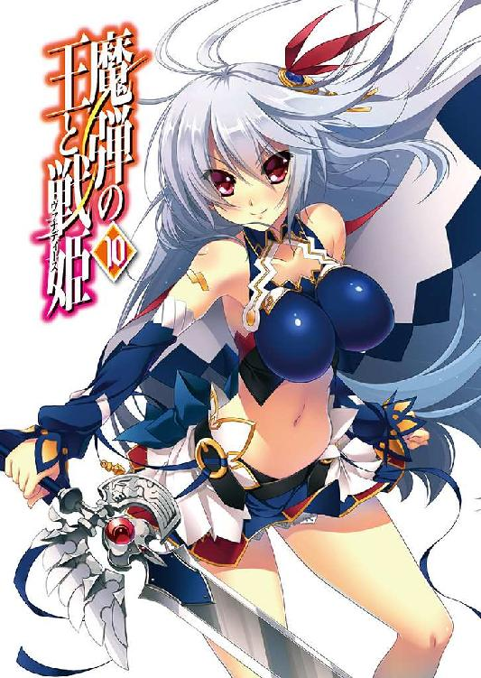
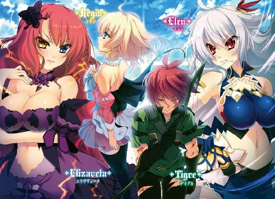
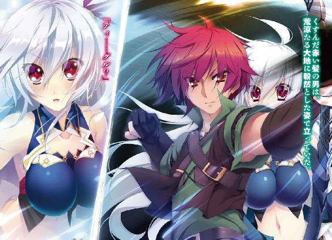
ＭＦ文庫Ｊ
魔弾の王と戦姫10
川口 士
口絵・本文イラスト●片桐雛太
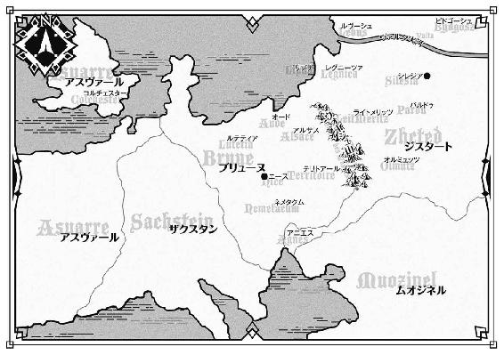
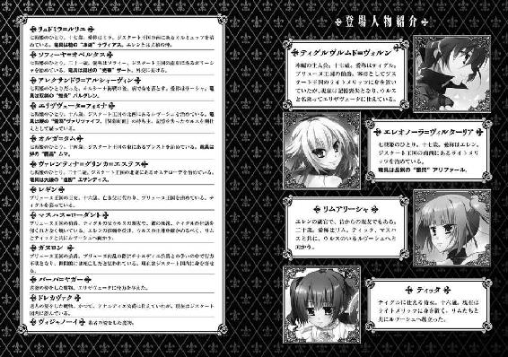
１ 帰還する者、訪れる者
空に広がる雲は薄く、風に煽られて音もなく揺らぐさまは白い霧を思わせる。それでも太陽を隠し、陽射しを遮るのには充分だった。
遠い春を待って、地上は静かに冬の寒さに耐えている。山野は雪に埋もれ、木々や草花は霜に覆われ、河川は氷に浸食されていた。
ブリューヌ王国の王都ニース。その中央にそびえるリュベロン山もまた、冷気に包まれてひっそりとたたずんでいる。
建国王シャルルはこの山で神々の遣わした精霊に会い、宝剣デュランダルと魔法の馬バヤールを授かったといわれる。
バヤールは黒いたてがみと赤い皮膚を持つ馬で、一日中荒野を駆けても疲れを見せることがなかった。デュランダルは鉄の甲冑や盾をたやすく斬り裂き、怪しげな呪いをはねのけた。竜や精霊、妖魔の類をも斬ることができたという。
デュランダルを担ぎ、バヤールを駆ってシャルルは数多の戦場を巡った。そうして勝利を重ねた末に、ブリューヌ王国を興したのだ。
シャルルは神々に感謝の意を捧げ、リュベロンの山頂に神殿を建てた。それ以来、神殿は十数人の神官に管理され、平穏に時を過ごしてきたのである。
いま、その神殿を三人の男女が訪れていた。華奢な身体に白い絹服をまとい、マントを羽織っている若い娘と、彼女に付き従う男女がひとりずつ。
彼らは神殿長に挨拶をすませると、とくに話に興じるでもなく神殿を出た。三人の目的は、神殿の中ではなく外にある。
「この季節の寒さは厳しいものです。しばし暖まっていかれては？ 葡萄酒もご用意いたします」
神殿長はそう申し出たが、若い娘は礼を言って断った。神殿長の言うように、この山頂に漂う空気は肌を刺すほどに冷たいものだが、ゆっくり休むほどの余裕は彼女にはない。
娘は十六、七歳というところか。淡い金色の髪を肩のあたりで切りそろえており、中性的な顔立ちながら、頬の丸みには女性らしいやわらかさがあった。白い布に包まれた花束を丁寧に抱えている。
何気ない仕草にも気品を感じさせる、美しい娘だった。
彼女の名はレギン。
正確にはレギン＝エステル＝ロワール＝バスティアン＝ド＝シャルルという。ブリューヌ王国の王女であり、昨年亡くなった父王に代わって王国を治めている。
レギンの後ろに控えている二人は、護衛を務める騎士だ。ともに二十代半ばと若く、白銀の胸当てを身につけ、腰に剣を帯びていた。男の名はクロード、女はセレナという。
二人の表情が緊張しているのは、護衛という任務のためだけではない。いま向かっているのが、彼らにとっても重要な場所だからだ。
神殿から十数歩ほど離れたところで、レギンは足を止める。
そこには一つの墓があった。まだ真新しく、装飾らしい装飾のない簡素なものだ。ロランという名前の他には『騎士の中の騎士』という短い言葉だけが刻まれている。
ロランという人間を語るのには、それだけで充分だった。
『黒騎士』の異名を持ち、若くしてナヴァール騎士団の騎士団長を務め、その姿を見せるだけで近隣諸国の兵を震えあがらせた騎士ロランは、昨年に起こったブリューヌの内乱で命を落とした。戦死ではない。ガヌロン公爵によって謀殺されたのだ。
ロランの遺体はそのまま捨て置かれるかと思われたが、老宰相ボードワンがひそかに引き取って、ここに葬られた。ロランは捨て子であり、この神殿に勤めていた巫女に拾われて、育てられたからだ。
墓を見下ろして、レギンは白い息を吐く。墓前に花束を置くと、手を合わせて神々に祈った。
レギンは、ロランに対してあまり強い印象は残っていない。比類なき剛勇と忠誠については聞き及んでいたが、それが父王ファーロンに向けられたものであることを彼女は知っていた。
昨年のディナントの戦までは、それでよかったのだ。ファーロンは健康でその治世に陰りは見られず、レギンも自身を王子と偽っていた事情から、臣下や貴族、騎士たちと積極的に関わりを持とうとしなかったのだから。
それでも、こうして花を手向けに来たのには理由がある。父王なら必ずそうしただろうからというのがひとつ。
もうひとつは、一国を治める立場になってロランがいかに頼もしい存在だったのかを痛感し、あらためて畏敬の念を抱いたからだ。
西方国境は、最近とくに騒がしい。ザクスタン王国が一千や二千の兵を繰りだして、頻繁に小競り合いをしかけてくる。若き王女の統治がどれほどのものなのか、またロラン亡きあとの西方の守りについて、彼らは探りを入れているようだった。
ロランについて、王女はティグルヴルムド＝ヴォルンと少しだけ話をしたことがある。親しい者からはティグルと呼ばれている、くすんだ赤い髪を持つ若者は、黒騎士のことをこう語った。
「強い......とても強いひとでした。それに、立派な方だった」
実感のこもった言葉だった。彼は、テナルディエ公爵らの陰謀によって逆賊とされたとき、ロラン率いるナヴァール騎士団と刃を交えたことがある。ブリューヌ人でありながらロランを敵として戦い、その恐ろしさを肌で知った数少ない男なのだ。
ティグルにとってロランは強敵というだけでなく、恩人でもある。
ムオジネル軍が侵攻してきた際、ティグルのもとにはブリューヌの各地を守っていた騎士団が集まった。彼らが駆けつけたのはマスハス＝ローダントやユーグ＝オージェの要請に加えて、ロランの呼びかけがあったからだ。
いまレギンを補佐してくれる宰相のボードワンやマスハスも、ロランがいれば必ずや大きな助けとなっただろうと語ったことがある。
──あなたが生きていれば、とは言いません。
死者がよみがえることはない。ロランも、レギンの父も。
この世にいない者たちに代わって、自分たちがこの国を守らなければならなかった。
──この国を守ってくれて、ありがとうございました。
ロランの墓に深く頭を下げると、レギンは後ろを振り返る。二人の護衛は彼女から正確に三歩離れたところに立って、油断なく周囲に視線を巡らせていた。
「あなたたちは、祈らずともよいのですか」
この二人がロランを尊敬していることを、レギンは知っている。だからそう尋ねたのだが、セレナは微動だにせず、そっけなさを感じるほどの落ち着いた口調で応じた。
「お気遣いありがとうございます、殿下。ですが、そのために護衛の任をおろそかにしたとあっては、かえって黒騎士殿の魂を怒らせるでしょう」
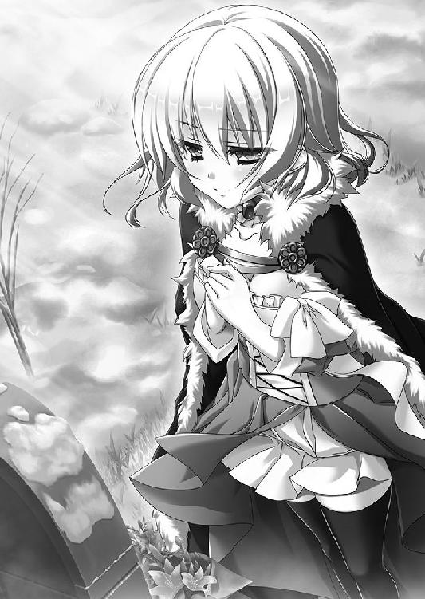
クロードは無言だが、彼女と同じ意見らしい。
「わかりました。それでは、あなたたちの分も私が祈っておきましょう」
王女は苦笑を浮かべてそう言うと、ロランの墓に向き直る。もう一度手を合わせた。
神々への祈りを終えたレギンは、二人に守られて山頂をあとにする。王宮へと続く山道を下りていった。クロードは数歩先を進み、セレナは隣に並んでいる。二人とも、一言も口をきかない。
淡い金色の髪を冬の風に揺らしながら、レギンは横目でセレナを見た。
──ジャンヌは、もうすこし親しみやすかったのだけど。
比較するべきではないとわかっていながら、レギンはついそんなことを考える。
ジャンヌは、王女が己の性別を偽ってレグナスと名のっていたころの護衛のひとりだった。レギンは彼女にさまざまなことを教わった。火の熾し方や、夜空に輝く星を見て方角を知る方法。王宮の教師ならば決して話さないような、俗っぽい昔話なども。
彼女はディナントの戦のあと、レギンを守る旅の中で命を落とした。
「殿下。私の顔に何か？」
レギンの視線に気づいて、セレナが怪訝そうな視線を向けてくる。レギンは首を横に振った。
「頼りにしていますね、セレナ。でも、根を詰めすぎないように」
自身を犠牲にしてでもレギンを守るのが、彼女たちの役目だ。王女はそれをわかっていながら、そう言わずにはおれなかった。
セレナはそれまで感情を表に出したことはなかったが、驚いたように目を瞠る。やわらかな微笑を浮かべて、彼女は小さく頭を下げた。
「殿下にご心配をおかけして申し訳ございません。無理をしているつもりはなかったのですが、今後はよりいっそう己を鍛え、お気をわずらわせることのないようにいたします」
意図を微妙に曲解された気もしたが、レギンは笑顔でうなずくにとどめる。
それからほどなく、レギンたちは王宮に帰還した。出迎えに現れたのは、宰相のピエール＝ボードワンだ。灰色の官服に身を包んだ老宰相はうやうやしく頭を下げた。
「殿下。ご無事でお帰りになり、何よりでございます」
ボードワンの顔立ちについて説明するならば、猫のようなという表現がふさわしい。丸みを帯びた顔の中で、灰色の髭が左右にぴんと伸びている。吊り上がり気味の目も、やはり猫を思わせた。
「リュベロン山に登ってきただけですよ。それに、クロードとセレナもいてくれました」
レギンが笑ってそう答えると、猫顔の宰相は二人の護衛に視線を向ける。クロードたちは首を横に振った。報告するようなことはとくにないという意味だ。
「宰相殿。話したいことがあります。執務室に来てもらえますか」
レギンの言葉はやや唐突だったが、ボードワンは訝る様子もなく応じた。
「かしこまりました。ところで、温めた葡萄酒でも用意させましょうか」
ボードワンも、リュベロンの山頂にある神殿には何度か足を運んだことがある。とくにこの季節の身を切るような寒さはよく知っていた。
「ありがとう。でも、お酒はやめておきましょう。紅茶をお願いできますか」
ちょっとした雑談や世間話などではなく、真面目な話ということだ。レギンに付き従って廊下を歩きながらボードワンは女官を呼び、紅茶を執務室へ運ぶよう命じる。
執務室に着いた。レギンとボードワンだけが中に入る。二人の護衛は外を見張るのだ。
レギンはこの王宮の主であり、彼女のための部屋はいくつもある。くつろぐための居室や遊戯室、私室、寝室、書庫などだ。居室や私室ももちろんひとつではなく、広さや装飾の異なる部屋が複数ある。
だが、王女はさして広くもなく、いくつかの調度品と紅馬旗が飾られているだけの執務室を好んだ。早急に処理すべき仕事がないときでも、執務室にいることが多い。レギンにとって、そこは気分が落ち着く場所のようだった。
レギンは執務机の前に座ると、ボードワンに椅子を勧める。老宰相は一礼して椅子に腰を下ろした。
「何でございましょうか。殿下がこの老骨から聞きたいこととは」
「ガヌロン公爵と、聖窟宮のことです」
率直に、レギンは切りだした。
ガヌロン公爵は、かつてブリューヌ王国の北部にあるルテティアの地を治めていた貴族だ。ガヌロン家は始祖シャルルの御世から続く名門であり、ブリューヌを代表する貴族のひとりといってよかった。
昨年、彼はテナルディエ公爵と共謀し、レギンを暗殺しようとした。また、国王ファーロンに怪しげな薬を飲ませて衰弱させ、その寿命をいちじるしく削った。それさえなければレギンの父はまだ健在だったろう。
そのガヌロンも、もういない。
テナルディエ公爵と戦って敗れた彼は、己の居館がある都市アルテシウムに火を放ったのだ。何百年も前から存在した町並みは業火に包まれ、焼け崩れた彼の居館には黒焦げの死体が数多く転がっており、どれがガヌロンかはついに判別がつかなかった。
そのアルテシウムの地下に広がっているのが、聖窟宮だ。
聖窟宮は、始祖シャルルが啓示を受けた地として伝えられている。古い時代の宮殿か神殿を思わせる造りの広大な空間で、そこには王族のみが開けられるという扉があった。
昨年の内乱の際、レギンは自らが王族であることを証明するため、ティグルたちとともに聖窟宮へと赴いた。
しかし、その扉の前にたどり着いたところでテナルディエ公爵の妨害に遭い、さらに天井が崩壊して、聖窟宮は埋まってしまったのである。
「なぜ、聖窟宮がアルテシウムの地下に──ガヌロンの足下にあったのでしょうか」
幾分かの不安をにじませて、レギンはボードワンに尋ねた。
今日まで、レギンはそれらのことについて深く考えたことはない。忘れたことはなかったが、統治者としての責務に追われてじっくり考える時間を持てなかった。不意に思いだしたのは、ロランを殺害したのがガヌロンだったからだ。
ボードワンはレギンの真剣な視線をまっすぐ受け止めると、記憶をさぐるように若干の間を置いて言った。
「建国の神話や古い文献によれば、始祖シャルルは初代ガヌロン公爵を非常に信頼していたそうです。シャルルにとって、ガヌロンはまさに親友と呼べる存在であったと。聖窟宮の存在を知った上でルテティアの地を与えたのは、その表れだったのでしょう」
「それだけでルテティアを──アルテシウムと聖窟宮を任せるものでしょうか」
理解しかねるという顔の王女に、老宰相はぴんと伸ばした髭を指先で整えつつ答える。
「とある文献によれば、初代ガヌロン公は神官だったそうです。それも、始祖シャルルが彼にルテティアを与えた理由やもしれませぬ」
ボードワンの言葉に、レギンは目を丸くした。
「神官、ですか......？ 私も王族として建国の神話は学びましたが、初代ガヌロン公が神官だったというのは、はじめて聞きました」
「殿下が見落としたわけではありません。建国の神話にはシャルルの親友であり、重臣だったとしか書かれていないはずですからな」
レギンの言葉をボードワンは否定せず、ゆっくりとした動作でうなずく。その態度に、王女は腑に落ちないものを感じて眉をひそめた。
「何か事情でもあったのですか？」
「神官といっても、いまの神官とはまるで異なるのです。初代ガヌロンは深い森の奥や雪に覆われた山中へと足を運び、神々だけでなく精霊や妖精にも語りかけ、その知恵を借りる者だったといわれております。呪術の類にも詳しかったと」
「それは神官というより、呪術師や祈祷師と呼んだ方がふさわしいのでは......」
おもわず素直な感想がレギンの口をつく。ボードワンは目を細めて苦笑を浮かべた。
「私も殿下と同じ思いですが、当時の人々はそんなガヌロンを神官と呼んでいたのです。おそらく神官に求められる役割も、いまとは違っていたのでしょう」
「だから、建国の神話には書かれなかったのですか」
ようやくレギンは納得した。建国王の信頼する親友が精霊と語らい、呪術にも詳しいようでは外聞が悪いと誰かが考えたのだろう。ボードワンは続ける。
「それに、ガヌロン家が神官の家系といわれていたのも、初代から数えて三、四代目までだったようです。おそらくブリューヌの貴族として生きていくうちに、神官としての知識やしきたり、流儀といったものが受け継がれず、消えていったのだと」
ブリューヌ王国が国としての形を整えていくにつれ、貴族たちの間にも数々の作法やしきたりが生まれた。ガヌロン家は代を重ねるうちに、神官であることを捨てたのだろう。ボードワンはそう説明した。
「私が知っていることはこれぐらいですが、多少なりとも殿下のお役には立てましたか」
「そうですね。ありがとう、ボードワン」
レギンは微笑を浮かべて礼の言葉を述べた。まだ気になることがないわけでもなかったが、とにかく疑問は解けたのだ。王女は話題を変える。
「そういえば、アルテシウムの様子はどうですか？」
内乱が終息したあと、ブリューヌの統治者となったレギンはむろんアルテシウムの復興にも着手した。兵を送り、物資を運ばせて北部の中心都市を建て直そうとしたのだ。
「先月届いた報告によれば、以前の三分の一ほどまで回復しております。もともと、北部と中央を結ぶ要衝で、ひとの流れが盛んですからな。あとは時間をかければ、かつての姿を取り戻すかと。聖窟宮も、そろそろ手をつけていい頃合いかと思われます」
レギンはアルテシウムの再建を決めたとき、瓦礫に埋もれた聖窟宮については放っておくように指示を出した。聖窟宮は都市に住む人々には関係のないものであり、アルテシウム自体の復興を優先させるべきだと考えたからだ。
ボードワンの提案に、しかしレギンは頭を振った。
「まだ先でいいでしょう。聖窟宮については、急ぐ必要はありませんから。春になったらもう一度報告を聞いて、それからでも......」
「かしこまりました」
ふと、レギンはボードワンから視線を外し、執務机に視線を落とす。ティグルのことを思いだしたのだ。レギンにとって聖窟宮は、兵たちを無為に死なせてしまった場であり、想い人を悲しませてしまった場でもあった。
その想い人は客将として異国にいるはずだったが、冬の海に落ちて行方不明だという。他でもないジスタートの使者がそう語ったのだ。
詳しく話を聞くという名目で、レギンはその使者を王宮の一室に留め置いている。事実上の監禁だったが、その程度の扱いを受けることは覚悟してきたのだろう、使者は苦情のひとつも述べずに数十日を過ごしていた。
その一方でレギンは事実を確かめるため、マスハス＝ローダントにジスタートへ向かってもらっている。
──ティグルヴルムド卿......。
どのような姿でもかまわないから、無事でいてほしいと思う。ブリューヌに戻ってきたときには、できるかぎりのことをして彼を迎えたい。彼が自分を守ってくれたように、自分も彼を守りたい。
レギンは碧い瞳に不安と希望を宿して、つぶやくような声で神々に祈った。
ボードワンは王女の表情からおおよそのことを察したが、黙って見守っていた。
ティグルの存在がいくつもの意味でレギンに必要であることを、この猫顔の宰相もよく理解していたのだった。
執務室を辞したボードワンは、王宮内にある己の部屋へと戻った。
老宰相の部屋のつくりはレギンの執務室とそう変わらない。左右の壁にはさまざまな書類や書簡をしまった棚が設置され、中央の壁には紅馬旗が掲げられている。その手前に古びた執務机と椅子、燭台があり、机の上には決済を待っている書類が山と積まれていた。
ボードワンは自身の手で燭台に火を灯すと、机をまわりこんで椅子に座る。先王ファーロンによって宰相に命じられてから、彼はこの作業を毎日のように行ってきた。
さっそく書類に手をつけようとしたところで、扉が外から叩かれる。猫顔の老宰相は髭を一度撫でてから、入るようにと声をかけた。
入ってきたのは文官のひとりだ。彼は一通の手紙をボードワンに差しだした。
「ネメタクムからです」
文官の言葉に、ボードワンは目を細める。彼はもう一度髭を撫でてから、その手紙を受け取った。文官は一礼して退出する。
扉が閉まったのを確認してから、ボードワンは無言で手紙に目を通した。
ネメタクムは、ブリューヌ王国の南部にある。テナルディエ公爵が治めていた地だが、彼と息子のザイアンが昨年に亡くなってからは王家が接収し、レギンの派遣した代官が統治していた。
国王と王女の殺害を試みたのだ。テナルディエ家は廃絶されてしかるべきだったが、いくつかの事情によっていまだに存続している。
ひとつは猶予期間だ。テナルディエ家を取り潰せば、膨大な数の人間が一夜にして職を失い、路頭に迷うこととなる。それを避けるため、レギンとボードワンはいくつか理由をつくってテナルディエ家を生きながらえさせた。
もうひとつは統治者としてのレギンの弱さだ。ファーロンが健在だったころのレギンは影が薄く、たしかな実績もなかった。彼女が王子として育てられていた理由についても、表向きは「神託が下りたため」というものだ。
内乱が終息し、落ち着きを取り戻した貴族諸侯の中には、レギンに対して懐疑的な眼差しを向ける者が少なくない。彼女がジスタート王国の傀儡──操り人形なのではないかと考えている者さえいる。
ボードワンやマスハスが地道に交渉や説得を行って王家への忠誠を誓わせているが、予断を許さない状況が続いていた。
そんなところへテナルディエ家の廃絶を告げれば、彼らを必要以上に刺激してしまう。たとえ正当な理由であってもだ。
テナルディエ公爵家は領地を接収され、跡を継ぐ者もなく、放っておいても消えてしまう運命にある。ならば、頃合いを見て廃絶しようと決めたのだった。
そのテナルディエ家に、不穏な動きがあるという。
──王女殿下の身辺をさぐっている......？
ボードワンがいま受け取った手紙には、そのようなことが簡潔に書かれていた。
手紙の主の名はジェラール＝オージェ。ブリューヌ東部のテリトアールを治めるユーグ＝オージェ子爵の息子であり、王宮の書記官を務める男だ。
彼はいま、ボードワンに命じられてネメタクムにいる。テナルディエ公爵家の残党が怪しい動きをしていないかさぐるために向かわせたのだったが、ジェラールは見事に彼らの動きをつかみ、調べてボードワンのもとに届けたのだ。
ジェラールの手紙によれば、動いているのはテナルディエ公爵の妻だったメリザンドという女性だ。彼女はファーロンの姪であり、レギンから見れば従姉にあたる。
彼女はテナルディエの妻として罪を問われるべき立場だったが、その血脈ゆえに処罰をまぬがれていた。レギンにしても、夫と子を失い、領地も何も持たない従姉の命を奪う気にはなれなかったのである。
ただし、レギンとボードワンはそのままメリザンドを放っておいたわけではない。ネメタクムのとある神殿に彼女を預けた。神殿で静かに余生を送ってくれればいいと思っていたのだが、どうやらその願いはかなわなかったようだ。
ボードワンは手紙に目を通し終えると、空中の一点を見つめて考えを巡らせていた。
◎
夜の闇に包まれた森の一隅に、二人の若者がいる。
ただならぬ光景だった。おたがいに地面に腰を下ろした体勢で、一方が、もう一方の眼前に剣の切っ先を突きつけているのだ。張り詰めた空気が二人を包み、冬の風にゆらめく焚き火が彼らの横顔を照らしていた。
ここは、ジスタート王国の北西部にあるルヴーシュ公国。その公都から歩いて一日ほどの距離にある森の中だ。日が沈んでから、もう一刻以上が過ぎている。
剣を突きつけられているのは、くすんだ赤い髪をした十六、七歳ぐらいの若者だ。服はあちこちが擦り切れており、顔にはかなりの疲労がうかがえる。
彼の名はウルス。このルヴーシュの統治者である戦姫エリザヴェータ＝フォミナに仕える従者だ。といっても数十日より前の記憶がなく、ウルスという名も記憶をさぐった末にやっと浮かんできた単語だった。
そのウルスに剣を突きつけているのは、褐色の肌が特徴的なムオジネル人の若者だ。こちらは二十歳前後というところか。長身で鼻と顎が細く、鋭い眼差しは野生の獣を思わせる。ウルスとは違い、彼は旅装に身を包んでいた。
このムオジネル人はダーマードという。ウルスを野盗から助けてくれた恩人のはずだったが、焚き火にあたって会話をかわしていたと思ったら、突然剣を抜きはなって突きつけてきたのだ。ウルスにしてみれば、わけがわからないどころではない。
──何なんだ、いったい。
白刃の先端を凝視しながら、ウルスは内心で呻いた。
「おまえが、ティグルヴルムド＝ヴォルンだと......？」
敵意と若干の驚きを帯びた声が、ダーマードの口から漏れる。一瞬のためらいの後、彼はウルスの顔に剣を突きこもうとした。ウルスはとっさに身体を後ろへ倒す。仰向けになった若者の身体の上、何もない空間を白刃が通り過ぎた。
逃がさぬとばかりに、ダーマードは剣の切っ先を下へと向ける。顔を青ざめさせながらも、ウルスは必死に左脚を伸ばした。おもいきり焚き火を蹴り飛ばす。
薪が崩れ、火の粉が飛んだ。炎がゆらめいて、そばにいるダーマードの脚を焼く。ムオジネル人の若者は短く苦痛の声を発した。ウルスの喉元に迫っていた剣が、横へ逸れる。
その隙を見逃さず、ウルスは地面を横に転がってダーマードの剣から逃れた。身体を起こし、ダーマードに背を向ける。木々の向こうにわだかまる闇の中へと飛びこんだ。
息を切らし、何度もつまずきながら無我夢中で暗がりの中を走る。木の幹にぶつからなかったのは、幸運といっていいだろう。
木の根に足が引っかかる。しまったと思う暇もなく、ウルスは派手に転倒した。肺の中にたまっていたわずかな空気が、言葉にならない声とともに吐きだされる。
「うぁ......」
すぐに立ちあがる気力は湧いてこなかった。呼吸が苦しい。全身が悲鳴をあげている。冷たい空気と地面に挟まれて、ウルスはぼんやりと暗闇を見つめた。
今日は、まるで現実とは思えないことばかりが起きている。悪夢を次から次へと見させられているような気分だった。
今日の昼ごろ、ウルスはエリザヴェータの供をして古い時代の神殿を訪れた。その神殿は、彼女にとって何やら忌まわしい記憶のある場所のようだった。
神殿を去ろうとしたとき、ルヴーシュの騎士たちが現れた。彼らはウルスが能力以上に評価されていると言って責め、ウルスだけでなく主たるエリザヴェータにまで剣を向けたのだ。騎士たちは、あきらかに正気ではなかった。
さらにバーバ＝ヤガーと名のる怪しげな老婆が現れ、混乱は加速する。
エリザヴェータはやむを得ず騎士たちを打ち倒しながら、ウルスとともに神殿の中へと逃げこんだ。だが、神殿の床が崩れて二人は地下に落ちてしまった。
エリザヴェータの竜具であるヴァリツァイフが二人を守ってくれたために軽傷ですんだが、異様な状況はそこで終わらなかった。
地下には、頭を二つ持つ異様な姿の竜がいた。双頭竜と呼ばれる奇形の竜だ。
エリザヴェータはウルスを守って奮戦したものの、竜の強さに暗闇という状況もあって劣勢を強いられた。
そのときだ。ウルスが不可思議な力を発揮したのは。
漆黒の弓。そして、エリザヴェータの雷渦から力を得て作られた矢。
それを用いて、ウルスは双頭竜を葬り去った。
安堵したのも束の間、再びバーバ＝ヤガーが現れ、ウルスは闇に呑みこまれた。
そうして気がついたら、たったひとりで森の中に倒れていたのである。黒弓は消滅しており、エリザヴェータの姿はどこにも見当たらなかった。
痛みと疲れと寒さとでろくに動けず、野盗に襲われかけていたウルスを助けてくれたのが、旅の商人と名のるダーマードだった。
焚き火にあたり、彼の狩ってきた兎を食べながらウルスは自分の身元を明かした。それから会話をかわしていくうちに、ふとダーマードが聞いてきたのだ。
ティグルヴルムド＝ヴォルンってやつを知っているか、と。
──そうだ。そのティグルヴルムド＝ヴォルンだ。
今日のことを振り返っている間に呼吸も落ち着いてきて、ようやくウルスは冷静に考えることができるようになっていた。
ダーマードに聞かれたとき、それはおそらく自分のことだとウルスは答えた。
その返答が、ダーマードを動かしたのだ。自分に剣を突きつけてきたときの彼の台詞を思い出してみても、間違いない。
「ティグルヴルムド＝ヴォルンか......」
声に出してつぶやいてみると、軽い頭痛がウルスを襲った。だが、黒弓の力で双頭竜を倒したときのように、頭の中にいくつもの情景が浮かぶということはなかった。
「──さて、どうするかな」
冷えきった身体に力をこめて、ウルスは身体を起こす。振り返ると、木々のそびえる暗がりの先に小さな炎の明かりが見えた。焚き火だ。必死に走ったつもりだったが、実際は三十アルシン（約三十メートル）ほどしか離れていなかったらしい。
服についた土をはらって、ウルスは考えを巡らせる。なぜ、ダーマードは追ってこないのか。自分はどうするべきか。
あまり時間はない。自分が満身創痍で、ダーマードには余裕があるという状況は変わっていないからだ。時間が過ぎるほどに夜は深まり、寒さが自分を苦しめるだろう。
「本当に、今日はわけのわからないことだらけだ」
だが、こんなところで倒れるつもりはない。何としても公宮に、エリザヴェータのもとに帰らなければ。
深呼吸。遠くの焚き火を見据える。手と足が動くことを確認する。だいじょうぶだ。
若者の黒い瞳に、強い意志の光が宿った。
ウルスは服の袖をつかみ、力任せに引きちぎる。竜との戦いで傷んでいたこともあるのだろう、弱っていた若者の力でも思い通りに引き裂くことができた。
念のため、木の幹に姿を隠す。ウルスは反撃の準備をはじめた。
ウルスが走り去った、木々の立ち並ぶ暗がりの奥をダーマードは見つめている。
「ぼんやりしたやつだと思っていたが、存外機転が利くじゃないか」
その声には忌々しさが多分に含まれていたが、彼の怒りはウルスよりも、自分自身に向けられていた。ごく短い時間のうちに、ダーマードは失敗を二つも犯してしまったのだ。
まだウルスがティグルだとはっきりしていないのに、剣を抜いてしまったこと。
そして、ウルスに剣を突きつけたあと、ためらってしまったこと。
あの段階では、剣を抜くべきではなかった。しかし、抜いてしまったからには即座に仕留めるべきだった。
それができなかったために隙が生まれ、ウルスに反撃と逃走の機会を与えてしまった。「しくじったぜ......。王弟殿下に知られたら、叱責程度じゃすまないだろうな」
ダーマードは、旅の商人などではない。ムオジネル王国の王弟クレイシュ＝シャヒーン＝バラミールの側近のひとりだ。戦士としても、また指揮官としてもこの若者は赤髭の王弟から評価され、期待されている。
今回、彼が命じられた任務はティグルの生死を確認し、生きていた場合は殺害せよというものだった。
旅の商人を装ってダーマードがジスタートに潜入してから、数十日が過ぎている。今日まで、ティグルに関する手がかりはろくに得られていなかった。やはり、噂通り海に落ちて死んだのではないかと思いながら、ダーマードは旅を続けていたのである。
「......『たぶん俺だ』なんて言われて素直に反応しちまったあたり、俺も焦ってるな」
ぼやきながらも、ダーマードの黒い瞳は、暗闇に包まれた森の奥から離れない。彼の手には、ムオジネル独特の反りのある刀身を持つ剣が握られたままだ。
ウルスが戻ってくると、彼は考えていた。
──森の中に逃げたからって、どうにかなるもんじゃない。この寒さの中、明かりもなしに森を抜けることなんてできるわけがないからな。四半刻ももたないはずだ。
外套に身をくるんで焚き火にあたっていても、冬の夜の冷気はわずかな隙間から忍びこんでくる。ダーマードは暑さに強く、寒さに弱いムオジネル人だが、彼でなくともこの夜気はこたえるだろう。ましてウルスは弱っていた。
──このまま戻ってこないで、森の中でくたばったら仕方がない。あいつが馬鹿だったってだけだ。問題は戻ってきたときだが......。
そこでダーマードは思考を中断する。闇にまぎれ、風を切り裂いて何かが飛んできた。
それは焚き火の中に飛びこんで、薪代わりの枝を一本弾き飛ばす。乾いた音が響いて炎がゆらめいた。
危険を察知して、ダーマードはすばやく地面に伏せる。冷気が彼の顎を撫でた。
五つ数えるほどの間を置いて、再び空気が唸る。若者の右腕の近くで硬質の音が響き、何かが跳ねた。その何かはもう一度跳ねたあと地面を転がる。
──石か！
ダーマードは戦慄を覚えた。身震いしたのは寒さのためだけではない。額にはじっとりと汗が浮かんでいる。ウルスの仕業であることを、ムオジネル人の戦士は確信していた。
──まずいな......。
自分のそばには焚き火がある。暗がりに潜んでいるウルスにとっては、絶好の目印だ。
しかし、ダーマードは火を消すことをためらった。ここは森の中だ。獣もいるだろう。もし狼などが近くにいれば、ひとたまりもない。
それに、火を消したからといって自分が有利に立てるわけではない。おたがい暗闇に難儀し、寒さに凍えながら、相手の位置をさぐりあうことになる。寒さを苦手とするダーマードにしてみれば、避けたい展開だった。
また石が飛んできて、焚き火に命中する。ぱっと火の粉が散った。
──かなりの速さだな。狙いもいい。あいつ、そうとう弱っていたと思ったが。
下手をすれば近くの木に当たって自分にはね返るだろうに、ウルスはそんなことを気にしていないかのような勢いで石を投げてくる。
──手じゃないな。服の裾をちぎって、即席の投石紐でも仕立てあげたか。
手で投げているのであれば、ここまで直線的には飛ばないはずだ。
「やるなあ」
感心したようなため息をダーマードは吐きだした。
焚き火を蹴ってこちらの不意を突き、森の中に逃げる。それだけで終わっていたら、ダーマードはウルスをたいして評価しなかっただろう。
あの記憶喪失の若者は、すぐに反撃してきた。しかも、剣を持つダーマードが有利な接近戦を挑んできたのではない。暗がりに身を潜めて、石を投げてきた。
──野盗に囲まれているのを見たときは、ただの行き倒れかと思ったが。
ムオジネル人の若者の黒い瞳から、戦意が薄れる。
ウルスはまぎれもなく戦士だ。そして、ダーマードはこういう男を嫌いではなかった。
──このまま続ければ持久戦になる。最終的には俺が勝つだろうが......。
能力や技量の差ではない。ウルスはダーマード以上に疲労しており、寒さへの備えも欠いている。じっとしているだけでも、冷気は身体から熱を奪っていくのだから。
だが、ダーマードも無傷ではすまないだろう。こんなつまらない戦いで傷を負うのは馬鹿馬鹿しい。何より、勝ったところでダーマードには得るものが何もないのだ。
四つ目の石が、やはり焚き火の中に飛びこむ。それを待って、ダーマードはすばやく立ちあがった。焚き火を背にして十歩ほど足を進め、木々の間に己の剣を突き立てる。暗がりの中へ呼びかけた。
「ウルス！ おまえと話がしたい。その証として、剣をここに置く。戻ってこい！」
大声でそう叫ぶと、ダーマードは地面に突き立てた剣から離れて焚き火のそばに戻る。ウルスが現れるのを待った。
自分から剣を突きつけておいて勝手な言い種だとわかっているが、ウルスは乗ってくるだろうとダーマードは考えている。そういう計算ができるはずだ、あの男は。
はたして五、六十ばかり数えるほどの時間が過ぎたあと、暗がりの中にぼんやりと人影が浮かびあがった。
「あと十歩......いや、五歩でいい。剣から離れてくれ。手を開いて、両手も挙げるんだ」
緊張をはらんだ声を、影が発する。ダーマードは言われた通りにした。手を挙げろというのは、石や短剣などの飛び道具を用心してのことに違いない。
土を踏む音がして、ようやくウルスが木々の中から姿を現す。右手には土まみれの布を巻きつけ、左手には小さな石を握りしめていた。ダーマードがおかしな動きを見せようものなら、即座に投げつけてくるつもりだろう。
ウルスは警戒の視線をダーマードに向けながら、地面に突き立ててある剣を引き抜く。呼吸を整え、落ち着いた声で言った。
「教えてくれ。どうして、いきなり襲いかかってきた」
予想していた質問だ。ダーマードは頭の中で用意していた台詞を述べた。
「自分はティグルヴルムド＝ヴォルンかもしれない、とおまえが言ったからだ」
ウルスが息を呑む。ティグルとダーマードとの間に、どのような因縁があったのだろうと不安になっているのだ。一呼吸分の間を置いて、くすんだ赤い髪の若者は尋ねた。
「ティグルヴルムド＝ヴォルンは、君の恨みを買うようなことをしたのか？」
「いいや。詳しいことは言えないが、いろいろと事情があってな。俺はそいつを殺すか生け捕りにしないといけないんだ」
両手を挙げたまま、ムオジネル人の若者は胸を張ってあっけらかんと答える。ウルスは呆気にとられた顔でダーマードを見つめた。ここまで率直に言うとは思わなかったのだろう。しかし、ウルスはすぐに気を取り直して新たな質問をぶつけてきた。
「じゃあ、どうして剣を捨ててまで俺を呼んだ？ 殺すにせよ生け捕るにせよ、俺が動けなくなるのを待てばいいだろう。説明すればおとなしく従うとでも思ったのか」
「それなんだがな」とダーマードはことさらに懐疑的な表情をつくって言った。
「おまえ、本当にティグルヴルムド＝ヴォルンなのか？」
この言葉はウルスの意表を突いたらしい。記憶喪失の若者は目を丸くした。
「......何が言いたい？」
「そのままの意味だ。たしかにおまえは言った。俺も一瞬信じかけた。だが、考えてみりゃ何も証拠がない」
ウルスは微動だにせず、息を詰めてダーマードの言葉に耳を傾けている。ダーマードはさらに言い募った。
「なあ、ウルス。自分がティグルヴルムド＝ヴォルンであることを証明する何かを、おまえは持っているのか？ ルヴーシュの公宮に戻れば、何かあるのか？」
ウルスは苦しげな表情になり、力なく首を横に振る。ダーマードは内心で安堵のため息をついた。ここであると言われたら、また考え直さなければならないところだった。
「おまえはティグルヴルムド＝ヴォルンかもしれないが、違うかもしれない。しかも記憶喪失ときてる。おまえの言葉だけを信じて動くのは、えらく危なっかしい。駱駝に目隠しをして砂漠へ乗りだすようなもんだ」
皮肉っぽい言い方に、ウルスはさすがにむっとしたらしくダーマードを睨みつけた。
「さっきまで俺を殺そうとしていたやつの台詞とは思えないな」
「じゃあ、もう一度聞くぞ。おまえは本当にティグルヴルムド＝ヴォルンなのか？」
ダーマードが言うと、ウルスは返答に詰まってうつむく。その顔には不安と迷いが見てとれた。褐色の肌の若者は小さく息を吐くと、ウルスに笑いかける。
「言い過ぎたか。おまえをおどかそうってわけじゃない。もしもおまえがティグルヴルムド＝ヴォルンじゃなかった場合、俺は早とちりで別人を殺した間抜けになる。そいつはごめんだってことだ」
悪びれない態度を一向に崩さないダーマードに、ウルスはため息をついた。面倒になったのか、ぞんざいな口調で尋ねる。
「それで、おまえは俺をどうする気なんだ？」
「ルヴーシュの公宮に連れていってやるよ」
身構えながら聞いたウルスに、あっさりとダーマードは答えた。
「はっきりとした証拠がない以上、おまえはルヴーシュに仕えているウルスだ。公宮に連れていって銀貨百枚をもらう」
ウルスは唖然とした顔でムオジネル人の若者を見つめると、理解できないというふうに首を左右に振る。
「俺を殺しかけたくせに、どうして謝礼がもらえると思ってるんだ？ 上司に訴えて牢獄行きに決まっているだろう」
「だったら、おまえはここに置いていく。自力で公宮に帰ればいいさ。できるならな」
ダーマードは鼻で笑い、痛いところを突かれてウルスは小さく唸った。
この森は公宮から歩いて一日ほどの距離にあるらしいのだが、まったく見覚えのない場所だ。どの方角に向かって歩けば公宮にたどり着くのかすらわからない。
加えて食糧も水もなく、武器といえば即席の投石紐だけである。ウルスひとりでは、この森を出られるのかどうかも怪しかった。
しかし、なおもウルスは渋面をつくって、疑わしげな眼差しをダーマードに向ける。
「公宮に帰ったら、俺は約束を反故にするかもしれないとは考えないのか？」
「そうなったら、またそのとき考える。さて、どうだ。俺の提案に乗るのか？」
風が吹いた。焚き火の炎がゆらめいて、二人の顔を下から照らし出す。
ウルスはすぐには答えなかった。しかし、十を数えるほどの時間が過ぎる前に結論を出した。ダーマードを見据えて、この夜で何度目かのため息をつく。
「わかった。おまえに案内してもらおう」
「商談成立だな」
ダーマードが笑って言うと、ウルスは皮肉混じりの目をムオジネル人の若者に向けた。
「そういえばおまえ、旅の商人って言ってたな。嘘だろう、あれ」
「何であれ売り買いができれば立派な商人だ」
どこまでも口の達者な男だった。ウルスは苦笑を浮かべると、手に持っていた剣をダーマードに返そうとする。だが、黒髪のムオジネル人はそれを受け取らなかったばかりか、鞘までウルスに放ってよこした。
「そいつはおまえが持っていていい。信用の証だとでも思ってくれ」
剣がなくとも、ダーマードにはまだ弓がある。短剣も。格闘にも自信がないわけではない。何か不測の事態が起きても、対応できる自信があった。
「わかった。じゃあ、公宮に着くまではそうさせてもらう」
その後、二人は飛び散った薪を拾い集めると、交代で見張りをしつつ夜を明かした。
夜の森は、いつ獣が近寄ってくるかわからない。火を絶やさないように気をつける必要もある。相手に対する感情はどうであれ、この場は協力しあうべきだった。
◎
ウルスとダーマードがひとまず協力しあうことを決めたころ、ルヴーシュの公宮の片隅では二人の男が青ざめた顔を突き合わせていた。
ひとりはどこか目元に苦労を漂わせる壮年の騎士で、名をナウムという。もうひとりは痩身を官服に包み、真っ白な髪を丁寧に整えた老人でラザールといった。ともにエリザヴェータの信頼厚い者たちである。
「戦姫さまは、まだ戻られんのか」
ラザールが顔を青ざめさせて言った。ナウムは苦しげな表情でうなずく。
エリザヴェータが散策に出るのは珍しいことではない。しかし、月が高く昇るころになっても帰ってこなければ、何の連絡もないというのははじめてだった。
とくに今回はウルスを連れている。公宮に勤める兵や女官たちの知るところとなれば、くだらない噂が公宮中にはびこるだろう。その光景を想像して、ラザールとナウムは頭を抱えたくなった。
「このことを知っている者は、何人いる？」
「知っていると断言できる者は、私とラザール殿のお二人だけでしょうな。まだ知らない者には、私たちから言い含めることができますから......」
ナウムは深刻な顔で答えた。
たとえば門衛には「戦姫さまは、別の門からお帰りになられた」と説明しておけば、ひとまずにせよ、ごまかすことができる。
身の回りの世話をする女官たちに対しても「所用あって、今日は別室でお休みになるとのことだ」と言えばいい。実際、戦姫という立場では緊急の用事などよくあることで、女官たちも慣れている。
「問題は、戦姫さまをどうやってお捜しするかだが......」
エリザヴェータは、どこへ行くかを自分たちには告げていない。
もともと彼女が散策を行うのは、ひとりになりたいときであることが多かったので、ナウムもラザールも強いて聞き出そうとはしてこなかったのだ。
「大がかりな捜索をすれば、戦姫さまの不在が多くの者に知られてしまいます。それだけは避けねばなりません」
ナウムの言葉にラザールはうなずいた。
「まして、こんな時間ではな」
城下の門は閉ざされ、月は空に高く昇っている。多くの家庭では夕食をすませている頃合いだ。このような時間に兵を動かせば、人目につくどころではない。
「ナウムよ。おぬしの指示で、騒ぎを起こさずにどれだけの兵を動かせる？」
「静かに、ということであれば五十ほどでしょうか」
「それでかまわん。すぐにでも動かせるようにしておいてもらえんか」
エリザヴェータの居場所がわかっていれば、ナウムもラザールもすぐに兵を動かしただろう。行方が知れないというのが問題だった。夜半にやみくもに兵を動かしたところで、徒労に終わるだけだというのを二人ともわかっている。
「夜明けを待って動かすとして、どうしましょうか」
「近隣の村々に聞いてまわるしかなかろう。戦姫さまは長期の視察に出られたが、緊急の用件にて公宮にお戻りいただかねばならなくなった、ということにでもしてな」
「他に手がなさそうですな......」
ナウムは顔の皺をなぞってため息をついた。
「それにしても......。ラザール殿は、何があったのだと思われますか」
真剣な口調でナウムは尋ねる。老文官の知恵を借りたいというだけではない。不測の事態に備えて、この点についても意見を統一させておく必要があったのだ。ラザールもいつになく顔をしかめる。
「ウルスが戦姫さまをかどわかした、と多くの者は考えるであろうな」
「では、ラザール殿のご意見は違うわけですな」
ナウムが念を押すように言うと、ラザールは不機嫌そうに口元を歪めた。
「むろんじゃ。たしかに、戦姫さまはウルスに入れこんでおる。だが、戦姫さまは年齢に似合わず聡い方だ。守るべき一線はわきまえておられる。たとえウルスが何か言おうとも、それで道を踏み外すような真似はなさらん」
「そのお言葉を聞いて安心しました」
胸を撫で下ろしつつ、ナウムは言った。本音だった。文官たちをまとめているこの老人と意見が対立するようなことになれば、ルヴーシュの混乱はさらに増すだろう。
そうして二人は一睡もできずに朝を迎えた。
彼らの主たる『雷渦の閃姫』が帰ってきたのは、夜が明けたころだ。
公宮を囲む城壁の、城下の町に通じている正門からではなく、目立たないところにある裏門に彼女は現れた。
報告を受けたナウムとラザールは、裏門に駆けつけて戦姫を出迎える。だが、二人はエリザヴェータの姿を見るなりそろって絶句した。
紅の髪は乱れ、紫色のドレスは何箇所も穴が開き、袖といわず裾といわず引きちぎられている。白い肌も泥にまみれ、傷がいくつもあった。靴もなく、裸足である。彼女の竜具である雷渦を左手に握りしめて、引きずっていた。
金色と碧色の異彩虹瞳は、疲労によどみながらも激情のうねりを見せている。気の弱い者ならば、まともに視線を合わせることすらできないだろう。
激しい戦のあとでさえ、このような醜態をエリザヴェータが見せたことはない。
彼女の引いている馬も同じように汚れ、たてがみは古びた刷毛のように乱れていた。その鞍には、十を超える数の兜が細い縄でくくりつけられている。兜は戦場から拾ってきたばかりのように汚れ、傷ついていた。金鎚で叩かれたようにひしゃげているものもある。
そして、彼女はひとりだった。ウルスの姿はない。
あまりにも壮絶な姿の雷渦の閃姫に、ナウムもラザールも言葉が出てこなかった。
「──いま、戻ったわ」
底冷えのするような声でエリザヴェータが言って、ようやく二人とも我に返った。この二人だけではない。裏門を守る門衛たちも、紅の髪の戦姫の姿を見かけた兵たちも等しく同じ反応を見せている。誰もが驚きを隠せなかった。
「医師を呼んでまいります！」
血相を変えてそう言うと、ナウムは大急ぎで医師を呼びに行く。彼自身が動く必要はなく、部下を呼べば事足りたはずだが、混乱がそうさせたのだ。
「何があったのですか......」
主にそう問いかける老文官の声は、震えていた。エリザヴェータが全身から放つ雰囲気は手負いの獣に似て、およそ声をかけられるものではない。それでもラザールの臣下としての責任感と、戦姫をいたわる気持ちは、戦慄に勝った。
だが、エリザヴェータは臣下の疑問に答えず、一方的に言い捨てる。
「馬を休ませてあげて。それから──この兜を磨いておきなさい」
兜に視線を向けたとき、エリザヴェータの瞳を複雑な感情がよぎった。しかし、そのことに気づいた者はラザールだけだった。痩身の老文官はうやうやしく一礼する。
「おおせの通りに」
ラザールは考えを変えた。たとえ自分の内心が無数の疑問で埋め尽くされているとはいえ、傷だらけの主を問い詰めるのは臣下のやることではない。
それに、エリザヴェータは正気を失っているわけではないらしい。いま兜を見つめた彼女の表情には、微量ながらもたしかに哀惜の念があった。
ラザールは近くにいた門衛や兵たちに指示を出す。エリザヴェータは兵たちを一瞥すると、胸を張って傲然と歩きだした。ラザールは彼女の後に続く。
紅の髪の戦姫は公宮に入った。寝室へ向かっているらしいとラザールは察する。そこでラザールはようやくウルスのことを思いだした。
「ウルスは、どうしたのですか」
あの若者の姿がないのは、なぜなのか。
「ウルスはいないわ」
そっけない口調でそれだけを答えると、エリザヴェータは唐突に話題を変えた。
「あの兜は──」
背中を向けたまま、彼女は言った。ラザールは聞き漏らすまいとエリザヴェータのすぐそばまで小走りに駆け寄る。
「あの兜は、この公宮に勤めていた騎士たちのものよ。十五人いたけど、すべて持って帰ってくることはできなかったわ」
ラザールは呆けた顔でエリザヴェータを見上げた。彼女の言ったことが、すぐには理解できなかったのだ。
寝室に着いた。エリザヴェータは寝室に入るなり卓上の鈴を手にとると、乱暴な手つきで鳴らす。
急ぎ足で現れた女官は、開かれた扉の前で一礼しようとして失敗した。幽鬼じみた主の姿に、女官はいまにも卒倒しそうな顔で立ち尽くす。ラザールは心底彼女に同情しながらも、主に代わって言った。
「戦姫さまはお疲れじゃ。手桶いっぱいの湯と、身体を拭く布。それから着替えと葡萄酒を用意してくれぬか。医師は、別の者が呼びに行っておる」
ラザールの冷静な態度と言葉が、女官にどうにか気を取り直させる。
「い、いますぐ、ご用意いたします」
舌をもつれさせながらも女官は深々と頭を下げ、寝室の前から姿を消した。
「ご苦労様」
エリザヴェータはねぎらいの言葉を老文官にかけると、椅子を引き寄せて座る。
「ラザール。あなたが焦るのはわかるけれど、もうちょっと待ってもらえるかしら。ナウムが来てから話した方が、無駄がなくていいでしょうから」
それからほどなく、医師を連れてナウムが現れた。医師は小柄な老婆だ。二人とも、よほど急いで駆けつけてきたらしく、顔を汗にまみれさせ、肩で息をしている。ナウムたちにわずかに遅れて、女官も湯を満たした手桶やら布やらを持ってきた。
「手当てをするにせよ、ひとまず着替えていただかねばなりませんな。恐れ入りますが、ラザールさまとナウムさまは外でお待ちいただけますか」
「私はかまわないけれど」
エリザヴェータは目を細めてそう言った。戦姫として、臣下の前で着替えようとも恥じらいなどしない。そういうつもりなのだろうが、ラザールは臣下としての態度を崩さず、礼儀正しく頭を下げた。
「戦姫さま。ご覧の通りナウムは息を切らしております。戦姫さまが傷の手当てをなさる間、休息をいただくわけにはまいりませんでしょうか」
エリザヴェータは服の袖で汗を拭うナウムに視線を向け、微笑を浮かべた。
「わかったわ。では、外で待ちなさい」
ラザールはナウムに目配せをした。二人は一礼をして戦姫の寝室を出る。顔を見合わせて深々とため息をついた。
実のところ、二人とも落ち着くための時間がほしかった。
エリザヴェータが公宮に戻ってきてからまだ半刻も過ぎていないというのに、驚かされっぱなしなのだ。一睡もせずに夜を明かした身には、いささか堪えた。これからエリザヴェータの話を聞くとしても、せめて心構えをしておきたい。
ラザールは隣に立っている壮年の騎士を見上げた。
「ナウムよ。戦姫さまの身に、いったい何があったのだと思う？ 何が起きれば、あれほどまでに傷つくのだ」
ナウムは渋面をつくって、首を左右に振る。
戦場で百や二百の兵に囲まれようとも、竜具たるヴァリツァイフを振るってたやすく敵を打ち倒してのけるのがエリザヴェータ＝フォミナだ。
彼女が兵たちの先頭に立って果敢に戦うさまを、ナウムは何度となく見ている。激戦の渦中にあっても敵の剣や槍、放たれる矢や石礫はエリザヴェータを傷つけることができなかった。
──いや、ひとつだけ......。
ナウムの脳裏を、悪夢のような情景がよぎる。
秋ごろに、レグニーツァと船を並べて戦った海賊の大集団との戦いを、ナウムはふと思いだした。海賊たちの旗艦に、突如として現れた白い巨大な化け物のことを。
サーシャの愛称で呼ばれるレグニーツァの戦姫アレクサンドラ＝アルシャーヴィンと、エリザヴェータの二人がかりでようやく倒した怪物。あの戦いで、サーシャを抱えて味方の船に戻ってきたエリザヴェータは、いつにない大怪我を負っていた。
戦姫を傷つけることができるとすれば、あのような怪物しかありえないのではないか。
「どうした？」
ラザールの言葉に、ナウムは我に返った。首を横に振る。
「想像力乏しき身の悲しさですな。私にはまるでわかりません。この上は、戦姫さまのお言葉を待つよりないでしょう」
ナウムがそう言ったのは、あの怪物の存在を口にするのも恐ろしかったからだ。それは彼にかぎったことではなく、海戦に参加したレグニーツァ、ルヴーシュのほとんどの兵に共通する心情だった。
ナウムは顔を青ざめさせながらも話題を変える。
「ところで、戦姫さまの馬の鞍にくくりつけられていた兜ですが......。我が公国の騎士たちのものでした。ひとつ残らず」
「間違いはないな？」
くどいように、ラザールは念を押す。ナウムはうなずいた。
「はい。ひとまず、連絡のとれない騎士がいるかどうかを調べさせております。今日中にわかるかどうかは難しいですが」
「いまはそれで充分じゃ。そのことも、戦姫さまがお話ししてくださるだろう」
そのとき、寝室の中から二人を呼ぶ声がした。手当ては終わったらしい。ナウムは礼儀を守って扉を叩き、エリザヴェータの返事を待ってから扉を開ける。
エリザヴェータは新たなドレスに着替えて椅子に座っていた。頬には小さく切った白い布が張られ、肩や腕には包帯が覗いている。その顔は戦意に満ちていたが、痛々しさを完全に拭うことはできなかった。
竜具である黒い鞭は、丸く束ねて腰の右側に提げている。そのことに気づいたナウムは訝しげに目を細めた。エリザヴェータは右利きであり、いつもは腰の左側に竜具を提げている。これでも扱えないことはないだろうが、難しいのではないか。
しかし、そのことについて尋ねる余裕はなかった。他に聞かなければならないことがいくらでもある。
「戦姫さま。手当ては終えましたが、すぐによくなるわけではありません。しっかりお休みになってください。お怪我を治すには、それこそが大事でございますから」
老医師はそう言ってうやうやしく一礼すると、女官をともなって寝室を辞した。
この場には、エリザヴェータとナウム、ラザールの三人だけとなる。
「帰りが遅くなって、二人には心配をかけましたわね。申し訳なく思います」
エリザヴェータは言った。しかし、その表情にも口調にも申し訳なさのようなものは見られない。むしろそのことに、騎士と老文官は安堵した。
「戦姫さま。何をなさってきたのか、何があったのかお聞かせいただけますか」
ラザールの言葉に、エリザヴェータは、昨日ウルスと散策に出てから何があったのかを説明する。
とある古い朽ちた神殿の前を通りがかったとき、騎士たちが現れて自分とウルスに剣を向けてきたのだと、異彩虹瞳の戦姫は語った。
「彼らは、私がウルスを不当に高く評価していると言って、ウルスを殺害しようとしたのですわ。私とウルスは彼らを説得したのだけれど、通じなくて......。ひとまず廃神殿の中に逃げこんだの。そのとき、竜が現れたのですわ」
「竜、でございますか」
ラザールは目をいっぱいに見開く。にわかに信じ難い話だった。ラザールはエリザヴェータの三倍近くは生きているが、これまで竜を見たことはない。しかし、竜のような存在でなければ、彼女をこれほどまでに傷つけることなどできないだろうとも思った。
「竜は倒したのですが、その重みに耐えかねたのか神殿の床が崩れたのです。神殿には地下道があり、私とウルスはそこに落ちて......。私は地下道から出ることができたのだけれど、ウルスを見失ってしまいましたの」
ともかく地上に出たエリザヴェータは、自分の馬を見つけた。逃げておらず、また野の獣の餌にもなっていなかったのは幸運といってよい。
エリザヴェータは近くの村へ行き、村長に命じて急いで人手を集めさせ、騎士たちの死体があるところへと戻った。日が暮れてあたりは暗くなっていたが、紅の髪の戦姫は報酬を約束して村人たちを動かした。
そうまでしてエリザヴェータが急いだのには、理由がある。
廃神殿のそばに着いてみると、死体のほとんどは獣や鳥に喰われて草原に無残な姿をさらしていた。狼以外にもイタチや狐、カラスや鷲などは死体を喰らう。
エリザヴェータは村人たちに死体を運ばせ、夜明けを待って村の近くに穴を掘り、まとめて埋葬した。
ただし兜だけは遺品として回収し、馬の鞍にくくりつけて戻ってきたのだった。もっとも、粉々に砕かれた兜もあったため、人数分を回収することはできなかったが。
エリザヴェータの話は、経験豊かな二人をして絶句させるほどの内容だった。
彼女の声は淡々としていたが、かえってナウムたちは戦姫の抑えている怒りを感じずにはおれない。いくばくかの間を置いて、エリザヴェータは口を開く。
「ナウム。昨日の昼過ぎから姿が見えなくなっている騎士はいないかしら。十五人いるはずだけど」
「現在、調べております。今日中に全員判明させてみせます」
ナウムは驚きを押し殺した声でそう答えた。ラザールと話していたときは頼りなげな返答しかよこせなかったが、このような事情となれば話は変わってくる。一刻も早くはっきりさせる必要があった。
「判明したら、いかがなさるのですか......？」
ラザールが慎重な口振りで尋ねる。エリザヴェータの話が正しければ、彼らは主に刃を向けた逆臣だ。その場で処刑されても当然であるばかりか、場合によっては遺族にも何らかの処分をほどこさねばならない。
老文官の質問に、戦姫は視線をそらした。己の右腕を見つめながら答える。
「彼らは、竜との戦いで命を落とした。そういうことにしておきますわ。遺族には見舞金と、兜を渡してやるように」
「それは......」
ラザールは口ごもった。君主の処置としては、逆に甘すぎる。しかし、老文官はそれ以上何かを言うことができなかった。色の異なる双眸が彼を鋭く睨みつけたからだ。
「この処置で、誰が困るというの？」
「主君に刃を向けた者が許されるような前例をつくることは、後々のためにもよくないことであると愚考いたします」
ラザールは怯みかけたものの、必死に反論した。しかし、異彩虹瞳の戦姫は冷然と首を横に振る。
「あなたの言うことはもっともですわ、ラザール。でも、考えてごらんなさい。騎士たちはウルスの待遇に不満があったと言っていたけれど、なぜ私がウルスとともにいるときに襲いかかってきたのかしら？」
エリザヴェータの言葉に、ラザールと、そしてナウムも顔をしかめて考えこんだ。たしかに奇妙である。ウルスひとりならば、いつでも狙う機会があったはずだ。
「彼らは正気ではなかったと、私は考えているわ。そして、彼らを指嗾した者がいる」
騎士たちをそそのかした者が他にいるという。納得できる結論だった。ナウムは真剣な表情でエリザヴェータを見つめる。
「必ずや、その者をさがしだしてみせます」
「お願いしますわ。ラザールもそれでいいわね」
ラザールもうなずいた。騎士たちは、何者かに操られた。事実はエリザヴェータしか知りようのないことだ。それならば、これ以上の反対はすまい。そう考えたらしい。
それから、エリザヴェータはウルスをさがすよう命じた。
「ウルスが死んだとは思えないわ」
「かしこまりました。兵を派遣し、廃神殿を中心にさがさせましょう」
ナウムが答える。決して義務的なものではない。この壮年の騎士も、ウルスに親しみを抱いている。
「では、戦姫さまは今日のところはお身体を休めてくださいませ。あとのことは我々が処理しておきますれば」
そう言ってナウムとラザールは退出しようとしたのだが、エリザヴェータは老文官だけを呼び止める。ラザールは不思議そうな顔をしたものの、寝室に残った。
エリザヴェータは迷うようなそぶりを見せたが、すぐにためらいを振り払ってラザールを見つめる。
「ラザール。あなた、バーバ＝ヤガーというものを知っていて？」
「......古い伝承やおとぎ話に出てくる、あのバーバ＝ヤガーでございましょうか」
怪訝な顔でラザールが聞き返したのも無理はない。それほど唐突な質問だった。
バーバ＝ヤガーは、ジスタートという王国ができる以前から知られている存在だ。
精霊であるとも、また妖精や怪物であるともいわれている。死者の魂がいくつも集まって、老婆の姿をとっているのだという説もある。
古い時代には神々のように崇められ、祀られたこともあったという。祈る者には力を授けてくれたとも、その逆に呪いをほどこしたとも伝えられている。とにかく、人間ならざる者であることはたしかだった。
ラザールの言葉に、エリザヴェータはにこりともせずうなずく。
「そのバーバ＝ヤガーですわ。このルヴーシュに、バーバ＝ヤガーを祀っていた古い神殿がいくつかあるでしょう。その場所を調べてもらえないかしら。できるだけ早く」
老文官はますます当惑した。いまはそんなことをしている場合ではないはずだ。
「あなたの言いたいことはわかりますわ」
ラザールの表情から内心を読みとったのか、エリザヴェータが言った。
「でも、いまの私には必要なの。そして、これは誰にでも頼めることではないのよ」
高圧的な口調だったが、その言葉が命令ではなく懇願であることを、ラザールは正確に理解した。彼女の双眸にも苛立ちや焦り、悔いなどがにじんでいるように見える。
老文官は、この頼みに真剣に向き合う必要を感じた。表情をあらためて、姿勢を正す。
決して思いつきなどではない。この紅の髪の戦姫には、それが必要なのだ。
「戦姫さまがそこまで仰るのであれば、ただちに調べさせましょう。ただ、かなりの数になると思われます。ある程度まとまったところで報告した方がよろしいでしょうか」
そのように意見を述べると、エリザヴェータはほっとしたようにため息をついた。
「そうですわね......。明日の夜に、一度報告してちょうだい。それから先は報告の内容次第で決めますわ」
「かしこまりました」
ラザールは一礼して退出しようとした。だが、ふと思い直して主に向き直る。
疑問はある。それを話してもらえないことに歯がゆさもある。しかし、自分の感情は二の次だ。それよりも、主に言っておかなければならないことがあった。
「戦姫さま。いまさら申しあげるまでもないことですが、私は先代の戦姫さまのころからこの公宮に務めております」
エリザヴェータは眉をひそめる。ラザールは続けた。
「統治者には、臣下の誰にも話すことができず、ひとりで抱えこむしかない秘密があることは知っております。打ち明けてくだされば、などと申しあげるつもりはございません。ただ、私どもは戦姫さまのためにいるのだということを忘れずにいただきたいのです」
深く頭を下げた老文官を、エリザヴェータは驚きを隠せない顔で見つめる。紅の髪の戦姫はわずかに表情を緩めて口元に微笑をにじませた。
「ありがとう、ラザール」
今度こそ一礼して、白髪の老文官は退出する。廊下に出ると、疲労が全身にのしかかってきた。しかしラザールは背筋を伸ばし、まっすぐ前を向いて歩きだす。彼よりはるかに若い主のために、弱音を吐いてなどいられなかった。
──ただちに手をつけねばならぬ問題は、やはりあれか......。
ラザールの胸中に苦いものがこみあげる。エリザヴェータとウルスに襲いかかったという騎士たちのことについて、対応を考えておく必要があった。
十五人もの人間が死んだのだ。戦などではなく、私事で。数日中は隠すことができるだろうが、いずれ明るみに出る。竜に殺されたと言って、信じてもらえるだろうか。
ラザールがもっとも恐れているのは、エリザヴェータがウルスに心を寄せるあまり、彼に反感を持つ騎士たちを殺害したという噂が流れることだった。
真実に興味を持つ人間はごく少数だ。多くの人々は好みのうわさ話で満足してしまう。公宮に長く勤めているラザールは、そのことをよく知っていた。
──戦姫さまの名誉が地に落ちるようなことだけは、避けねばならん。
そうしないためには、わかりやすい筋書きをつくってさっさと流してしまうべきだ。
ウルスと騎士たちの個人的な諍いということにしてしまえば手っ取り早いが、さすがに不自然だ。ウルスにはすぐれた弓の腕があるといっても、十五人と正面から戦って勝つことは無理だろう。
──それに、そのやり方はウルスがルヴーシュにいられなくなってしまうな......。
ウルスがルヴーシュでの生活をはじめてまだ数十日。公宮のほとんどの者にとって、彼はよそ者なのだ。人々の同情がウルスと騎士たちのどちらに集まるかは言うまでもない。
騎士たちの遺族や、公宮に勤める人々の反感がエリザヴェータやウルスに向かないような話にしなければならなかった。
「だが、最悪の場合はウルスを切り捨てなければならん......」
もしもエリザヴェータに非難が集中しそうになった場合は、ウルスを矢面に立たせる。ラザールはそう決めた。
エリザヴェータは決断できないだろう。ナウムにしてもためらうに違いない。だから、自分がやらねばならない。ラザールはウルスを嫌っていないが、エリザヴェータのためならば、くすんだ赤い髪の若者を犠牲にすることに躊躇はなかった。
──できれば、そんなことにはなってほしくないが。しかし、ウルスは生きているのだろうか。生きているとすれば、どこにいるのか......。
そうした考えや悩みをまったく表情に出さず、ラザールは廊下を歩いていった。
寝室にいるのが自分だけになると、エリザヴェータは天蓋つきのベッドに寝転がる。
部下たちの前で見せていた戦姫としての威厳ある表情は、そこにはない。疲れきった少女の顔があるだけだった。
「──嘘に嘘を重ねるのは、面倒なものね」
ラザールの言葉を思い出して、胸が痛む。
バーバ＝ヤガーの存在を彼らに話さなかったのは、説明しても信じてもらえず、混乱させるだけだろうと思ったからだが、それだけではない。
自分の手で討ち果たすという決意を、彼女が抱いているためだ。エリザヴェータの特徴ともいえる異彩虹瞳からは、戦意が失われていない。
さらにもうひとつ、理由がある。エリザヴェータはわずかに首を動かした。左右で色の異なる瞳が、己の右腕に向けられる。恐怖と苛立ち、後悔が彼女の双眸ににじんだ。
この右腕について、彼女は誰にも知られたくなかった。
与えられたときはたしかに、得体のしれない、恐ろしい力だと思った。
だが、その力にまったく頼らなかったのかといえば、そんなことはない。
ライトメリッツの戦姫エレンことエレオノーラ＝ヴィルターリアとの戦いでも、トルバランのような魔物を相手にしたときにも、彼女は右腕の力に頼った。とくにエレンに対しては、一撃の威力ならば負けないという確信さえ抱くことができた。
これほど忌まわしいものだとは、想像もしていなかったのだ。
いっそ右腕を斬り落とそうかと思ったが、考えた末に思いとどまった。それによって、この呪いから解放されるという保証がない。右腕を斬り落としたあと、呪いがたとえば左腕に転移してしまったらバーバ＝ヤガーと戦うどころではなくなる。
エリザヴェータの右手が、腰にくくりつけていた雷渦に自然と伸びる。それに気づいた紅の髪の戦姫は意識して左手を伸ばし、竜具をつかんだ。
──それにしても、バーバ＝ヤガーはどうして何も仕掛けてこないのかしら。
自分を葬り去るのであれば、傷つき疲れているいまこそが絶好の機会ではないか。だというのに、老婆の魔物はあれから一度もエリザヴェータの前に姿を見せていない。
昨日、村で眠れぬ夜を過ごしたときも、夜明けを待って公宮に帰ってきたときも、紅の髪の戦姫は不安を拭うことができなかった。
村人や、公宮に勤める兵たちが、騎士たちと同じようにバーバ＝ヤガーに操られて襲いかかってくるかもしれないと考えると、気を緩めることなどできなかったのだ。
いまもそうだ。このまま眠りこんでしまいたいほど疲れているのに、気持ちは昂ぶり、意識は冴えている。いつ扉を蹴破られて侵入されても対応できるようにと、身構えてしまっている。
それほど人間を警戒しながらも、おもいきって村に立ち寄り、またこうして公宮に帰還したのは、自分こそがルヴーシュを統治する戦姫であるという意識によるものだ。
哀れな騎士たちを弔うこともせず、ナウムやラザールに会わずに動くような真似はできなかった。また、もしも彼らが老婆の魔物に操られていたとしても、主として自分こそが手を汚すべきだと覚悟を決めていた。
だが、幸いというべきだったが、いまのところは何も起こっていない。
あるいは、地下道の戦いで自分が一撃を与えたからだろうか。ウルスを助けることはできなかったが、あのときの竜技にはたしかな手応えがあった。楽観的に考えるのは危険だが、いまはバーバ＝ヤガーも傷を癒やしているのかもしれない。
──あの魔物は、何としてでも私の手で滅ぼす。
ラザールに廃神殿の調査を命じたのは、そのためだ。バーバ＝ヤガーがどこにいるのかわからない以上、心当たりのあるところをしらみつぶしに調べていくしかない。
ナウムではなくラザールに命じたのは、必要とされる能力からして老文官の方が適任だろうと考えたからだが、ナウムに頼みづらいということもあった。
ナウムは海賊との戦いで、白鬼の魔物トルバランを見ている。
むろん、彼はエリザヴェータとトルバランがどのような会話をかわしたのかなど知らないはずだ。あのとき、海賊船の旗艦には自分とサーシャ、トルバランしか乗っていなかったのだから。
よほど耳がいいとしても、剣戟の響きと波の音に包まれたあの戦場で、自分たちの会話が聞こえるはずはない。それでも、エリザヴェータはナウムに頼むことをためらった。
不意に、視界の端がぼんやりと光る。左手に握りしめている黒鞭が、淡い光を帯びていた。あたかもエリザヴェータを励ますかのように。
竜具が何を伝えたいのかを漠然とながら悟り、雷渦の閃姫はくすりと笑った。身体を休めろと、ヴァリツァイフは言葉ではなくささやかな光で訴えている。
「ありがとう。それじゃ、少し眠らせてもらうわね」
エリザヴェータはそっと目を閉じた。もしも自分に危険が迫れば、雷渦はすぐに教えてくれるだろう。敵の動きもない以上、いまは考えるより眠るべきだった。
──ウルス......。無事でいて。
ほどなく、彼女は寝息をたてはじめた。
◎
一切の光を拒み、闇を丹念に塗りこめたような部屋だった。
乾いた空気の漂う中に、二つの影がある。ひとつは黒いローブに身を包んだ小柄な老人だった。さほど広くない部屋の中央に座して、微動だにしない。その双眸は静かに閉じられている。考えごとにふけっているようでもあり、眠っているようでもあった。
もうひとりは中肉中背の若者だ。短い黒髪に緑色の布を巻きつけて肩に垂らし、襟や袖に毛皮をあしらった厚手の服をまとっている。
彼は左手に小さな革袋を持って、壁によりかかっていた。ときどき右手を革袋の中に突っこんでは何かを取りだし、笑顔で口の中に運んでいる。
彼がかじっているのは、金貨だった。それこそ菓子でも食べるような気安さで、若者は金貨を咀嚼し、呑みこんでいる。
老人の名をドレカヴァク。若者の名をヴォジャノーイという。二人は人間のように見えるが、そうではない。なぜ人間の姿をしているのかといえば、その方が都合がよいというだけだった。現在の地上には、人間たちが栄えているのだから。
「見つかったかい？」
金貨を呑みこんで、ヴォジャノーイがドレカヴァクに尋ねる。老人の姿をした何かは答えなかった。ヴォジャノーイは肩をすくめると、革袋から新たな金貨を取りだす。
不意に室内の空気が流れ、風もないのに不自然に渦巻いた。
若者は金貨をすばやく口の中へ放りこみながら、空間の一点に視線を向ける。老人も目を開いてそちらを見た。
二人の視線の先にわだかまる闇が音もなく弾け、その奥からひとつの影が押し出されるように現れる。黒いローブに身を包み、粗末な作りの箒を持った小柄な老婆だ。
ローブは無数に引きちぎられてぼろ布のようであり、箒の穂先も獣にかじられたかのように乱れている。フードの奥から聞こえる息遣いも、荒い。
「──なんとまあ」
ヴォジャノーイが目を丸くして、床にうずくまる老婆を見つめた。ドレカヴァクは一言も発さないが、その両眼には驚きの色が浮かんでいる。
「ずいぶん派手にやられたもんだねえ、ヤガー婆さん」
口元を歪めて、ヴォジャノーイが老婆──バーバ＝ヤガーに笑いかけた。バーバ＝ヤガーはすぐには答えず、呼吸を整えることに専念する。
二人の見守る中、二十を数えるかどうかというところで老婆は身体を起こした。それを見て、ヴォジャノーイはわざとらしく身構える。彼の知っているバーバ＝ヤガーなら、このあと容赦なく箒で殴ってくるのだ。
だが、老婆はヴォジャノーイをじろりと睨みつけるだけにとどめ、箒を抱えるようにしてその場に座りこむ。鷲鼻をかきながら言った。
「いやはや。今回ばかりは返す言葉がないわ。ご覧の通りじゃからの」
ヴォジャノーイはその反応を意外に思いながらも、バーバ＝ヤガーに尋ねる。
「いまの雷渦の主って、そんなに強かったのかい？」
老婆の魔物は、目深にかぶったフードの奥から二人の仲間に鋭い視線を向けた。
「──『弓』がいた」
驚愕が無形の波となって、音もなく闇をかきまわした。ヴォジャノーイは革袋を落としそうになり、ドレカヴァクはわずかに身じろぎする。
「海に沈んだんじゃなかったのか」
「どこかで生きているだろうと思っていたが......。ルヴーシュにいたか」
若者の声には驚きが含まれており、老人の口元には感嘆にも似た笑みが浮かんでいた。二人が落ち着くのを待って、バーバ＝ヤガーはドレカヴァクに頭を下げた。
「すまぬ、ドレカヴァク。おぬしから借りた竜を死なせてしまった」
老婆の魔物が神殿の地下でウルスたちに差し向けた双頭竜は、ドレカヴァクのものだった。ウルスさえいなければ、双頭竜はエリザヴェータを喰らっていただろう。
ドレカヴァクは何の感情もうかがわせない顔で答える。
「いや。『弓』が生きており、それもルヴーシュにいたとわかったのは収穫だ。しかし、バーバ＝ヤガーほどの者が、痛手を負わされるまで気づかなんだか」
「それよ。気配を完全に隠しておったわ。双頭竜を打ち倒すまで、ただの人間の若造としか思わなんだ。いや......。あるいは『弓』としての記憶をなくしておるのやもしれぬ」
「ところで『弓』を連れてくることはできなかったのかい」
ヴォジャノーイが聞くと、バーバ＝ヤガーは不機嫌そうに鼻を鳴らした。
「そうしようとしたのじゃが『鞭』に邪魔されてな......。どこかに落としてしもうた」
「そいつは残念」
まったくそうとは思っていない口調で、ヴォジャノーイがつぶやく。新しく取りだした金貨を空中に放り投げた。若者自身は上を向いて、大きく口を開く。金貨は放物線を描いて、ヴォジャノーイの口の中へ飛びこもうとしていた。
まさに金貨を呑みこもうとする直前で、ヴォジャノーイは目を見開く。落ちてくる金貨を、右手ですばやくつかみとった。
「からかうのはやめてくれないかな。まったく、油断も隙もない」
つまらなそうに吐き捨てて、ヴォジャノーイは右手を開く。そこにあるのは金貨ではなく、古ぼけた銅貨だった。バーバ＝ヤガーが一瞬ですりかえたのだ。老婆の魔物はわざとらしく視線をそらし、箒の穂先を丁寧に撫でている。
二人のやりとりにはまったく関心がないというふうに、ドレカヴァクが尋ねた。
「これからどうするつもりだ、バーバ＝ヤガー」
箒をいじる手を止めずに、バーバ＝ヤガーは答える。
「まずは傷を癒やす。次に『鞭』を殺す。『弓』に手を出すとしたら、そのあとじゃな。さっきも言ったが『弓』にはどうもおかしな点がある。しばらく様子を見たい」
「雷渦の主を殺しちゃうんだ。もうちょっと楽しむのかと思ってたけど」
ヴォジャノーイが意外だという顔でバーバ＝ヤガーを見下ろした。
「そのつもりじゃったが『弓』が近くにいるとなるとな。殺すといっても、何日か様子を見てからにするが」
バーバ＝ヤガーは箒を軽く叩く。ついさきほどまで踏みしだかれた藁の束のようだった箒の穂先が、元に戻っていた。
満足そうにうなずくと、老婆の魔物は若者と老人を振り返る。
「ドレカヴァク。ヴォジャノーイ。おぬしらはどうする？」
「僕は『弓』が見つかったら加勢するよ。戦姫相手はきりがなくて面倒だからねえ」
金貨がなくなったらしく、革袋を逆さにして振りながらヴォジャノーイは答えた。ドレカヴァクは再び目を閉じる。
「わしはさがしものがあるのでな。いまは動けん。おぬしらに任せよう」
「よいのか？ 『弓』に対するわしとおぬしの考えは微妙に違うじゃろうに」
念を押すような口調で、バーバ＝ヤガーはドレカヴァクを見た。目を閉ざしたまま、老人は静かに言葉を返す。
「わしの考えは昔から変わらぬよ、バーバ＝ヤガー。ゆえに、気兼ねすることはない」
「──わかった。では、またいずれな」
バーバ＝ヤガーは箒を一振りする。暗闇の中の空気が流れ、ドレカヴァクのローブの裾がかすかにそよいだ。
そして、その空気が動きを止める前に、老婆の魔物の姿は消えていたのだった。
◎
エリザヴェータ＝フォミナを嫌っているジスタート貴族といえば、ポルスの地を治めているオルゲルト＝カザコフ以上の者はいないだろう。
『銀閃の風姫』の異名を持つエレンもさまざまな事情からエリザヴェータを敵視してはいるが、彼女でさえカザコフには及ばないに違いない。
伯爵位を持つカザコフは三十五歳。褐色の髪は短く、頬から顎にかけて豊かな髭をたくわえている。大柄で肩幅が広く、身体つきはたくましい。鋭い眼光とあいまって精悍な迫力があった。
実際、爵位と領地を受け継ぐまでは戦士として名を馳せた男である。彼の得意とする武器は剣でもなければ槍でもなく、鎚矛だった。カザコフがその豪腕で力強く鎚矛を振るうと、敵兵の甲冑はひしゃげ、肉がえぐれ、骨が砕けるのだ。
戦場では常に陣頭に立って鎚矛を振りまわす彼は『血塗れのカザコフ』と呼ばれて恐れられたものだった。
カザコフがエリザヴェータを嫌う理由はいくつかあったが、最大のものは色の異なる彼女の双眸だ。異彩虹瞳に、彼は強い嫌悪感を抱いていた。迷信的な恐怖と、生理的な忌避感といってもいいかもしれない。
かつてカザコフが己の領内を視察したとき、とある村で異彩虹瞳の娘を見つけたことがある。
「邪悪な精霊が呪いをかけたのだ。そうでなければ、人間がこのような不気味な目を持って生まれてくるものか」
そう言い放つや、巨漢のポルス伯爵はその場で娘を斬り捨てようとした。そばにいた従者が懸命に言葉を尽くして主を止め、カザコフは仕方なくといった態度で剣を鞘に収めたが、話はそれで終わらなかった。
「殺しはせぬ。ただし、娘の家族ともども奴隷として売り払ってくれる」
自領から追放するぐらいでは、気がすまなかったらしい。それ以上は従者にもどうにもできず、小さな村ではなおさらだった。
この一件はちょっとした騒ぎになったが、ヴィクトール王は何も言わなかった。
貴族には、己の領地における自治権が認められている。領内にあるすべてが、そこを支配する貴族のものなのだ。王国に害を及ぼす行為でないかぎり、王家は彼らの統治に対して介入はできない。
ただしヴィクトール王は、その家族がジスタートを出る前にひそかに引き取り、ある貴族の領内へ住まわせたという。これについては、ヴィクトール王がやはり何も言わないので真偽のほどは定かではない。
ともかく、カザコフのこの行動については眉をひそめる者もいたが、賛意を示す者も少なくなかった。カザコフの友人であり、エリザヴェータの父であったロジオン＝アブトもそのひとりである。
のちにロジオンが罪を犯し、逃亡を図ってエレンに討たれると、カザコフは白銀の髪の戦姫よりもエリザヴェータを憎んだ。
「ロジオンが罪を犯し、報いを受けたのは自業自得であろう。だが、彼に罪を犯させたのは娘の異彩虹瞳ではないか」
さすがにこの言葉に賛同する者はいなかったが、ポルス伯は自分の考えを信じた。
このような気性のカザコフにとって、異彩虹瞳の戦姫であるエリザヴェータの存在は腹立たしいなどというものではない。そうなると、カザコフの治めるポルスと、ルヴーシュが隣接していることまで気に入らなくなってくる。
「先代の戦姫のころは、こんな思いをしたことはなかったのだがな」
さらに最近、カザコフを憤激させたことがあった。
ビドゴーシュ公爵イルダー＝クルーティスが兵を起こしたものの、エレンとエリザヴェータによって阻まれたのだ。
ジスタート北部に領地を持つ貴族で、イルダーと親交のない者などいないといっていいだろう。もちろんカザコフも交流を重ねていたが、彼のイルダーに対する心境はやや複雑なものだった。
カザコフは三十五歳。イルダーは三十四歳である。同世代なのだ。おたがいの領地が近いこともあって、カザコフは昔からイルダーを意識せずにはいられなかった。
しかし、二人には明確な差があった。
イルダーは公爵であり、広大なビドゴーシュの地を治めている。カザコフは伯爵で、統治しているポルスの大きさはビドゴーシュの半分にも満たない。ポルスとて、ジスタート北部の中では豊かな部類に属するのだが、さすがにビドゴーシュとは比べようもない。
また、イルダーには王位継承権があった。もちろんカザコフにはない。
これらは覆しようのないものだ。だからこそ、カザコフは他の面において、イルダーに勝らなければと考えるようになっていた。鎚矛を扱うようになったのも、剣や槍ではイルダーにまったくかなわなかったからだ。
戦場で、カザコフはおおいに武勲をたてた。物騒な二つ名までつくほどに。
だが、イルダーも戦功においては他者に譲らなかった。当人の武芸の冴えもさることながら、彼は兵の信望が厚く、指揮能力に優れていた。周囲が賞賛するのは、常にイルダーだった。
カザコフもむろんイルダーを賞賛していたが、その奥底には常に苦い思いがあった。
そのような思いを抱いていただけに、イルダーがエリザヴェータに敗北したという話はカザコフを苛立たせずにはおれなかった。
「聞くところによれば、イルダー卿は従者を毒殺されたがゆえに兵を挙げたそうではないか。そのような卑劣な輩を討つのを、なぜ阻む。汚らわしい異彩虹瞳の娘ごときが」
最後の台詞に、カザコフの感情が集約されている。兵を集めてルヴーシュへ攻め入ろうかと、彼は本気で考えたほどだった。
カザコフの治めるポルスは、前述したようにルヴーシュと隣接している。兵を進ませるのはそれほど難しいことではない。また、こういった場合に仲裁に入ってくるであろうイルダーは、罪を問われて王都シレジアから動けない。
イルダー以外に、周辺の貴族諸侯で仲裁に入るほど力のある者というと、レグニーツァの戦姫とオステローデの戦姫ぐらいだろう。しかし、レグニーツァはアレクサンドラ＝アルシャーヴィンを失って以後、戦姫不在の状態が続いている。
オステローデを治めている戦姫は『虚影の幻姫』の異名を持つヴァレンティナ＝グリンカ＝エステスだが、彼女は身体が弱く、積極的に仲裁に入ってくるとは考えにくい。それに、距離もある。彼女が介入してくる前に、終わらせてしまえばいい。
しかし、ここまで考えて、カザコフはためらった。
ポルスの領主として、さすがに相手を嫌っているというだけで軍を動かすことはできない。まして相手は、ジスタートに七人しかいない戦姫のひとりだ。また、ルヴーシュでは異彩虹瞳が受けいれられていることも彼は知っていた。
そういった事情から、エリザヴェータに対して一方的な怒りを募らせて、カザコフはこの冬を過ごしていたのである。
ひとりの男がカザコフのもとを訪ねてきたのは、そんなころだった。
「──マイヤー＝チューリナ？」
突然の訪問者の名を聞いて、カザコフは顔をしかめた。聞いたことのない名だ。客の来訪を主に告げた召使いは、一通の手紙をカザコフに差しだした。
「そのマイヤー卿からです。ビドゴーシュ公爵閣下から紹介状を預かっていると」
訝しく思いながらもカザコフは手紙を受け取り、封を確認する。たしかにビドゴーシュ公爵家のものだ。丁寧な手つきで封をはがし、カザコフは中の手紙に目を通す。
「公爵閣下の筆跡だな。間違いない」
イルダー＝クルーティスの紹介ともなれば、会わないわけにはいかない。客を応接室に通すよう召使いに言うと、カザコフも服装を整えて応接室へ向かった。
背の低い男だった。
顔つきからして四十代と思われるが、体格は十四、五歳の少年と同じぐらいである。貴族らしい華美な服から伸びている手足は細く、頭は見事に禿げあがっていた。まぶたがやけに大きく、目は開いているのかどうかわからないほど細い。
気味の悪い男だと、客人を見下ろしながらカザコフは思った。
「マイヤー＝チューリナと申します。カザコフ様にお会いできて、光栄でございます」
マイヤーと名のった男は丁寧に頭を下げる。カザコフは鷹揚にうなずいた。
応接室の暖炉には明々とした炎が灯り、室内を暖めている。
大理石の小さなテーブルには、葡萄酒を満たした銀杯が二つ置かれていた。
「失礼なことを申しあげるが、私はあなたのことを今日はじめて知った。ビドゴーシュ公爵閣下の紹介状にも、あなたについて詳しいことは書いていなかった。あなたは、公爵閣下とどのような縁でお知りあいになられたのかな」
カザコフらしい、率直な物言いだった。マイヤーは気分を害した様子もなく、口元を歪ませる。自嘲気味の笑みを浮かべたつもりらしい。
「カザコフ様がご存じないのも無理のないことです。当家は血筋をたどればビドゴーシュ公爵閣下の遠縁にあたるのですが、爵位も領土もなく、王宮で名誉ある官職をいただいたこともない、名ばかりの貴族というやつでして」
「ふむ。それで、私にどのようなお話があると？」
カザコフは顔をしかめた。働き口がほしいというわけではないらしい。もしもそういった目的ならば、イルダーが紹介状にその旨を書いているはずだ。マイヤーが何を言いだすのか、カザコフにはまったく見当がつかなかった。
「その前に確認させていただきたいのですが......」
マイヤーは身を乗りだし、上目遣いにカザコフを見上げる。
「公爵閣下の紹介状には、私が何を望んでいるのか、どのようなお話を持ちかけるつもりなのか、一言でも書いてありましたでしょうか」
奇妙な質問だった。カザコフが首を左右に振ると、マイヤーは安心したようにため息をつく。重大なことを打ち明けるかのように、声を潜めて言った。
「兵を起こしていただきたいのです。できれば二千ほど」
「ほう」
とっさに、カザコフはそれしか言うことができなかった。
「このあたりで、戦の話はしばらく聞いたことがないが。私に何をさせようというのだ」
「ある男を助けだしていただきたいのです」
マイヤーは厳かに言うと、カザコフから視線を外して暖炉の火を眺める。
「ティグルヴルムド＝ヴォルンというブリューヌ人をご存じですか？」
「聞いたことはある。ライトメリッツの客将だろう」
逆臣の魔の手から王女を救い、ブリューヌの内乱を終息させた若き英雄。カザコフはそう聞いている。マイヤーはうなずいた。
「彼はいま、ルヴーシュに囚われているのです」
マイヤーが話した内容は、要約すれば次のようなものだった。
ティグルヴルムド＝ヴォルンはヴィクトール王から密命を受けて、海を隔てたアスヴァール王国へと赴いた。夏の終わりごろのことだ。
ティグルは密命を果たして無事に帰国したのだが、彼を政治的に利用できると考えたエリザヴェータに捕らえられ、ルヴーシュに連れていかれたのだという。
「ルヴーシュの戦姫には、野心があります。この北部一帯において、己の影響力を強めたいのですよ。彼女にとって幸いなことに、オステローデの戦姫は病弱で目立たず、レグニーツァに新たな戦姫はまだ現れない。いまのうちにと思ったのでしょう」
カザコフは口を引き結んで黙っている。先を促していると解釈したのか、マイヤーは言葉を続けた。
「先日、ルヴーシュの戦姫がビドゴーシュ公爵閣下の軍勢を討ったでしょう。あのときもそうでした。むろん戦姫は王命が下ってから動きましたが、まるで待ち望んでいたかのように積極的でした。公爵閣下を説得しようともしなかった」
平然と、マイヤーは偽りを述べた。エリザヴェータはイルダーを説得し、拒絶されたからこそ戦うことを決意したのだ。しかし、カザコフはそのことを知らない。
カザコフは無言だったが、その顔は怒りを帯びて赤く染まっている。その変化に気づいていないかのように、マイヤーは態度を変えずに言った。
「話を戻しましょう。ティグルヴルムド＝ヴォルンがルヴーシュに囚われていることを知る者は、ごくわずかです。もしも公になれば、ブリューヌと我が国の関係は最悪のものとなる。英雄を窮地に陥れたのですからな。ゆえに、ヴィクトール陛下はこの件を秘密裏に解決したいと考えております」
「陛下が......？」
ようやくカザコフは声を発した。マイヤーは、ややもったいぶった仕草でうなずく。
「私がここへ遣わされたのは、そのためです。私のような者がカザコフ様を訪ねても、このような重大な話だとは誰も思いますまい。せいぜい金の無心でしょう」
説得力があるとカザコフは思った。他ならぬカザコフが、マイヤーの訪問をそのように考えていたからだが。
「公爵閣下も、カザコフ様を深く信頼しております。自分が何らかの事情で動けないときに誰かを頼るとすれば、ポルス伯爵たるカザコフ様をおいて他にはおらぬと」
胸の熱くなる言葉だった。しかし、カザコフはその言葉を疑うように渋面をつくる。
あまりに突拍子がなさすぎる。もうすこし、信用できる情報がほしい。
「だが、そのヴォルン殿が囚われているというのはたしかなのか。二千の兵を動かすのも楽ではない。しかも、動かした挙げ句が間違いでしたでは笑い話にもならぬ」
「私が言葉を尽くすよりは、調べていただいた方がよいのでは」
マイヤーはそう答えて、続けた。
「最近、ルヴーシュの公宮に新しく雇われた者がいるかどうか。いるとして、その者の特徴がティグルヴルムド＝ヴォルンと一致しているかどうか」
「雇われた？」
「ルヴーシュの戦姫は、まわりの者を納得させるためにそうしているのです。もちろんヴォルン伯爵が逃げられないようにして」
それから、間を置いてゆっくりとマイヤーは言った。
「ヴォルン伯爵の救出に成功すれば、北部一帯における第一人者はカザコフ様となりましょう。ビドゴーシュ公爵閣下は、事情はともかく兵を起こしたことで汚点を残してしまいましたからな」
マイヤーの言葉は、カザコフの自尊心を的確に刺激した。イルダーを超えて、このジスタート北部で大きな影響力を持つ存在になれるという言葉は、カザコフにとって強烈なものだった。このような機会は、一度逃したら二度と訪れないに違いない。
それでもなお、カザコフは迷った。すぐには決断できなかった。
考えさせてくれと言おうとしたとき、それより一瞬早くマイヤーが口を開いた。
「カザコフ様がどうしても動けぬというのなら、仕方ありません。他の方にお願いしましょう。ですが、陛下も公爵閣下も失望されるでしょうな。『血塗れのカザコフ』なら、あの戦姫を恐れず立ち向かうだろうと仰っていたのですが」
マイヤーの言葉に、カザコフの眉がはねあがった。聞き捨てならない言葉だった。
「誤解されては困るが、私は戦姫などを恐れてはおらぬ。よかろう。ルヴーシュにヴォルン殿がいるかどうか、ただちに調べさせようではないか。それがわかり次第、二千の兵を率いてルヴーシュに乗りこんでくれる」
そのとき、ほんの一瞬マイヤーが歪んだ笑みを浮かべたことに、カザコフは気づかなかった。マイヤーはうやうやしく頭を下げる。
「いざというときは、戦姫を討ちとることを許す。そう言いつかっております。戦姫の強さは私がいまさら語るまでもございませんが、ご用心を。まして、あの異彩虹瞳にはどのような災いがあるやらわかったものではありませんからな」
異彩虹瞳という単語を、マイヤーはことさらに強調した。カザコフの負の感情を煽るかのように。
カザコフの屋敷を辞したマイヤーは、小さくため息をついた。一仕事終えたとでもいうかのように短い首を鳴らす。
「小物だな。テナルディエやファーロン、ボードワンの方がまだ遊び甲斐があった」
マイヤー＝チューリナというのは偽名だ。ビドゴーシュ公の手紙も、偽物である。
男の本名はガヌロンという。マクシミリアン＝ベンヌッサ＝ガヌロンと。
数日前まで、ガヌロンはオステローデにいた。戦姫ヴァレンティナの屋敷で厄介になっていたのだが、ある目的のためにオステローデを発ってここまで来たのである。
「あの調子ならカザコフは動くだろう。この件がかたづいたらブリューヌに戻るか。グレアストもいろいろとやっているようだからな」
灰色の空を見上げて、ガヌロンは独りごちる。グレアスト侯爵は、ガヌロンの腹心ともいえる男だ。昨年の内乱でガヌロンがジスタートに姿を隠す際、彼も同行させた。現在、グレアストはブリューヌの南部で暗躍しているはずだった。
「しかし、あのオステローデの戦姫は思った以上に厄介だな」
歩きながら、ガヌロンは独り言をつぶやく。
「いっそ殺しておくべきだったかな」
しかし、ガヌロンは首をひとつ振ってその思いつきを捨て去った。異性としての魅力は感じていないが、己の野心のために乱を起こそうとするヴァレンティナの姿勢は、彼の好みだった。
行動をともにしようとは思わない。また、敵として立ちはだかったら容赦なく叩き潰すつもりでもいる。だが、しばらくはこのままでいいと思うぐらいには、ガヌロンは彼女を評価していた。
「一年ばかり居候させてもらった借りは、今回の件で返したことにするか......」
身勝手なことをつぶやきながら、ガヌロンは城下の町へと続く通りを歩いていった。
２ ウルス
ウルスとダーマードは、呆然とした顔で断崖に立ち尽くした。頭痛をこらえるような顔で、二人は三十アルシン（約三十メートル）先の対岸を眺めやる。
対岸の岸壁には、ところどころが壊れた吊り橋がだらりと垂れ下がっていた。
夜明けとともに出発してから、半刻ほどが過ぎている。ウルスたちはちょうど森を抜けたところだった。
二人は慎重に身を乗りだして、自分たちの足下を見下ろす。こちらの岸壁にも同じように吊り橋が垂れ下がっていた。半ばで縄が切れてしまったらしい。
断崖の下には、凍りついた川が静かに横たわっている。
「遠回りするしかないな」
面倒そうな口調でダーマードが言い、ウルスは首をひねった。ちなみに、ウルスは腰に剣を吊し、枝を束ねたものを背負っている。枝は、焚き火のまわりに一晩中置いて乾燥させ、燃えやすくしたものだ。これぐらいは持てとダーマードに言われたのである。
「でも、たいした高さじゃないぞ。川は凍っているみたいだし、この断崖を下りて、川の上を歩いていけば、向こう岸に行けるんじゃないか？」
断崖の高さは目測で五、六アルシンほどだ。垂直だが、表面はごつごつして手や足をかけられるところは多い。
しかし、ダーマードは嫌そうな顔をして首を横に振った。
「凍っているからといって、安全に渡れる保証がどこにある。もしも途中で氷が割れたら冷たい水の中にどぼん、だ。死ぬぞ」
「じゃあ試してみよう」
ウルスはまわりを見回して、大人の頭部ほどもある石を見つけると両手で抱えた。断崖の縁まで歩いていき、眼下の川をめがけて放り投げる。
落下した石は硬い音を響かせて、凍った川の表面を滑るように転がった。ウルスは笑顔でダーマードを振り返る。
「ほら、だいじょうぶだって」
「いいや、いまのおまえの一撃で、見えないところに亀裂が走ったかもしれない」
頑なに拒絶するダーマードを、ウルスはさすがに呆れた顔で見た。もしかしたらと考えて、意地の悪い笑みを浮かべて尋ねる。
「もしかして怖いのか？」
「怖いわけがあるか」
ムオジネル人の若者はかっとなって、即座に言い返した。しかし、すぐに気を取り直してひとつ咳払いをする。諭すように言った。
「俺の国には、こんな言葉がある。『氷の上を歩くやつは阿呆だ』」
「ずいぶん率直だな」
「毎年、冬になるとな。凍った川の上を走ろうとして氷を踏み砕き、川の中に落ちる馬鹿なガキなんてのが必ず出てくるんだ。おっさんどもが、今年は最初に誰がやらかすかなんて賭けをするぐらいにな。──行くぞ」
断崖に沿って歩きだしながら、ダーマードは話を続けた。ウルスは仕方なく彼の後に続いて、話に耳を傾ける。
ムオジネルの冬は短く、周辺諸国とくらべても寒くないといっていい。もちろん雪が降る日もあれば、寒風が吹きすさぶ日もある。しかし、そうした日は本当に数えるほどしかない。冬の間中雪に囲まれているようなジスタートとは、まるで違うのだ。
川や湖に氷が張っても、そのほとんどは紙より薄いといわれる。そのような環境で生きてきたダーマードにとって、氷の上を歩いて渡るというのは理解しがたい考えだった。
「やっぱり怖いんじゃないか」
「用心深いと言え」
ダーマードがそう言い返すと、ウルスもそれ以上彼をからかおうとはしなかった。
氷の上を安全に歩けたとしても、その間は断崖に挟まれている。昨日のように野盗たちでも現れたら逃げ場がない。それを考えれば、ダーマードの慎重な姿勢は正しい。遠回りになっても、むやみに危険を冒すべきではなかった。
加えて、ウルスはまだ体調が万全ではない。相変わらずだるさを感じるし、額に手を当ててみれば微熱がある。無理をしない方が賢明だった。
「公宮までは、どれぐらいかかりそうだ？」
聞かれて、ダーマードは荷袋から地図を取りだす。
「このまま川に沿って北上すると、向こう岸へ渡れるところがある。向こう岸へ渡ったらまた川に沿って南下して......。公宮に着くのは明日の昼ごろだな」
「ご主人に心配をかけるな......」
「仕方ないだろう。俺たちは鷹みたいに空を飛べないんだから。なに、そのご主人とやらだって、生きたおまえに会えば涙流して喜ぶさ。だから、くれぐれもおかしな病気にはかかるなよ。とばっちりをくうのはごめんだ」
昨日とは違い、今日の空は晴れている。空気も寒いというほどではなく、獣の気配もしない。断崖に沿って歩きながら、二人は暇つぶしに他愛のない話をした。もっともウルスにはあまり話すことがなかったので、もっぱらダーマードが喋った。
「ジスタートに来て驚いたのは、やっぱりこの寒さだな。人間、住む気になればどんなところにでも住めるんだなって思ったよ」
「ムオジネルはそんなに暖かいのか？ 雪は降るんだろう」
「平地だと、一日以上残る雪はほとんどないな。一年中雪が溶けない山みたいなのはあるが、だいたい王侯貴族の避暑地か、狩人さえ立ち入らないような難所だ」
ここまでほとんど一人旅をしていたダーマードにとって、短い間のこととはいえ旅の連れがいるというのは新鮮な感覚らしい。昨日戦った相手だというのに、このムオジネル人の若者はそんなことなどなかったかのように、気さくに話しかけてくる。
ウルスとしても、昨日のことがあるとはいえ、ダーマードを無視して気まずい雰囲気をつくりたくはなかった。公都までの距離が一日延びたいまとなっては、なおさらだ。
そうなると、年齢が近いせいか意外に話がはずんだ。
「俺はさ、貧農の四男坊だったんだ」
「四男坊？」
目を丸くするウルスに、ダーマードは笑って言った。
「貧乏人の子沢山ってやつだな。大麦の畑を持ってはいたが、いちばん上の兄貴が受け継ぐことになっている。二番目の兄貴も、三番目の兄貴も、もらえるものは何もねえ。せいぜい、いちばん上の兄貴の仕事を手伝っておこぼれにあずかるぐらいだ」
「だから兵士になったのか？」
長男を除く農民の息子が生きていく方法は、少ない。
兄の仕事を手伝いつつ狩りや釣りなどで細々と食いつなぐか、村長に許可を得て自力で畑を切り開くか、兵士や傭兵になるかだ。
嫁のあてなども当然ない。自分ひとりでさえ食えるかどうか怪しい者のところに、嫁ぐ者などよほどの物好きしかいない。
だから、農民の次男坊、三男坊は一攫千金を夢見て兵士になる。
ほとんどは初陣で前線に配置されて使い潰されるのだが、中にはしぶとく生き残り、その後も戦い続けて手柄をたてる者もいる。ダーマードもそうした者のひとりだった。
「俺の夢はな、黄金と宝石で飾りたてた屋敷に住んで、両手を使っても数えきれないほどの美女をはべらせ、頭のいい奴隷にすべてを任せて暮らすことだ」
「奴隷？」
反射的に聞き返してから、ウルスは思いだした。ムオジネル王国には奴隷制度がある。ありふれた物事について話すように、ダーマードは応じた。
「一言で奴隷といってもいろいろだけどな。力仕事を任される奴隷もいれば、教師を務める頭のいい奴隷もいる。飯をつくる奴隷や庭の手入れをする奴隷もな。偉いひとになると服を着替えさせる奴隷なんてのも所有してるらしい」
「想像もつかないな......」
わざわざ他人の手を借りて着替える方が、面倒ではないのだろうかとウルスは思う。だが、それはウルスがムオジネル人ではないから考えることなのだろう。
ウルスもまた、自分の素性について話した。海岸に倒れていたところを、近くの漁村の娘に助けてもらったこと。そして、エリザヴェータとの出会い。
異彩虹瞳の件については伏せておいて、弓の技量を評価されて公宮で働くことになったとだけ語ると、ダーマードは興味を持ったのか黒い瞳を光らせた。
「おまえのその弓の腕前、ひとつ見せてくれないか」
そう言って、ムオジネル人の若者は自分の持っていた弓と矢をウルスに差し出す。
「ここらで一度、狩りをしておこうと思っていたところだ。公宮──公都に着くのは早くても明日だからな」
「食糧と水に余裕は？」
弓矢を受け取りながら、くすんだ赤い髪の若者は聞いた。
森の中に倒れていたウルスは、当然食糧も水も持っていなかったので、ダーマードの分をわけてもらっている。ダーマードが用心深い旅人の常として食糧と水を多めに持っていなかったら、公宮まで連れていくという話にならなかったかもしれない。
「あと一日分は問題ない。だからこそ、いまのうちに水と肉を手に入れる」
ダーマードは肩をすくめて、断崖の下の凍った川に視線を向ける。
「水については、火を熾して氷や雪を溶かせばいい。必要なのは肉だ」
「俺は病み上がりなんだがな」
ウルスはそう言ったが、半分は冗談のつもりだった。食事については、いまのところ完全にダーマードの世話になっている。借りを返しておく必要があった。
「獲物がとれるまでやれとは言わない。半刻でいい。駄目だったら俺がやる」
「わかった。やってみよう」
そしてウルスは、ウズラを一羽と野兎を一匹仕留めた。
◎
マスハス＝ローダントたちが一夜の宿とした廃神殿を出たのは、外が充分に明るくなってからのことだった。夜の間はちらついていた雪もやみ、空には太陽が輝いている。
陽射しは弱く、どこか頼りなげだったが、晴れているというだけでマスハスはかなり気が楽だった。目指す公都はすぐそこだ。昼過ぎには着けるだろう。
「ライトメリッツだけで話が終わるとは思っていなかったが、そこからレグニーツァを通過してルヴーシュか......。ずいぶん遠くへ来たものじゃな」
木々のまばらにそびえる平原を眺めて、マスハスは独りごちた。
現在五十六歳。ずんぐりとした身体を茶褐色の外套に包み、羽根飾りのついた帽子をかぶっている。腰には剣を帯びていた。外套は毛皮で裏打ちしたもので、動きがやや鈍くなってしまうものの、吐く息が白く霞むような寒さの中でも平気でいられた。
マスハスは、ブリューヌ王国の北にあるオードを治める伯爵である。そろそろ息子に爵位と領地を譲って隠居してもおかしくない年齢だが、そうなるのはまだ先のようだった。
彼はいま、レギン王女と宰相のボードワンに請われ、王女の相談役とでもいうべき役目についている。
客将としてジスタート王国に滞在していたはずのティグルが海に落ちて行方不明となったと聞いて、マスハスはその真偽を確かめるべくジスタートを訪れた。そして、ライトメリッツの戦姫エレオノーラ＝ヴィルターリアから詳しい話を聞いたのだ。
夏の終わりに、ティグルは使者としてアスヴァールへと赴いた。ブリューヌではなく、ジスタートの使者として。
ティグルは使者の任を果たしたものの、帰りの船が海竜に襲われ、海に落ちた。
話はそこで終わらなかった。
その後、白銀の髪の戦姫はまったく別の場所でティグルを見た。
ティグルは、ルヴーシュの戦姫エリザヴェータ＝フォミナに仕えていたのだ。彼は記憶を失い、ウルスと名のっていた。
ウルスとは、ティグルの父の名だ。エリザヴェータに仕えている者が本当にティグルなのかを見極めるため、マスハスはルヴーシュの公宮に向かっているのだった。
一人旅ではない。二人ばかり同行者がいる。
「マスハス卿。準備が終わりました」
そのひとりに後ろから呼びかけられて、マスハスは振り返った。艶のない金色の髪と、深い湖の底を思わせる青い瞳をした娘が立っている。彼女もマスハスと同じように毛皮で裏打ちした外套を着こみ、腰に剣を差していた。年齢は二十ぐらいか。
その表情にはまったくといっていいほど愛想がないが、マスハスを信頼していないというわけではない。彼女は基本的に、誰に対してもこうなのだ。
彼女の名はリムアリーシャ。親しい者からはリムという愛称で呼ばれている。エレンの副官であり、彼女のもっとも信頼する親友でもあった。
リムの後ろには三頭の馬がいる。そのうちの一頭にティッタが跨っていた。ティグルの侍女を務めている少女だ。
彼女は褐色の外套に帽子と襟巻きという格好をしている。兎の毛皮を使った白い手袋はやや薄汚れていた。小柄な身体に童顔も手伝って十四、五歳に見えるが、十六歳である。
ティッタはマスハスを見ると、青ざめた顔に微笑を浮かべてみせた。マスハスも長旅で強張った髭を撫でながら、笑みを返す。
昨日、廃墟も同然のこの神殿で休息をとっていたとき、ティッタは倒れたのだ。慣れない長旅で疲れがたまっていたのだろうとマスハスもリムも思っている。
「ティッタ。昼過ぎには公都に着く。もう少しの辛抱だ」
元気づけるようにマスハスが言うと、ティッタは「はい」と栗色の髪を揺らしてうなずいた。
マスハスたちがルヴーシュの公都に足を踏みいれたのは、昼を少し過ぎたころだった。三頭の馬を縦につないで引きながら、彼らは大通りの端を歩く。
「日が高くなればもう少し暖かくなるかと思ったが、案外そうでもないの」
「そうでしょうか。けっこう暖かくなったと私は思いますが」
空を見上げてぼやいたマスハスに、リムが首をかしげて応じた。
「ふむ。ブリューヌ人のわしとジスタート人のリムアリーシャ殿とでは、寒さの感覚に多少のずれがあるのやもしれんな」
「年齢や性別の違いもありますからね」
二人の感想はともかく、公都の住人にとってはいつもの天気であるらしい。外套と帽子に身を包んだ子供たちが楽しそうに通りを駆けまわり、恋人たちは寄り添いながら歩き、主婦たちは露店のそばで談笑に興じている。
露店の連なる通りでは、商人たちが威勢のいい声を張りあげていた。
「さすがに公都ですね。にぎやかです」
ティッタが口元をほころばせる。公都に入ったことで気持ちがいくらか落ち着いたのだろう。顔には疲労の色が見られるが、はしばみ色の瞳には明るい輝きが戻っていた。そのことに、マスハスとリムは内心で胸を撫で下ろす。
「ティッタの言う通りですね」
ライトメリッツを発ってからこの公都に着くまで、数多くの町や村を通ってきたが、これほど活気に満ちたところは見た覚えがない。
大通りは石畳で舗装され、さまざまな荷物を積んだ馬車が行き交っている。十字路では吟遊詩人が笑劇を詠い、道化師が通行人をからかっていた。露店では食べものが売られ、木を削って作った人形が売られ、ガラス細工が売られている。
リムでさえ、この喧噪には目を奪われそうになった。同じジスタートとはいっても、彼女が日々を過ごしてきたライトメリッツとはやはり違う。
遠くには、灰色がかった石を積み重ねた巨大な宮殿が見えた。あれが公宮だろう。
窓はひとつひとつが大きく、そのまわりには褐色の装飾がほどこされている。傾斜の急な屋根も同様だ。風雪に耐えうる堅牢さを重視しつつも、彩りを忘れてはいない。そんな印象を与える外観だった。
──あの中にティグルヴルムド卿が......？
リムは首を左右に振って気を取り直すと、同行者の二人に提案した。
「まずは宿をさがしましょう。今日や明日でかたづく問題ではありませんから」
「そうじゃな。こいつらも休ませてやらなければいかん」
自分が引いている馬たちを振り返りながら、マスハスは応じる。二人とも口には出さないが、ティッタへの配慮もあった。
「三頭もの馬を泊まらせることが可能な宿となると、手間がかかりそうですね」
「ふむ。すまんが、リムアリーシャ殿。少しの間こいつらを見ていてもらえんかな」
気になるものでも見つけたのか、マスハスはリムに馬を任せると、ひとつの露店へと歩いていく。
大鍋いっぱいに沸かした湯を素焼きのカップに注ぎ、葡萄のジャムと蜂蜜を溶かした飲みものを売っている店だ。簡単な竈を用意して火を燃やし続け、湯が冷めないようにしていた。
マスハスはその飲みものを人数分買うと、二つのカップを両手で持ち、もうひとつを腕で支えてリムとティッタのところへ戻ってきた。
「ひとまず、こいつで身体を内側から温めるとしよう」
二人の娘はそれぞれ礼を述べて、湯気の立ちのぼるカップを老伯爵から受け取る。火傷しないよう気をつけながら一口飲むと、ジャムと蜂蜜の匂いが鼻をくすぐり、かすかな甘さが口の中に残った。体内にじんわりと熱が広がっていく。
カップに口をつけながら、マスハスは何でもないような口調で言った。
「馬も預かってくれるような大きな宿は、この近くに三軒あるそうじゃ。より近いところから順に見てみるとするかの」
リムはきょとんとした顔で老伯爵を見る。
「どこでそんな話を聞いたのですか？」
マスハスはカップの飲みものをすすりながら、それを買ってきた露店を指で示した。リムは驚いた顔で老伯爵と露店とを交互に見つめる。
とくに世間話などをしていた様子はなく、飲みものを買ってすぐに戻ってきたように見えたのだが、マスハスは短いやりとりの中で必要なことを聞いていたらしい。
ティッタが小さくあくびをした。身体が温まって気が緩んだのだろう。マスハスはティッタの頭にぽんと手を置いた。
「眠くなったら、我慢せずに言うといい。わしがティッタを背負うからの」
「だ、だいじょうぶです、マスハス様。自分でちゃんと歩けますから」
顔を真っ赤にしてティッタは答えたが、言い終えた直後にまたあくびをしてしまう。恥ずかしそうにうつむいた栗色の髪の少女を見て、マスハスとリムは微笑を浮かべた。
それから宿はすぐに見つかった。部屋も幸い二つ空いており、マスハスたちはそこに泊まることを決める。部屋を二つというのはマスハスの部屋と、リムとティッタの部屋だ。三人で話をするときはマスハスの部屋に集まるのである。
ティッタとリムの部屋はそれほど広いわけではなく、天上から吊り下がっているランプも薄汚れていた。窓は小さなものがひとつだけ。カーテンも窓を覆うのに精一杯という大きさで、端がよれている。テーブルも椅子もない。
だがベッドは二つあり、壁は厚く、厚地の毛布がそれぞれ三枚用意されていた。
「これなら、防寒具を着たまま寝るようなことはしなくてすみそうですね」
ティッタが毛布の具合をたしかめて、ほっとしたような笑みを浮かべる。
厚い外套は寒さから身を守ってくれるとはいえ、やはり重い。甲冑の重さに慣れているリムやマスハスは平気だったが、ティッタには地味に辛かったようだ。
それに、防寒具を何日も着たままでいると頭や首筋がかゆくなる。リムやティッタの場合は髪に癖がつくのも気になるところだった。
リムはベッドのそばに荷物を置くと、ティッタを振り返る。
「長い旅で疲れているでしょう、ティッタ。あなたは休んでいてください」
「でも、マスハス様とこれからのことを相談するんですよね。あたしも──」
はしばみ色の瞳の奥に疲労を押し隠して、ティッタは気丈な姿勢を見せる。しかし、リムは首を横に振ると、妹を諭す姉のような態度でやんわりと彼女に言い聞かせた。
「あなたの気持ちはわかります。やっとここまで来たのですから。でも、だからこそ無理をしてはいけません。しっかり休んで疲れをとることが、いまのあなたの仕事です」
ティッタは諦めきれず、小さな手を握りしめて懇願するようにリムを見つめる。リムはやむを得ず、切り札を出した。
「ティグルヴルムド卿と会えたとき、彼を心配させたくはないでしょう？」
効果はてきめんだった。ティッタは消え入りそうな声で「はい」と答え、防寒具を脱いで髪を解く。ベッドにもぐりこんだ。
リムはベッドのそばに膝をついて、少女の栗色の髪を優しく撫でる。
「あなたが眠るまで、見ていてあげます。マスハス卿もそれぐらいは待っていてくださるでしょう」
ティッタは微笑を浮かべて小さな言葉で礼を言うと、そっと目を閉じた。ほどなく静かな寝息をたてはじめる。
──やはり、そうとう疲れていたようですね。
ティッタを起こしてしまわないよう、リムはそっと立ちあがった。音をたてないよう気をつけて部屋を出る。
マスハスの部屋を訪れてみると、灰色の髭の老伯爵は防寒具を脱ぎ捨て、ずんぐりした身体を三重の毛布にくるんでベッドに座っていた。
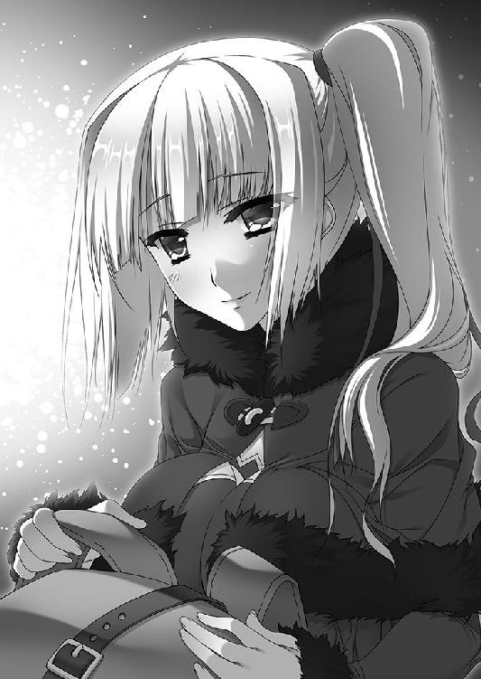
「来たか。とりあえずそこに座ってくれんか。床はさすがに冷たいのでな」
落ち着き払った態度でマスハスは言い、リムは反応に困った。首から下を毛布にくるんだその姿は、おとぎ話に出てくる丸い身体の妖精のようだ。もちろんそんなことは言えないので、リムはどうにか神妙な顔をつくった。ベッドの端に腰を下ろす。
「私は以前にも申しあげた通り、公宮に向かう前にティグルヴルムド卿──いえ、ウルスという方の情報を集めたいと思います」
ウルスという男が、実はティグルではないという可能性もあるのだ。リムがわざわざ言い直したのは自戒のためだった。マスハスは同意を示してうなずく。
「情報を集めるのはいいが、具体的にはどうするのかな」
「公宮に勤めている方をさがして、話をきいてまわります。こちらは旅人を装って」
その日の仕事を終えて、連れだって酒場へと繰りだす文官や騎士。城下へ買いものに出る侍女や女官。気晴らしのために、てきとうな理由をつけて城下を散歩する者もいる。
公宮の近くでそういった人物が出てくるのを待ち、てきとうなところで話しかけ、ウルスについて聞き出す。それがリムの考えだった。
説明しながら、リムは内心に不安が湧きあがってくるのを抑えきれずにいる。それをかすかな表情の変化から読みとったのか、金色の髪の娘の言葉が途切れるのを待って、老伯爵はゆっくりと口を開いた。
「リムアリーシャ殿も、思ったより疲れているのではないかな」
「......そう、見えるでしょうか」
リムの声からは、いつもの淡々とした冷静さが失われていた。マスハスは温かみのある笑顔でうなずいたが、全身を毛布にくるんでいるため貫禄に欠けることはなはだしい。リムはあらためてマスハスの格好を見つめて小さく笑ったが、やや不健康な笑みだった。
「マスハス卿の仰る通り、疲れているのかもしれません。どうも、よくない考えが抜けなくて......」
昨日までは、公都にたどり着くことだけを考えていればよかった。しかし、こうして公都に入ると、先のことが気がかりになってくる。
もしもティグルではなかったらどうするのか。また、まぎれもなくティグルだったとして、何も覚えていないと言われたら自分は冷静でいられるのか。
記憶喪失と聞いているが、それは自分たちでどうにかできるものなのか。自分たちの存在をエリザヴェータが知ったら、何かしてくるのではないか。
こんなことではいけないと思う。エレンは自分を信頼して任せてくれたのだから、何としてでも応えなければならない。
そう考えようとしても、リムは暗い想像を振り払うことができなかった。
落ちこむリムを見て、マスハスは毛布の内側で手を擦り合わせる。微笑を浮かべた。
「では、今日はもう休むことにして、そうなった場合に備えてどう対応するかを考えるとしようか」
「どう対応するか、ですか？」
青い瞳に戸惑いの色を浮かべるリムに、老伯爵は首を縦に振る。
「ウルスとやらがティグルではなかったとしよう。その場合、リムアリーシャ殿はエレオノーラ殿にどう説明されるのかな。わしらに頼んできたときの態度を考えても、確認してみたら違いました、ではすまんじゃろう」
「そこは、その、言葉を尽くして......」
とっさに答えながら、リムは自然と歯切れが悪くなってしまうのを自覚した。
エレンは自分の報告を疑いはしないだろう。だが、その後どれほど彼女が落ちこむか、どうやってなぐさめるかを考えると頭を抱えたくなる。これは、さきほどまで心の中にわだかまっていた不安とはまた別のものだった。
リムの表情の変化を確認するように眺めながら、マスハスは言葉を続ける。
「エレオノーラ殿の場合は、言葉を尽くさずともよいかもしれん。おぬしがそばにいてやれば、立ち直るじゃろう。しかし、説明しなければならない相手はエレオノーラ殿ばかりではなかろう。かくいうわしも王女殿下にどう報告したものか、いまから悩んでおる」
マスハスは苦笑を浮かべ、冗談めかして言ったが、リムは心底彼に同情した。自分が彼の立場なら、レギン王女への報告などとてもできない。言葉を考えるだけでもまいってしまうだろう。マスハスは真面目な顔になって続けた。
「報告しないわけにはいかん。誰かに代わってもらうこともできん。言葉をあれこれ考えすぎて報告が遅くなってしまったら最悪じゃ。かといって、ありきたりな言葉を並べるのもよくない。そんなものはすぐに見抜かれるし、自分自身にも情けなくなる」
「──ありがとうございます。マスハス卿」
リムは丁重に頭を下げる。たしかに、そうして多くのことを考えていれば、不安に押し潰されずにすむだろう。いまの自分にはちょうどいい。
「お言葉に甘えて、今日は休ませていただきます。明日になったら、ティッタも入れて三人で動きましょう」
「そうするといい。わしも休むとするかの。思ったより長旅は身体に堪えたようじゃ」
マスハスは毛布にくるんだ身体を大きく震わせた。リムはくすりと笑うと、ベッドから下りて老伯爵に会釈する。部屋を出た。
自分たちの部屋に戻ると、ティッタのすこやかな寝息が聞こえた。彼女の方を見ると、毛布が少しずれている。栗色の髪の少女のベッドに歩み寄ると、リムはそっと毛布をかけ直した。それから自分のベッドに潜りこむ。
いろいろなことを考えながら、眠りについた。
リムが部屋を出てから四半刻ほどの時間が過ぎたあと、マスハスはその身にまとっていた毛布を脱ぎ捨てた。厚手の外套を着こみ、腰に剣を下げて部屋をあとにする。
宿を出た。マスハスはひとまず、宿のまわりをぐるりと歩いてみる。近くにどのような店があるのか、通りはどう延びているのかをいまのうちに知っておく必要があった。何かあったときに役に立ちそうな店も、できるかぎり調べておきたい。
──エリザヴェータ＝フォミナ、じゃったか。その方の人柄がまだつかめんからな。
最悪の場合、エリザヴェータによって自分たちがこの公都に閉じこめられるのではないかとすら、マスハスは考えている。
ウルスという男がティグルであり、エリザヴェータがそれを周囲に隠し通そうとしているのならば、マスハスたちの存在は危険どころではないからだ。
マスハスひとりならばともかく、いまはティッタにリムという大事な二人の娘を預かっている身だ。彼女らの安全のためにも、慎重に行動しなければならない。
「あとは、うまい食事を出す店もさがしておかねばな」
いずれ目を覚ます二人を、喜ばせるために。
ぼんやりと空に浮かぶ太陽の下、マスハスは露店の並ぶ通りへと歩いていった。
◎
天上に星々を輝かせていた夜の帳が、徐々に薄れていく。東の空の果てが白く霞みはじめて、静かに夜明けを告げた。太陽はほどなく地上を照らすだろう。
ルヴーシュの公宮の奥で、エリザヴェータが寝室を出たのはそのころだった。彼女が傷だらけで公宮に帰還した日から、二日が過ぎている。
紫を基調とした布地を重ね、フリルやレースをふんだんに用いたドレスを身にまとい、腰の右側には竜具たる黒鞭を提げて、紅の髪の戦姫は傲然と廊下を歩く。
頬には薬を塗った布を貼り、右腕には包帯を巻いていたが、色の異なる瞳は凛とした輝きを帯びて、痛々しさをまるで感じさせなかった。巡回している兵や見張りに立っている兵たちの敬礼にも、エリザヴェータは軽く手を振って応える。
その態度があまりにも堂々としていたので、かえって兵たちは不審に思わなかった。ナウムにもラザールにも報告せず、感嘆の面持ちで彼らの主を見送ってしまったのだ。
エリザヴェータが公宮から姿を消したことにナウムが気づいたのは、半刻後のことだ。
戦姫の寝室に慌てて飛びこんだ壮年の騎士はテーブルの上に置き手紙を見つけ、さらに戦姫のための馬が一頭なくなっているという報告まで受けて、天を仰いだのである。
公都を出たエリザヴェータは、薄闇に包まれた街道を馬で駆けている。
彼女は紫のドレスの上に白い外套を羽織り、羊毛で織った白い帽子をかぶっていた。この外套と帽子は、ウルスとお忍びで城下町へ出たときに身につけていたものだ。
ドレスのスカートには見えない部分で工夫が凝らされていて、裾をまくったり横乗りになったりせず馬にまたがることができる。馬の鞍には大きな荷袋がくくりつけられており、中には食糧や水、地図などが入っていた。
これらは口の堅い女官に命じて、前もって公宮の外に用意しておいたのだ。
──ウルスとのお忍びが、こんなところで役に立つとはね。
夜が明けたばかりの空気は凍えそうなほどだが、意識をはっきりさせるのにはちょうどよいとエリザヴェータは思っている。
二日前に公宮に帰還してから、エリザヴェータは常に緊張を強いられた状態にあった。彼女が恐れていたのは、公宮に勤める者たちがバーバ＝ヤガーに操られて襲いかかってくることだ。何も起こらなかったのは、本当に幸いだった。
そして昨日の夜、エリザヴェータはラザールからひとつの報告を受けた。バーバ＝ヤガーを祀っていた廃神殿について、老文官は調べてくれたのである。
──十ヶ所。ひとまず十ヶ所......。
荷袋の中の地図には、それらの位置が記されている。うまくいけば、九日か十日ほどですべての廃神殿をまわることができるだろう。
エリザヴェータはふと、手綱から左手を離す。丸く束ねて腰に提げた黒鞭に触れた。
「ごめんなさい。ヴァリツァイフ」
申し訳なさそうに、雷渦の閃姫は目を伏せる。
「私は戦姫として失格なのでしょうね」
戦姫ならば、私情を封じこめてルヴーシュのために動くべきだ。
エリザヴェータは戦姫としての矜持と責任感を捨て去ったつもりはない。それに、バーバ＝ヤガーを倒すことは、間違いなくルヴーシュのためになるという確信もある。
だが、エリザヴェータはその考えを意識して排除し、私情のみで老婆の魔物を追っていた。胸の中に吹き荒れる怒りと自尊心を満足させるため、また右腕に宿っている忌まわしい呪いを解き放つために、いま彼女は馬を駆っている。
「戦姫として動くつもりはないのに、戦姫のものである竜具に頼っている。身勝手もいいところだわ。その上で、お願い。力を貸して、ヴァリツァイフ」
左手で、エリザヴェータは雷渦を強く握りしめる。
「あいつだけは──」
その呼びかけに応えるように、束ねられた黒鞭の柄から先がぼんやりと光を帯びる。空気を焼き焦がし、弾けさせて白い火花を散らした。励まして、背中を後押ししてくれているらしい。
「ありがとう」
ほんの一瞬、エリザヴェータの表情が緩んで微笑が浮かぶ。しかし、彼女はすぐにそれを消し去り、前を見据えて手綱を握り直した。
◎
エリザヴェータが公都を抜けだして一刻ほど過ぎたころ、二人の若者が公都の門をくぐった。ウルスとダーマードだ。
すでに空は明るくなっている。大通りでは商人たちが店を開く準備に忙しく、役人や職人、兵士らが急ぎ足で職場へ向かっていた。読み書きを習うために、連れだって神殿へ向かう子供たちの姿もある。
見慣れた城下町を目にして、ウルスは安堵と疲労のため息をついた。
「まさか二日以上かかるとは思わなかったな」
ウルスと並んで歩きながら、ダーマードが不機嫌そうに鼻を鳴らす。
「おまえだって、道を間違えたことに気づかなかっただろうが」
予定では、昨日のうちに二人は公都に着いていたはずだった。
だが、ウルスもダーマードもこのあたりの地理には疎い。橋を見つけて対岸へ渡ったあと、二人は公都への道とは逆方向へ進んでしまったのである。そのことにウルスたちが気づいたのは、二刻以上歩いたあとのことだった。
「それにしてもにぎやかだな。さすが公都なだけのことはある」
往来を見回して感心した顔をするダーマードに、ウルスは尋ねる。
「先にどこかで何か食べていくか？ 考えてみたら、報酬を渡すのにけっこう時間がかかるかもしれない」
「ああ。たしかに公宮ともなると手続きが面倒くさそうだな......。いや、待て。おまえを助けてここまで連れてきた恩人として、公宮がごちそうを用意するってことはないのか」
「あまり調子に乗るようだと、俺を殺しかけたこともしっかり報告するからな」
ダーマードのずうずうしさに釘を刺したところで、ウルスはふと足を止めた。視線を感じて振り返る。
ずんぐりとした身体を外套に包んだ、ひとりの老人が立っていた。老人は呆けたように口を開けて、驚愕の眼差しをウルスに向けている。
ウルスもまた、その老人から目を離すことができなかった。一目見た瞬間、若者は老人の顔に鮮烈な懐かしさを感じたのだ。自然に顔がほころぶほどの喜びが心の奥底からあふれ出て、ウルスは老人に呼びかけようとした。
「あ......」
ウルスが顔を強張らせたのは、その直後だ。空気が固形となって若者の喉をふさいだかのように、口をぱくぱくと動かすばかりで若者は声を出すことができなかった。喜びは溶けるように消え去って、戸惑いともどかしさがウルスの心を浸食する。
老人の名前が、わからない。
断片だらけの記憶の中にこの老人の姿はいくつも浮かぶ。何度も助けてもらった恩人であり、自分にとって大切な人間であることを知っている。
それなのに、名前が出てこない。思い出すことができない。
「あの、ええと、その......」
口からこぼれ出るのは意味のない言葉ばかりで、ウルスの顔に焦慮と苦渋がにじんだ。先に声を発したのは、老人だった。
「ティグル！ ティグルじゃな!?」
その叫びに、ウルスはおもわず肩を震わせる。半歩ほど後ろへ下がりかけた。老人はそのような若者の反応に気づかず、驚きと喜びの入り混じった顔で駆けてくると、ウルスを力強く抱きしめる。
「よかった！ 話には聞いていたが、生きて......生きておったのだな！」
ウルスは老人に言葉を返すことができず、かといって他にどうすればいいのかもわからず、困惑した顔で空を見上げた。
「──おい、爺さん」
そこへ割って入ったのは、しらけた顔でことの成り行きを見守っていたダーマードだ。ムオジネル人の若者は、老人の腕をつかんでウルスから強引に引き剥がす。
ウルスは内心で安堵のため息をついて、ダーマードに感謝した。彼がいてくれなかったら自分は棒立ちのまま、いつまでも動けなかっただろう。一方、感動の再会に無粋な横槍を入れられて、老人は怒りも露わにダーマードを睨みつけた。
「何じゃ、おぬしは。わしはいま忙しいのだ」
「そりゃこっちの台詞だ。何なんだ、あんたは。大声を出したと思ったらいきなり飛びついてきて......。みんな見てるだろうが」
その言葉に老人が周囲を見回すと、通りを歩いていた人々の何割かが足を止めてこちらを見ていた。眉をひそめる主婦たちもいれば、不思議そうな視線を向けてくる子供たちもいる。揉めごとか事件を期待しているような者たちまでいた。
ようやく老人は冷静さを取り戻し、ひとつ咳払いをしてウルスから離れる。
「これはいかん。ひとまず場所を移すか」
「勝手に話を進めるな。俺たちは行くところがあるんだ。見知らぬ爺さんに──」
「待ってくれ、ダーマード」
黒髪のムオジネル人の言葉を遮って、ウルスは老人をまっすぐ見つめた。
「俺もあなたに聞きたいことがあります。場所を変えましょう。ただ──」
ウルスは一瞬言いよどみ、唇を噛む。しかし、すぐに気を取り直して続けた。
「俺の名前はウルスです」
ウルスとダーマード、それから灰色の髪と髭の老人は人気のない脇道に入った。ウルスの言葉がよほど衝撃だったらしく、老人は肩を落としてがっくりとうなだれている。
二人の若者は顔を見合わせた。同情はしたものの、このまま老人が立ち直るのを待っているわけにもいかない。おもいきってウルスは話しかけた。
「すみません。名前を教えていただけますか」
老人は顔を上げる。頭痛をこらえるような表情をしていた。
「いや、そうじゃったな。記憶がないという話だった......」
もごもごと灰色の髭を震わせてつぶやくと、老人はあらためてウルスを見つめる。
「わしの名はマスハス＝ローダント。ブリューヌ人で、北のオードを治めておる」
「マスハス......」
ウルスは真剣な顔でうつむき、その単語を何度か繰り返した。マスハスは期待に満ちた顔で若者を見つめる。
「ど、どうじゃ。思い出せそうか......？」
ウルスはすぐには答えず、懸命に記憶をさぐる。聞き覚えのある名前だとは思った。しかし、その名前は、断片的な記憶に浮かぶ老人の姿と結びつかない。聞き覚えがあると思ったのも、何かの間違いではないかという気すらしてくる。
たっぷり百を数えるほどの時間が過ぎたあと、ウルスはマスハスに頭を下げた。
「すみません......」
マスハスは額を手で覆って天を仰ぐ。遠くブリューヌから何十日もかけて公都にたどり着き、ようやく出会えたかと思えばこの反応である。
だが、マスハスは気力を奮い起こしてウルスに視線を戻す。自分の顔を見たとき、ウルスは反応を見せたのだ。まだ望みはある。
「すまんが、わしと来てくれんか。おぬしにぜひ会わせたい者がおるのだ」
「なあ、先に公宮に行ってからにしないか？ この爺さんの話、長くなるぜ」
面倒くさそうな口調でダーマードが横から割りこんだ。ムオジネル人の若者は、あからさまにマスハスを煙たがっている。ウルスはダーマードに頼みこんだ。
「おまえには悪いけど、もうちょっとつきあってくれないか」
マスハスの名は思い出せなかったが、自分の記憶の中にこの老人の存在があったのはたしかだ。そのことがウルスを積極的にさせていた。
「お願いします。連れていってください」
「よし。こっちじゃ。その者らはわしと同じ宿に泊まっておるのでな」
若者の気が変わらないうちにとマスハスは急ぎ足になり、ウルスは老伯爵の隣に並ぶ。その数歩後ろを、おもしろくなさそうな顔でダーマードがついていった。
マスハスはウルスを横目で見て、二呼吸分ほどの間を置いてから口を開く。
「おぬし、ウルスといったが、その名はどこから？ 記憶がないのだろう」
「ええ。何か思い出せないかといろいろな質問をぶつけられて......」
ウルスは自分が海岸に倒れていたことと、拾われて漁村で介抱されたことを話した。ウルスと名のることになった経緯も。
それを聞いたマスハスは、灰色の髭を震わせてゆっくりとため息をつく。
「ウルスというのは、ティグルヴルムド＝ヴォルンの父親の名でな......」
そこまで言ったところで、老伯爵はふと後ろに視線を向けた。
「聞き忘れていたが、あのムオジネル人は何者だ？」
「あいつはダーマードといって......簡単に説明すると、恩人です。野盗に襲われていたところを助けてもらって」
「そうだったのか。あとで礼を言わねばならんな」
マスハスの言葉に、ウルスは複雑な気分になる。殺されかけたことは黙っておいたのだが、もし口にしていたらこの老伯爵はどのような反応を見せただろうか。
マスハスと並んで歩きながら、ウルスは不思議な感覚を覚えている。やはり、自分はこのひととどこかで会った覚えがある。もっとたくさん話を聞けば、記憶を取り戻せるかもしれない。あるいはマスハスの連れに会えば。
自分が何者なのかわからないという現実は、漠然な不安となってウルスの心の奥底にわだかまっている。とくに黒い弓など、不可思議な体験をしたあとではなおさらだ。
やがて三人は、ある宿の前に着いた。二階建ての、造りのしっかりした宿だ。馬を休ませるための小さな厩舎も併設されている。
宿の中に入ると右手に二階への階段があり、左手には帳場があった。中央には廊下がまっすぐ延びている。
「あなたの連れがいるというのは、どの部屋ですか？」
「階段を上ってすぐだ」
マスハスが言い終えたときには、ウルスは駆けだしていた。「待たんか」と後ろでマスハスが叫んだが、無視して勢いよく階段を駆けあがる。
マスハスを見たときの衝撃は、まだ胸の奥に残っていた。結局思い出すことはできなかったが、他の二人を見れば、何か思い出せるかもしれない。
マスハスと会い、話したことで、ウルスの記憶の中にあるいくつかの光景が鮮明なものとなっている。もっとも、前後のつながりがはっきりしないため、いつどこで何をしたのかはわからない。そのもどかしさが、若者の背中を押した。
──そのひとたちに会えば、きっと......！
すぐに階段を上りきり、ウルスは木製の扉を叩く。返事を待たずに押し開けた。
「えっ」
短い驚きの声を発したのは、部屋の中にいた栗色の髪の少女だった。室内にはもうひとり、艶のない金色の髪をした娘もいる。
二人は目を丸くして扉を開けたウルスを見つめた。ウルスも呆然としてその場に立ち尽くし、二人をまじまじと見つめる。
ランプの明かりにぼんやりと照らされた部屋の中で、二人とも下着しか身につけておらず、白い肌が露わになっていた。その手には、着替えている最中だったのか袖のない薄地の服が握られている。
ティッタの身体は華奢で、全体的に肉づきが薄く、腕も脚も細い。しかし、胸元や腰のくびれにはかすかな色香が漂いはじめ、彼女が成長しつつあることをうかがわせた。
リムは長身ながら均整のとれた肢体の持ち主で、腕や脚は細く見えながら、それだけに留まらないしなやかさを備えている。鍛えられ、無駄な肉をそぎ落とした戦士の肉体だ。だが、それでいながら決して無骨ではなく、美しかった。
豊かな胸のふくらみは上半分ほどまで覗いており、そこから下と腰のあたりは彼女の手に握られた薄地の服に隠されている。だが、上半分だけでもその大きさと重みを想像するには充分すぎた。
腰の下には、よく引き締まった肉感的な太腿がある。
「......ティグル様？」
「ティグルヴルムド卿......？」
ティッタとリムの口から、それぞれかすれた声が漏れた。二人とも驚きのあまり手にしていた服を取り落としてしまう。その拍子に、リムの胸は大きく弾んだ。
服が床に落ちた音で、ウルスはようやく我に返る。身をひるがえして駆けだし、階段を踏み外して見事に転げ落ちた。
派手な音がティッタとリムの部屋にも響いて、二人の娘ははっとして顔を見合わせる。ティッタは顔を真っ赤にしてその場にしゃがみこんだ。リムもまた頬を染め、左手で自分の胸を隠しながら慌てて戸口に駆け寄って、勢いよく扉を閉める。
再会の衝撃は完全にどこかへ吹き飛んでしまい、マスハスが扉を叩くまで、二人は無言でその場に座りこんでいたのだった。
マスハスたちの泊まっている宿から少し歩くと、一軒の酒場がある。昼前から開いており、酒だけでなく料理もいくつか出す店だ。ウルスたち五人はその店に入った。
四角い大きなテーブルを囲んで座る。ウルスはまだ痛みのとれない顔を手でさすっており、ティッタは恥ずかしそうに顔をうつむかせ、リムは不機嫌そうな顔をしていた。ダーマードとマスハスは呆れた顔をしている。
「こちらがてきとうに注文していいかな」
「任せる。あと、俺の分は自分で出す」
ダーマードがこう言ったのは、用心のためだ。こんなところでティグルヴルムド＝ヴォルンの知りあいと会うとは、さすがに予想していなかった。可能性があるとしても、公宮に着いたあとだと考えていたのだ。
これからどうなるかわからない以上、下手に金を出してもらって関わりをつくっておくべきではなかった。
先にマスハスたちが自己紹介をする。それからウルスとダーマードも自分たちのことを簡単に説明した。そのとき、マスハスが思い出したようにダーマードに頭を下げる。
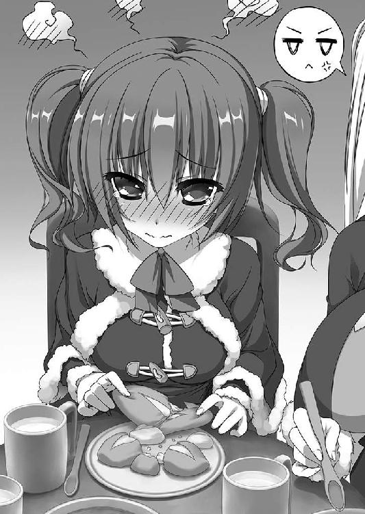
「野盗からティグル......その若者を助けてくださったようで、この通り礼を言う」
ムオジネル人の若者は何も言わなかったが、どこか傷ついたような表情を見せた。ウルスもまた、少し複雑な気分だった。
料理が運ばれてきた。
籠いっぱいのパンと、深皿に盛られて湯気を立ちのぼらせているシチュー、大きく切ったチーズ、赤カブとほうれん草のサラダがテーブルを埋める。ウルスとダーマードの腹がほぼ同時に鳴った。
しかし、なごやかな雰囲気で食事というわけにはいかなかった。
ダーマードは無言で食事にいそしみ、マスハスはどうしたものかという顔をしている。ティッタはいまだに顔を赤くしてウルスと目を合わせようとしない。リムもほとんど発言しようとしなかった。
いくつかの皿が空になってきたころ、ウルスはおもいきって聞いた。
「ティグルヴルムド＝ヴォルンというのは、どのような人間だったんですか」
マスハスとティッタは顔を見合わせる。そのとき口を開いたのは、リムだった。
「彼についてお話しするのはかまいませんが......」
リムは落ち着いた物腰を崩さずに続けた。
「その前に、あなたのこれまでの生活を話していただけますか。ウルスさん」
ウルスは瞬きをしたあと、まじまじとリムの顔を見つめた。彼女の発言に、どこか引っかかるものを感じたのだ。愛想のない顔の中の青い瞳は、若者を静かに見つめ返す。
──ああ、そうか。
ウルスはようやく気づいた。自分の名前をごく自然に呼んでもらえたからだ。マスハスでさえ、会ってからここに来るまでの間にウルスという名で呼んでくれたことはない。
ただそれだけのことなのに、ウルスは心がいくらか軽くなった。気を取り直して口を開き、自分がこれまでどうやって過ごしたのかを話した。
海岸に倒れていたところを漁村の娘に拾われ、おぼろげな記憶からウルスという名前をつけられたこと。それからしばらくは漁村で暮らしていたが、あるとき海賊に襲われ、エリザヴェータに助けられたこと。そして、彼女に仕えるよう命じられたこと。
これにはリムも目を瞠り、マスハスは灰色の髭を撫でながらため息をついた。ティッタはぽかんと口を開けてウルスを見つめる。
「馬丁からはじまり、側仕えとなり、相談役ですか......」
「弓の技量を評価されたというだけでは説明がつかんな。他に、何かあるのではないか」
気を取り直したマスハスが、正面からウルスを見つめる。ウルスはたじろいだ。
マスハスの言う通り、言わなかったことがある。マスハスと、そしてリムの反応を見るかぎり、隠し通すことはできそうにない。ウルスはくすんだ赤い髪をかきまわした。
「他言無用のこととしてくれますか？」
その場にいる全員がうなずくのを確認して、ウルスは口を開いた。
「ご主人──エリザヴェータ様の目に対して、俺が素直な感想を述べたから気に入ってもらえたそうです」
「目......？」
リムを除く三人がそれぞれ顔をしかめる。リムだけは、難問を目にしたように眉をひそめてうなずいた。
「異彩虹瞳ですね」
「ああ、瞳の色が左右で異なるという......。昔、そんな猫を見たことがあったな」
ようやく理解したマスハスが、思いだしたようにつぶやく。その言葉にティッタも記憶を掘り起こされたらしく、首を縦に振ってみせた。
「異彩虹瞳を恐ろしいものとして忌み嫌う地域は数多くあります。エリザヴェータ様も、過去に辛い経験をなさったのでしょう」
言ってから、内心の同情を振り払うように、リムは首を左右に振る。ウルスを見た。
「漁村の方たちに助けてもらってからは、記憶がないというようなことはないのですね」
「そうだな。それ以降の記憶はちゃんとある。助けられる前のことを考えると、頭がぼんやりしてくるんだが、そんなこともない」
「ありがとうございます。あなたがこれまでどのように暮らしてきたのか、だいたいわかりました。それを踏まえてお聞きしたいのですが......」
そこで一旦リムは言葉を切る。そのまま続きを切りだすか迷ったようだったが、青い瞳に決意を宿して彼女は口を開いた。
「あなたは、いまの生活に満足しておいでですか？」
「......どういう意味だ？」
リムの意図をはかりかねて、ウルスは尋ねる。リムは淡々と答えた。
「言葉通りです。あなたが、エリザヴェータ様にお仕えする生活を大切なものと感じているのなら、私たちはこのまま帰ります」
その言葉に、マスハスとティッタが椅子から腰を浮かせる。二人のブリューヌ人は愕然とした顔でリムを見下ろした。
「ど、どういうことですか！」
顔を青ざめさせて大声を発したのはティッタだ。マスハスは無言だが、気持ちは彼女と同じなのだろう。灰色の髭が震えている。リムは冷静さをまったく崩さずに答えた。
「ウルスさんには、ウルスとしてのたしかな記憶がありますが、ティグルヴルムド＝ヴォルンとしての記憶はないと言っていいでしょう」
「それはエレオノーラ様からも伺っていたことじゃ......」
「ええ。ですが、具体的にどのようなものかは知りませんでした。そして、私たちも、エレオノーラ様も、失われた記憶を取り戻す方法など知りません」
必死に言い募るティッタの言葉を遮って、リムは淡々と言った。ティッタとマスハスは息を呑む。ダーマードは、どこか期待するような表情をしていた。
「ウルスさんをティグルヴルムド卿としてライトメリッツへ連れていくことは簡単です。ですが、それは本当にこの方のためになるのでしょうか」
リムの青い瞳がウルスをまっすぐ見つめる。
「このまま記憶が戻らなければ、ウルスさんはティグルヴルムド＝ヴォルンという他人の人生を強いられる。まわりの人々はティグルヴルムド卿と呼びかけ、そのように扱い、記憶がないことを嘆き、同情するでしょう。ウルスという人間の今日までに目を向けず」
「で、でも......」
ティッタは反論しようとして、何も思いつくことができなかった。リムは言った。
「ウルスさん。あなたの生活は、充実しているように思えます。エリザヴェータさまに評価され、気安い関係の同僚もいる。少々いさかいがあるようですが、それはウルスさんにかぎったことではなく、異郷に溶けこむ際にはつきものですから」
ウルスはこくりとうなずいた。漁村でも、公宮の馬丁たちの宿舎でも、よそ者を見る視線は常に若者につきまとっていた。それは時間だけが解決してくれるものだ。
リムは続けた。
「私たちは、あなたがティグルヴルムド＝ヴォルンだと確信しています。ですが、さきほども言ったように記憶を取り戻す方法は知りません。もちろん記憶が戻るよう手だてを尽くしますが、永久に戻らないかもしれない」
ありえないとは言い切れなかった。実際、断片的な光景が浮かぶばかりで、自分がティグルヴルムド＝ヴォルンだとは思えずにいるのだから。
厳しい表情でリムは言った。
「だから、あなたに選んでいただきたいのです。どちらの道を進むのか」
ウルスとして、このルヴーシュで生きるか。
それとも、ティグルヴルムド＝ヴォルンとしてここから去るか。
場に、重い沈黙が舞い降りる。十近くを数えるほどの時間が過ぎて、ウルスが苦しげな表情で聞いた。
「俺がここに残ると言ったら、どうするんだ？」
「さきほども申しあげたように、帰ります」
動揺する仕草も見せずに、リムは即答した。
「一つの鞘に、二本の剣は収まりません。あなたはティグルヴルムド＝ヴォルンではなかった。ティグルヴルムド＝ヴォルンは海に落ちて命を落とした。それだけです。エレオノーラ様も、それを考えて私をここへ派遣したと思います」
マスハスは、もはや黙ってなりゆきを見守ることにした。
リムは、ささやかな嘘をついている。もし彼女がエレンのためを思うならば、ウルスを引きずってでも連れて帰るべきなのだ。マスハスにしても、ブリューヌの王宮にいるレギンのことを考えると、やはりウルスをここから引き離すべきだと思う。
だが、リムはそれをわかっていながら厳しい表情で問いかけた。この若者のためを思うならば、そうするべきだと考えて。
──わしは、本当にティグルのことを考えたのじゃろうか。
マスハスは自問する。いや、ティグルのことは考えた。状況を知ればレギンは驚くだろうが、この若者をティグルとして受けいれるだろう。いつか記憶が戻る日を待ちながら、この若者にティグルヴルムド＝ヴォルンとしての人生を歩かせていくに違いない。
そこに、ウルスという若者の人生が入る余地はない。
マスハスもティッタも、それが当たり前だと思っていた。ウルスなど、ティグルヴルムド＝ヴォルンの中の不純物でしかないと。
しかし、リムはそう見なかったのだ。ウルスを尊重し、これからの道を彼に選ばせようとしている。彼女とて、ティグルに会いたいという気持ちは強いはずなのに。
一方、ウルスは困っていた。
──どちらを選ぶかと言われてもな......。
それなら、ウルスとして生きていく方がいい。ティグルは英雄かもしれない。ティッタやマスハスは、本当にティグルを大事に思ってくれているのだろう。遠くブリューヌからさがしに来てくれたぐらいだから。他にも多くのひとに慕われているのだろう。
だが、ウルスにとっては他人だ。
以前ナウムにも言ったことがあるが、自分のことだという気がしない。頭の中に、どれだけ記憶の不確かな光景が浮かんできても。
再び沈黙が訪れる。ウルスは膝の上に握り拳を置いて、テーブルに視線を落とした。リムたちは促すこともなく、若者が口を開くのを待つ。
三十を数えるほどの時間が経過した。ウルスは小さく息を吐いて顔を上げる。
「結論を出すのを、待ってもらうことはできないか？ 優柔不断な答えですまないが」
ウルスの顔は真剣だった。黒い瞳には逃げようとする意志は見受けられない。
「リムアリーシャさん。あなたの言う通りだ。これから先、記憶が戻るかどうかは俺にもわからない。もしかしたら、一生このままかもしれない。何より俺は、ウルスとして生きていくことに不都合を感じていないんだ。でも──」
ウルスは続けた。
「覚えていないからといって、俺がやってきただろうことに目を背けたくはない。俺はティグルヴルムド＝ヴォルンという男を知って、向き合うべきなんだと思う」
ウルスは続けた。
「ご主人──戦姫さまの許可を得てからのことになるが、俺はブリューヌへ行く。ティグルヴルムド＝ヴォルンが生まれ育った地を巡って、記憶を取り戻すよう努めてみる」
ただし、とウルスは続けた。
「記憶を取り戻したとしても、俺がティグルヴルムド＝ヴォルンの生活に戻るかどうかの保証はできない」
「私はそれでかまいません」
リムは静かに答えた。ティッタとマスハスを見る。
「わ、わかりました」
先に答えたのはティッタだった。小さな手を握りしめて彼女は言った。
「大事なのはティグル様が......いえ、ウルスさんが記憶を取り戻すことですね。そのお手伝いをさせてください！」
マスハスは渋い顔でティッタとリムを見たが、ため息をついてうなずいた。
「わかった。リムアリーシャ殿の言うことが正しいと、わしも思う」
「では、公宮に向かいましょう」
漠然とした不安を抱えながらも、意を決した顔でウルスは言った。エリザヴェータがどのような反応を見せるかわからない。だが、ウルスとして生きていくのであっても、失われた記憶を放ってはおけない。紅の髪の戦姫に、それをわかってもらいたかった。
五人は店を出る。
そのとき、思い出したようにマスハスが言った。
「リムアリーシャ殿。すまんが、馬の様子を見ておきたい。いっしょに来てくれんか」
宿に預けてある三頭の馬のことだ。この言葉には言われたリムだけでなく、ダーマードまで顔をしかめた。
「そんなの、あとでいいだろう。いまは公宮に急ぐべきじゃないのか」
「気持ちはわかるが、わしに言わせれば逆じゃよ。公宮に行き、戦姫殿にお会いしたとして、今日中に出られるかどうかもわからん。まさか、馬が気になるからといって席を外すことはできんだろう。雑多なことは先にすませておくにかぎる」
「そうですね。わかりました。ティッタはどうしますか？」
リムが栗色の髪の少女を見る。ティッタはウルスに一度視線を向けてから、首を横に振った。
「あたしは、ここでティ......ウルスさんたちとお待ちしています」
「なるべく早くすませてきます」
リムはそう言って、マスハスと宿へ歩いていく。あとにはウルスとダーマード、そしてティッタが残された。
「──おい、ちょっといいか」
マスハスらの背中を見送って、ダーマードがティッタに声をかける。栗色の髪の少女はびくりと肩を震わせたものの、懸命に背筋を伸ばし、胸を張ってダーマードを見上げた。
「な、何でしょうか」
小動物のようなその反応に、ダーマードは口の端を吊り上げて笑った。
「たいしたことじゃねえ。少しだけこいつを借りてくぞ」
言い終えたときには、ダーマードはウルスの腕をつかんでいる。戸惑うウルスを無視してムオジネル人の若者は歩きだした。呆気にとられて立ち尽くすティッタから十歩ほど離れたところで、彼は足を止める。
「どうしたんだ？」
ウルスはティッタを一瞥してから、ダーマードに向き直った。
「ここでお別れにしておくか」
唐突に、ダーマードは笑って言った。眉をひそめるウルスに、ダーマードは続ける。
「言っただろう。俺が何のためにこんなところを旅しているのか」
ティグルヴルムド＝ヴォルンを殺すため。ダーマードはそう言った。
「あの爺さんたちの話からすると、おまえは本当にティグルヴルムド＝ヴォルンらしい。だったら、これ以上いっしょに行動するわけにはいかない」
「......俺をここまで連れてきた報酬はどうする？」
急に寂しさを感じて、ウルスは聞いた。自分を殺しかけた男である。性格もいいとは言い難い。だが、あまりにも急な別れではあった。
「貸しにしておいてやる」
そう言って、ダーマードはウルスに背を向けた。ウルスはその背中に声をかける。
「ここまで連れてきてくれて、ありがとう」
背を向けたまま、ダーマードは乾いた声で言葉を返した。
「いいか、ウルス。俺の仕事を忘れるな」
ダーマードを見送って、ウルスはティッタのそばに戻った。
「あの方は、どうしたんですか？」
遠慮がちに聞いてきたティッタに、ウルスはぎこちなく笑いかける。
「ちょうどいいから、ここで別れようってことになったんだ」
宿に戻ったマスハスは、一応馬の状態を確認した。それから店主に銀貨を支払って、ひとまず三日ほど面倒を見てほしいと頼む。それをすませると、老伯爵はリムに言った。
「すまんが、ライトメリッツのエレオノーラ殿に宛てて、手紙を書いてもらえんか」
マスハスの表情はこの上なく真剣なものだった。彼は説明を続けた。
「エリザヴェータ＝フォミナ殿だったな。わしはその方の気性を知らぬ。最悪の場合、わしらは公宮に閉じこめられ、ここに来なかったことにされる可能性すらある」
「そんな......」
リムは否定しようとして、できなかった。ライトメリッツでエレンから聞いた話や、さきほどウルスから聞いた話を思い出すと、エリザヴェータがあのくすんだ赤い髪の若者に強い好意を抱いているのはたしかだからだ。
それに、ティッタのことがある。リムはいざとなれば剣を振るう覚悟ができているし、その鍛錬も積んでいる。マスハスにしても同様だろう。
しかし、ティッタは剣など握ったこともない、ただの侍女だ。自分のためだけでなく、彼女のためにも手は打っておくべきだった。
リムはうなずき、それからあることに思い至って唸る。
「手紙を送るといっても、それだけの力を持つ商人をさがす時間が......」
遠方に手紙を届ける場合、貴族なら従者に、軍ならば伝令に持たせるものだが、平民が頼むのは商人だ。それも、その町や都市に根づいている顔の広い商人である。彼らは、町から町へ絶えず移動している行商人に顔がきくからだ。
どの行商人が、どの町や村へ向かう予定なのか。彼らはそれを知っている。そこで、客から代金とともに手紙を受け取って、行商人に任せるのだ。
また、それだけの影響力を持っている商人ならば、使いに走らせることができる者を常に複数抱えている。その町や村へ行く行商人がいない場合でも、彼らに手紙を持たせるという手がとれるのだ。
もちろんこの公都にも、そうした商人はいるだろう。だが、マスハスたちは数日前に着いたばかりだ。青い瞳に焦りをにじませるリムに、しかしマスハスは首を横に振った。
「それなら問題はない。もうさがしてあるからの。いくらかかるのかも調べてある」
リムは驚きを隠せない顔でマスハスを見た。そして、確認する口調で尋ねた。
「公都に着く前から、考えておられたのですか？」
「急ぎの手紙を出す必要に迫られるやもしれぬ、ぐらいのことはな。遊歴の騎士マスハス＝ローダントの名を使えば、金を積んで急ぎの手紙を頼んでも怪しまれることはない」
マスハスの台詞に、リムはおもわず苦笑した。まさか、遊歴の騎士という設定をこんなところで使うことになるとは。
「わかりました。でも、それならレグニーツァの公宮へ送った方がよいと思います。そこからライトメリッツへ伝令を出していただくようお願いしましょう」
レグニーツァは、ルヴーシュとライトメリッツの中間にある。そして、レグニーツァの公宮はエレンに好意的だ。
必死に馬を走らせ、名を隠して戦姫サーシャの死を看取りに来た白銀の髪の戦姫に、彼らはひそかに感謝している。そのことは、この旅でレグニーツァに立ち寄ったときにマスハスもリムも感じたことだった。
「そうじゃな。彼らならば信用できるじゃろう」
「はい。ところで、手紙の内容はどのようなものにしますか？」
「ウルスは、ティグルだったこと。記憶を取り戻してはいないこと。それから──できれば、誰かをよこしてほしいといったところだな。わしらが公宮に閉じこめられた場合、何としてでも必要になるのが外と連絡をとる手段じゃからな」
そうしてリムが手紙をしたため終えると、二人は宿を出た。
宿から出てきたマスハスは、ウルスとティッタの二人しかいないのを見て不思議そうに灰色の髭を撫でた。
「あのムオジネル人の若者はどうしたのだ？」
「俺をここまで送ってくれたので、お別れだそうです」
ウルスが幾分かの寂しさをにじませて答える。
「ふむ。恩人ということであれば、わしからも礼を言っておくべきだったか」
ウルスの言葉を疑わなかったマスハスはそんな感想をつぶやいて、若者を苦笑させた。森の中で戦ったことを話さなくて、よかったと思った。そのことを知ったら、マスハスもリムもダーマードを逃がさなかっただろう。
マスハスの頼みで、とある商人の邸宅に立ち寄ったあと、ウルスたちはあらためて公宮に向かった。
◎
薄汚れたウルスの姿に、公宮の城門はざわめきに包まれた。
数日前にこの若者が姿を消したことは、多くの者に知られている。エリザヴェータの命を受けて、ナウムが捜索のために兵を出していたことも。
そのウルスがひどい格好で戻ってきた上に、見知らぬ男女まで連れているのだ。場が騒然となるのも無理はなかった。
「そのひどい格好を含めていろいろと聞きたいことはあるが......。おまえの後ろにいる三人は何者だ？」
顔見知りの門衛が不審の色を隠さずウルスに尋ねる。若者は苦笑を浮かべて答えた。
「ナウムさんにお客さまです。申し訳ないですが、取り次いでもらえませんか？」
エリザヴェータの名を出しては大ごとになると思ったので、まずはナウムを呼んでもらうことにしたのだ。彼なら上手くとりはからってくれるだろう。
城門の前で待っていると、ほどなくナウムが息を切らして現れた。兵から報告を受けた彼は、文字通り執務室を飛びだしてきたのだ。
だが、彼はまだ冷静さを残していた。ウルスに詰め寄ったところで、ナウムは若者のそばに立っているマスハスたちに気づく。
壮年の騎士は呼吸を整え、髪と服の乱れをすばやく直した。表情も、ウルスの上司ではなくルヴーシュの騎士とでもいうべき凛々しさを帯びる。
「あなたがたは？」
マスハスが一歩進み出て答えた。
「ブリューヌ王国にて、ありがたくも王女殿下よりオードの地と伯爵位を賜りしマスハス＝ローダントと申す者です。このたびは重要なお話があって参りました」
ブリューヌという言葉にナウムの顔が青ざめる。マスハスの挨拶は礼儀正しく隙のないものであり、老伯爵の意志の強さを印象づけるものでもあった。
だが、ナウムも公宮に長く仕えてきた男だ。そっと息を吐くと、にこやかな笑みを浮かべて礼儀正しく応じた。
「これは失礼いたしました。よくおいでになられました、ローダント伯爵閣下。私はナウムと申しまして、この公宮の主エリザヴェータ＝フォミナさまにお仕えしている者です。あいにく主はいま不在でして、僭越ながら私がお相手を務めさせていただきます」
ナウムに先導される形で、ウルスたちは公宮の扉をくぐる。どうやらナウムは応接間に向かっているようだった。ウルスは大股で歩いてナウムの隣に並ぶ。
「ナウムさん。俺は──」
「後にしてくれ、ウルス」
ウルスは目を瞠る。ナウムの横顔は、いつになく厳しいものだった。
「おまえが連れてきたのだから、だいたいの事情は想像がつく。おまえから詳しい事情を聞いた方がいいのかもしれん。だが、まずはローダント伯爵と話をしてみたい。おまえはなるべく黙っていてほしい」
「......わかりました」
静かな迫力に気圧されて、ウルスはうなずくことしかできなかった。
ナウムはマスハスたちを、公宮の奥にある応接間へと案内した。
床にはムオジネル産の絨毯が敷かれ、部屋の隅には銀の水瓶が飾られている。中央には二つのソファに挟まれる形で黒檀のテーブルが配されていた。豪奢でありながらも派手さを強調せず、落ち着いた印象を与える部屋だ。
ナウムはまずマスハスたちにソファを勧め、三人が座るのを待ってから、自分も向かい側のソファに腰を下ろした。ウルスはナウムの隣に座る。
「この格好のまま座ってもいいんでしょうか」
ウルスは自分の服の裾を引っ張りながらナウムに小声で聞いた。壮年の騎士は、ウルスを見ずに答える。
「かまわん。場の汚れは掃除すればよいが、いまは時間が惜しい」
そしてナウムは従者を呼ぶと、客のために飲みものを用意するよう命じる。さらに何気ない調子でこうつけ加えた。
「そういえば、ラザール殿はいまどちらにおいでだったかな。急用が入ったこと、伝えておいてもらえないか」
「かしこまりました」
従者はうやうやしく一礼し、応接間をあとにする。
「ラザール殿とは、どなたのことですかな？」
「なに、ただの同僚です」
さりげないふうを装ったマスハスの質問を、ナウムはさらりとかわしてみせた。間を置かずに口を開く。
「さて、ローダント伯爵閣下におかれましては、どのようなご用件でおいでになったのでしょうか。まずは私がうかがって、主たる戦姫に伝えたいと思います」
「ナウム殿は、ティグルヴルムド＝ヴォルンという男をご存じかな」
前置きもなく、マスハスは率直に切りこんできた。この部屋の暖炉にはさきほど火を入れたばかりであり、寒くはないが暖かいともいえない。にもかかわらず、ナウムの背中には冷や汗が浮かんでいた。
「ええ。有名な方ですからね。ブリューヌの内乱を鎮めた英雄であり、その後はライトメリッツ公国で客将として──」
「そこにいるウルスが──」と、ナウムの言葉を遮ってマスハスは言った。
「ティグルヴルムド＝ヴォルンであるということは？」
リムとティッタ、そしてウルスの三人が息を呑む。応接間は緊迫した空気に包まれた。
「......はじめて聞きました。なかなか興味深いお話ですな」
一呼吸分の間を置いて、ナウムは平然と応じた。
「ほう。初耳とおっしゃるか」
マスハスの両眼に戦意がゆらめく。灰色の髭が、持ち主の感情に煽られて震えたように思われた。しかし、ナウムは顔色ひとつ変えずに老伯爵の怒気を受け流す。
「ローダント伯爵閣下は、このウルスが記憶を失っていることはご存じでしょうか」
「本人から聞かせてもらった」
「それではこちらからお伺いしますが、何を根拠にウルスをティグルヴルムド＝ヴォルンだと判断なさったのでしょうか」
ぬけぬけと、というべきだろう。ナウムはマスハスに質問をぶつけてみせた。沈黙するマスハスに、ナウムは続ける。
「私がはじめてウルスと出会ったのは、いまから六、七十日ほど前のことです。戦姫さまのおともをして、レグニーツァのとある海岸を散策していたときに彼を見かけました」
そのときのウルスは、村人たちに混じって海鳥を射落としていた。そして、突如現れた海賊に襲われたのだ。そのことをナウムは手短に説明した。
「この話はウルスからも聞いておりますか？」
マスハスはうなずく。それを確認して、ナウムは続けた。
「私たちがウルスと会ったとき、彼はすでに記憶を失っており、ウルスという名前と卓越した弓の技量、素直な心映えしか持っていなかった。そして、名前以外の二つを戦姫さまはたいそう気に入られ、従者とされたのです」
そこまで言ったとき、従者が飲みものを運んできた。香草を漬けた葡萄酒と、蜂蜜で薄めた葡萄酒の二種類がある。客の中に女性が二人いるため、ナウムは配慮したのだった。
「こちらの香草を漬けたものはいささか辛いが、身体が温まります。お連れの方には、こちらの蜂蜜入りがよろしいかと」
「お心遣い、痛み入る」
マスハスは慇懃に頭を下げる。そして、顔を上げると老伯爵は言葉を続けた。
「そういえば、紹介がまだでしたな」
リムに視線を向けて、マスハスは言った。
「こちらはリムアリーシャ。『銀閃の風姫』として名高いライトメリッツの戦姫エレオノーラ殿の副官を務めておられる方です」
葡萄酒の瓶を持っていたナウムの動きが、一瞬止まる。リムは無言を保って丁寧に会釈をした。続いて、マスハスは首を横へ動かしてティッタを見る。
「こちらはティッタ。ブリューヌ王国の北東にあるアルサスで生まれ育った娘です」
「......それはそれは遠いところから」
ナウムは慎重に葡萄酒の瓶をテーブルに置く。動揺を隠すには、そう言うのが精一杯だった。そんな反応には気づかぬふうを装ってマスハスは続ける。
「この娘は、ティグルヴルムド＝ヴォルンと兄妹のような関係でしてな。ヴォルン伯爵が幼いころから彼女はそばにいて、同じ時を過ごしていました。十六という若さながら、屋敷の中のすべてを任せられるとヴォルン伯爵に言わせてのけた娘です」
「ほう。そこまで伯爵に信頼されているとは、すばらしいお嬢さまですね」
ナウムはにっこりと笑って答えた。マスハスも笑顔で続ける。
「ヴォルン伯爵が客将としてライトメリッツへ向かうことになったとき、彼はこの娘だけを伴ってブリューヌを離れました。それほどの信頼関係が、二人の間にはあります」
「なるほど。ところで話を戻しますが、ローダント伯爵閣下は、どのような根拠でウルスをヴォルン伯爵だと判断なさったのでしょうか」
そう尋ねるナウムの背中は、すでに汗でぐっしょり濡れている。マスハスの両隣に黙って座っているリムとティッタでさえ、彼にとっては脅威だった。早々に、自分が主導権を握らなければならない。ナウムは堂々とした態度を崩さずに言った。
「顔が同じ。弓が得意である。そういったことを列挙されても、こちらとしては、そういうこともあるとしか答えようがありません。記憶を失っているが、だからといってウルスがヴォルン伯爵とはかぎらない」
「ヴォルン伯爵の父親の名をご存じですか？」
何気ない口調でのマスハスの質問は、ナウムの意表を突いた。首をかしげた壮年の騎士に、マスハスは言った。
「ウルスといいます。これも偶然であると、あなたは仰るのか」
「──そうでないとは、言い切れませんね」
何としてでも、ここで認めるわけにはいかない。ウルスが認めるのであれば話は別だが、そうでないかぎりナウムはうなずく気はなかった。
「先日、エレオノーラ殿が戦場でエリザヴェータ殿に呼びかけたという話は？」
「聞いております。ですが、ライトメリッツの戦姫さまはすぐにご自分の非を認められ、我らの戦姫さまに謝罪なさったとか。それを蒸し返すのであれば、ライトメリッツの戦姫さまの名誉を傷つけることになりませんか」
今度はティッタが張り詰めた空気に耐えかねたように口を開いた。
「あの......。ウルスさんを、貸していただくことはできませんか？」
「貸す、とは？」
怪訝そうな顔をして、ナウムが尋ねる。ティッタは懸命に言葉をつむいだ。
「ウルスさんも、記憶を取り戻したいって思ってるんです。だから、ブリューヌに連れていって、アルサスの町や村とか、そういったものを見てもらえば、記憶が戻るかも......」
最後は息切れして、言葉もたどたどしくなっていたが、とにかくティッタは言うべきことを言った。マスハスも我が意を得たりとばかりにうなずく。
「ナウム殿。ティッタの提案はもっともだと思われぬか。あなたも、ウルスが失った記憶について悩んでいるところを何度となく目撃したことがあるのでは？」
「そうですな。私もウルスの記憶については心を痛めております」
銀杯に注がれた葡萄酒に口をつけながら、ナウムはわざとらしいほどにしかつめらしい表情を作ってみせた。
内心で、壮年の騎士は安堵に胸を撫で下ろしている。マスハスたちが、ウルスとティグルを結びつける決定的な証拠を持っているのではないかと恐れていたのだが、それはどうやらなさそうだった。
「ですが、いまの彼には記憶を取り戻すことよりも、現在の環境に慣れ、溶けこむことを優先してほしいと思っております。さきほども言いましたが、彼がこの公宮に仕えるようになってまだ数十日。ウルスにとってはいまが重要な時期なのです。また──」
たたみかけるように、ナウムは言葉を継いだ。
「ウルスは、戦姫相談役という非常に重要な職務についております」
実際に重要な職務かどうかはナウムでさえ首をひねるところだが、はったりをきかせるには充分である。苦労性の騎士はすました顔で続けた。
「重要な職務についている者ならば、私情よりも公務を優先させねばならぬこと、ローダント伯爵閣下ならばおわかりになっていただけると思います。まあ、ブリューヌに行くとしても早くて三年後というところでしょうか」
三年あれば、ウルスを失われた記憶から断ち切り、ルヴーシュの民にしてしまうことは可能だとナウムは考えている。
ウルスはエリザヴェータに気に入られているが、そのことを笠に着るような真似はしていない。与えられた仕事は真面目にやっている。戦でも調停でも成果は出した。いずれは彼を認め、友人となる者も出てくるだろう。
その後もナウムは、マスハスの追及をのらりくらりとかわし続けた。ウルスがティグルであることを示す決定的な証拠を提示されないかぎりは、逃げるつもりだ。
とうとう痺れを切らしたマスハスが、憤然と言った。
「ナウム殿。お尋ねするが、戦姫殿もあなたと同じお考えであるのかな」
「断言はできませぬが、大きな違いはないと思っております。そもそも、ローダント伯爵閣下。冬の夜の海に落ちた人間が、生きて海岸にたどり着けるとお考えでしょうか。ウルスを助けたという漁村の場所を教えてもかまいません。まず無理でしょう」
「戦姫殿と、じかにお話させていただくわけにはまいりませんのですかな」
「それについては、申し訳ないのですが即答しかねますな」
逃げきったとナウムは思った。
「さきほども申しあげましたが、戦姫さまは長期の視察に出ておられます。お戻りになりましたら、戦姫さまにお伺いしてみるということでよければ......」
「けっこう。そのように取りはからっていただきたい」
常の重厚さを取り戻して、マスハスは答える。
「戦姫さまがいつごろお戻りになるかはわかりませんが、それでもよろしいのですか」
マスハスはうなずいた。ナウムはゆっくりと三人を見回す。
「では、客室をそれぞれご用意しましょう。この公宮にいる間は不自由なく過ごせるようにさせていただきます」
ナウムは慇懃に頭を下げた。相手はブリューヌ王国の伯爵に、エレンの副官である。さらには侍女でさえ、目の前の老伯爵に気に入られているというだけでなく、ティグルに信頼され、かつエレンの覚えもいいという。誰ひとりとして粗略に扱っていい客ではない。
──ひとつ間違えれば、ブリューヌやライトメリッツと戦になるな......。
ナウムは内心でマスハスに感謝していた。もっと強圧的な態度をとってくるのかと思ったが、道理をわきまえた老人だ。時間を設けて話しあえば、もう少しましな落としどころをつくれるだろう。
ナウムはウルスの肩を軽く叩くと、ソファから立ちあがった。
「それでは、しばしこの部屋でお待ちください。部屋の用意ができたら、お呼びさせていただきますので」
一礼すると、ナウムはウルスを伴って応接間をあとにした。
応接間を出て十歩ほど歩いたところで、ナウムは足を止めた。人目を気にせず背中を丸めて盛大なため息をつく。着ていた服は緊張による汗でじっとり濡れていた。
「そろいもそろって恐ろしい連中だった。次はラザール殿に任せることとしよう」
おそらくマスハスたちも、たった一度の話しあいで解決するとは思っていないだろう。リムが黙っていたことも気になる。こちらの出方をうかがっていたのかもしれない。
「──ナウムさん」
遠慮がちに、ウルスは声をかけた。ナウムは若者を振り向いて、苦笑を浮かべる。
「あの場では、よく黙っていてくれた。いろいろと言いたいこともあるだろうに」
ナウムがしらを切り通すことができたのは、ウルスが何も言わなかったからだ。もしもこのくすんだ赤い髪の若者が、自分はティグルかもしれないというようなことを口走っていたら、ナウムはあそこまで堂々とした態度を貫くことはできなかっただろう。
しかし、ウルスは首を横に振った。
「俺のことはいいんです。それより、ご主人が長期の視察に出ているというのは......」
ウルスの言葉に、ナウムの表情が一気に凄味を増す。ルヴーシュの騎士はすぐに思考を切り替えたようだった。
「そのことをおまえに聞きたかったから、こっちは走ってきたんだ。まさか、あんな客を連れて帰ってくるとは思わなかったがな」
ウルスが帰還したとき、ナウムが息を切らして城門に現れたことを言っているらしい。やはり、何かあったのかとウルスも深刻な表情になる。
「廊下で話せる内容ではない。どこかいい場所は......」
ナウムが思案にふけっていると、離れたところから二人に呼びかける声があった。そちらを見ると、ラザールが小走りに駆けてくる。老文官はウルスたちの前で足を止めると、呼吸を整えるのに五つ数えるほどの時間を費やした。
「ラザール殿。あまり無理をなさっては身体に障りますよ」
「この程度、無理のうちにも入らぬわ。それよりも──」
ラザールは官服の袖で額の汗を拭いながら、ウルスに厳しい視線を向けた。
「何やら珍しい客が来たと聞いたが」
「その話はあとにしましょう。どこか、てきとうな部屋はありませんか」
ナウムも老文官同様に、ウルスを見る。ラザールはうなずいた。
「執務室でよかろう。この状況で、あの部屋に立ち入る者などおらぬからな」
言い終えるやいなやラザールが歩きだし、ナウムもウルスに目配せをしてから老文官に続く。ウルスもわけがわからないまま、二人の後をついていった。
──ずいぶん慌ただしいな......。
応接間に向かっていたときはマスハスたちの存在もあって緊張し、気づかなかったのだが、公宮全体に緊迫した空気が漂っている。兵士たちはどことなく早足で歩き、侍女や女官の顔には不安の陰りが見られた。ウルスに奇妙な視線を向けてくる者もいる。
執務室に入ると、ナウムはさりげなく扉にもたれかかった。他の者を立ち入らせないためだ。ラザールも明かりをつけることすらせずにウルスを見つめる。窓から射しこむ弱々しい陽光だけが、室内をぼんやりと照らしていた。
「ずいぶんとひどい格好だな、ウルス」
「その、いろいろとありまして」
くすんだ赤い髪をかきまわしてウルスは答える。ラザールはうなずいた。
「湯を浴びるどころか、着替えすらさせずに話をさせるのはすまないと思うが、ことは一刻を争うのだ。よいか。──戦姫さまが、今朝姿を消された」
ウルスは目を瞠った。ナウムがそっけない声で言う。
「長期の視察と言ったが、あれは表向きの話だ。公言できんのでな」
公宮に漂う緊迫した空気の正体を、ウルスはようやく知った。それから、ラザールの言葉を頭の中で繰り返して首をひねる。
「すいません。今朝、と仰いましたが、ご主人はそれより前に戻られたのですか？」
ナウムとラザールは顔を見合わせた。視線を宙にさまよわせてナウムは考えていたが、ひとつうなずくとウルスに向き直る。
「わかった。まずは、私たちが戦姫さまから聞いたことをおまえに話そう。戦姫さまが、おまえを伴って散策に出られたあの日からでいいか？」
ウルスがうなずくのを確認して、ナウムは順を追って説明した。彼女がその翌日に傷だらけの姿で帰ってきたと聞いてウルスは驚いたが、エリザヴェータが無事だったことに安心した。
エリザヴェータは何があったのかをナウムとラザールに話したあと、昨日の夜までは寝室からほとんど動かずに過ごしていたという。疲労と怪我によるものだろうとナウムたちは考え、より早い回復のためにも休んでいてもらった方がいいと思っていた。
ところが今朝、女官がエリザヴェータを起こしに行ったところ、彼女の姿がない。しかもテーブルには置き手紙があった。
「手紙には、戦姫さまの筆跡でこんな内容のことが書いてあった。『心配をかけて申し訳ない。十日ほどしたら戻ってくる』とな」
ナウムは深々とため息をついた。
「戦姫さまは、私たちに何かを隠しておられる。そこでおまえに聞きたいのだ、ウルス。戦姫さまがどこへ行かれたのか、心当たりはあるか？」
「どこへ行かれたのかはわかりませんが......」
ウルスは口ごもった。二人から視線を外して床を見つめる。ナウムは身を乗りだした。
「何か知っているのなら話してくれ。どんな些細なことでもいい」
その言葉に、ウルスも決意を固める。顔を上げて、ナウムとラザールを見据えた。
「お願いがあります。これから俺が話すことを、事実として受け止めてほしいんです。たとえ、どんなに荒唐無稽に聞こえても」
ナウムとラザールは再び顔を見合わせる。ウルスの言葉は奇妙なものだったが、若者の黒い瞳は真摯な輝きを湛え、その口調は真剣だった。何より、このような状況で冗談を口にする人間ではないことは知っている。ナウムはうなずくことでウルスを促した。
「あの日、俺がご主人の供をして散策に出たときのことです」
ウルスの話を聞いたナウムは、まず呆然とし、次いで唖然とした。眉をひそめ、顔をしかめて、未知の料理を見たときのような目をウルスに向ける。
しかし、ラザールは違う反応を示した。バーバ＝ヤガーという名を耳にしたとき、老文官は息を呑み、恐怖に耐えるかのように拳を握りしめたのだ。
ウルスが話し終えると、不自然な沈黙が執務室に舞い降りた。
「竜がいきなり現れたという戦姫さまのお話もたいがいだったが......」
十を数えるほどの空白のあと、ナウムは渋面をつくってつぶやく。壮年の騎士はラザールに視線を向け、そのときになって彼の態度がおかしいことに気づいた。
ラザールは、苦しげな表情でウルスに尋ねる。
「ヤガー......。戦姫さまは、たしかにそう仰ったのだな？」
ウルスがうなずくと、ラザールは天を仰いだ。
「戦姫さまが公宮にお戻りになった日のことだ。戦姫さまは、わしにあることを命じられた。このルヴーシュにある廃神殿で、バーバ＝ヤガーを祀っているものを調べよと」
今度はナウムが顔色を変える番だった。
「そんな、怪物が実際に......」
そこまで言いかけて、ナウムは言葉を呑みこむ。彼は、海賊たちの頭目が白い巨大な怪物に変身したのを見ている。サーシャとエリザヴェータの二人がかりで、ようやくその怪物を打ち倒したのも。
「では、戦姫さまはそのバーバ＝ヤガーなる怪物を討つために、廃神殿を順にまわっているということなのか」
ナウムがつぶやくと、ラザールは深々と頭を下げた。
「すまぬ。こうなるとわかっていれば、時間を引き延ばすなり、おぬしに相談するなりしていたものを......」
「いえ、ラザール殿。ウルスの話を聞かなければ、この結論には至りません」
ナウムは首を横に振る。たしかにラザールの話だけでも、廃神殿が怪しいとは思うだろう。だが、エリザヴェータの行動と結びつけることは難しい。不確かな情報で兵を廃神殿に向かわせるわけにもいかない。
「ラザール殿。戦姫さまに報告した廃神殿の場所を教えていただけますか」
真剣な表情でナウムが言った。ラザールもまた文官としての顔に立ち戻る。
「どうするのだ」
「一千の兵を用意します。百騎一組でそれぞれの廃神殿へ向かわせ、戦姫さまを見つけ次第、連れ戻します」
「バーバ＝ヤガーのことはどうする？」
「これから協議します。場合によっては、オステローデやライトメリッツに助けを請うこともあるでしょう。レグニーツァに戦姫がいれば、そちらにも頼むところですが」
オステローデにはヴァレンティナ＝グリンカ＝エステスがいる。ライトメリッツにはエレオノーラ＝ヴィルターリアが。とにかく必要なのは、戦姫だった。
「ナウムさん」
決然とした表情でウルスが進み出る。
「俺も、手伝います。ご主人をさがす部隊に加えてください」
ナウムは少し驚いたような顔を見せたが、すぐに不敵な笑みを浮かべた。
「おまえさん、休まなくていいのか？」
「疲れてはいますが、いまはそれどころじゃありませんから」
「まったくだな」
ラザールも苦笑する。ナウムはうなずいてウルスを見た。
「わかった。正直、いまは人手がひとりでもほしいからな。おまえには百騎を預ける。戦姫さまを見つけたら、泣き落としでも何でもやってとにかく連れ戻せ」
それからナウムは部下を呼ぶと、一千の騎兵を編成するように命じた。
「食糧は各自二日分持たせろ。足りなくなったら後から運ばせる。いつまでにできる？」
突然の指示にその部下は驚きつつも、二刻ほどですと告げる。
「二刻か......」
ナウムは唸った。太陽はほとんど中天に達している。二刻後には西の空へだいぶ傾いているだろう。それから出発させても、すぐ日が沈んでしまう。しかし、ナウムはすぐに思い直した。ここは夜通し兵を駆けさせてでもエリザヴェータをさがすべきだ。
「甲冑の上に着る毛皮の外套を用意させろ。帽子と手袋、靴も忘れるな。二刻以内にだ」
重ねてそう指示を出し、部下が去ると、話はマスハスたちのことに移った。ラザールに事情を説明する必要もあったからだ。ナウムから話を聞いた老文官は、小さくうなずく。
「わかった。彼らの相手はわしが務めよう。ナウム殿は戦姫さまの捜索に集中してくれ」
それからラザールはウルスを見た。
「ウルス。念のために確認しておくが、おまえがティグルヴルムド＝ヴォルンだと間違いなく言えるものを、彼らは持っていなかったのだな」
その質問に、ウルスはためらいつつも首を横に振った。
「ひとつ、思い当たるものがあります。──弓です」
息を呑む二人に、ウルスは黒弓のことを説明した。双頭竜との戦いで自分の手の中に出現した、あの奇妙な弓。
「あのティッタという娘が言っていたんです。ヴォルン伯爵家には家宝の黒弓があると」
ナウムとラザールは顔を見合わせたあと、うなずきあった。
「それだけなら、何とかなりそうか」
「実物を見たことがないので何とも言えませんが」
ラザールの疑問に、顔の皺を撫でながらナウムが応じる。ラザールは考えをまとめるとウルスに向き直った。その表情はいつになく苦しげで、かつ気迫に満ちている。老文官の額には汗がにじんでいた。
「ウルスよ。幸か不幸かはわからぬが、いまのおぬしの話だけでは決定的な証拠にはならぬ。おぬしが望むなら、これまで通りルヴーシュで生きていくことはできよう。ただし、しばらくは過ごしづらい日が続くと思う」
このとき、ラザールは十五人の騎士たちのことについてウルスに説明した。
「彼らが竜に襲われたと戦姫さまは仰っていた。ひとまずはそれでいく。とはいえ事態が事態ゆえな。おぬしに疑いの目を向けてくる者も現れよう」
突如十五人もの人間が姿を消し、その翌日にエリザヴェータが傷だらけの姿で公宮に帰還したのだ。さらに、ウルスも数日遅れて同じく傷ついた身体で戻ってきた。
騎士たちの友人や同僚には、彼らがウルスを妬んでいたことを知っている者もいるだろう。それでなくとも、ウルスは公宮に勤めて日が浅い。何かが起きたとき、真っ先に疑われる立場なのだ。
ナウムは苦い表情でウルスとラザールを見守っている。ラザールがこの話を切りだすつもりだということは前もって聞いていたので、その点について不満はない。
だが、いかにも間が悪い。マスハスたちと話したあとでは、まるでウルスをルヴーシュから追いだそうとしているように聞こえてしまう。しかし、いま話しておかなければウルスに誤った選択をさせてしまうかもしれない。なんともやりきれない気分だった。
ラザールは顔色ひとつ変えずに話を続ける。
「また、もしも戦姫さまが非難されるかもしれぬと判断したら、わしはおぬしにすべての罪を着せるつもりでいる」
緊張が走った。海の底にいるかのような、重苦しい沈黙が周囲を支配する。
「──わかりました」
その沈黙を静かに押しのけたのは、ウルスだった。
「俺も、あのことでご主人が責められるのは我慢できません。それに、彼らが俺を狙ってきたのは事実です」
ラザールは厳しい表情でうなずいた。
「そんなことにならぬよう手は打っているが、どう転ぶかわからんのでな。いま言ったことをすべて承知した上で、それでもルヴーシュに留まってくれるというのならば、わしはできるかぎり援助させてもらう」
それが、ラザールにできるせめてものことなのだろう。ありがとうございます、とウルスが礼を言うと、ひとつ咳払いをしてラザールは言葉を続けた。
「もうひとつ。記憶が戻ったとき、おぬしがウルスとして生きることを望んでも、またヴォルン伯爵として歩む道を選んでも、やはりわしは応援させてもらう」
ウルスは、驚きを隠せない顔でラザールを見た。ナウムも同様だ。老文官は続けた。
「おぬしの人生だ。どちらを選ぶにしても、悔いのないようにな」
その日の夕方、ウルスはマスハスたちのところへ向かった。しばらく公宮を留守にすることを告げるためだ。
会う必要はないのかもしれない。だが、彼らの存在が記憶の断片に引っかかっているのもたしかだった。ラザールの悔いのないようにという言葉も、ウルスを後押しした。
マスハスのいる客室を訪れると、老伯爵は毛布に身体をくるんだ奇妙な姿でウルスを出迎えた。その格好にウルスはおもわず噴きだし、同時に奇妙な懐かしさを覚える。
公都の大通りではじめて会ったときもそうだった。彼だけではない、ティッタとリムとテーブルを囲んだときも、気まずさだけでなく安らぎがあった。
──あの黒弓のせいだろうか。
黒弓を使って矢を射放ち、双頭竜を倒したあと、ウルスは奇妙な頭痛に襲われた。そして、いくつもの光景が断片的に頭の中に浮かんだのだ。
──いま、あのライトメリッツの戦姫と会ったら、また違う感覚になるのかな。
「どうしたのだ。ウルス殿」
時間がたって落ち着いたということもあるのだろう。マスハスは戸惑うようなこともなく、自分をウルスと呼んでくれた。ウルスはそのことに謝意を示しつつ、明日からしばらく留守にすることを告げる。
「詳しいことはお話しできないのですが......」
そう言ったとき、マスハスは目を光らせた。
「よかったら、わしも連れていってもらえんかな」
予想外の申し出に、ウルスは戸惑った。マスハスは勢いに乗って言葉を続ける。
「なに、決しておぬしの邪魔はせぬ。ただ、すでに話した通り、わしらはおぬしのために来た。このまま何もせずに帰ることはできん。いかがかな」
「それは、俺の一存で決められることではありません。それに、安全な任務ではないのです。あなたはこの公宮の賓客で、連れていくわけには......」
ウルスがそう言うと、マスハスは大きくうなずいた。
「安全でないとなれば、なおさらじゃ。ナウム殿との話では控えめに言ったが、おぬしを連れて帰ることができなかったら、おそらくわしの首は飛ぶ」
この上なく真剣な顔で、マスハスは言った。
もしもティグルがこのままウルスとして生きていくことを選び、それをブリューヌにいるレギン王女が知ったら、どのような反応を示すだろうか。肩身の狭い思いをする程度ですめば、いい方だ。
「それにな」とマスハスは穏やかな表情で続けた。
「おぬしをつまらぬことで死なせるわけにはいかんのだ」
「──わかりました」
ウルスは観念した。どうもこの老伯爵の頼みは断りきれない。それも自分がティグルだからなのかもしれない。
「ナウムさんには俺から言っておきます。ただし、本当に危険ですよ」
「なに、危険は山ほどくぐっておるよ」
何でもないことのようにマスハスは応じる。その態度に、ウルスは頼もしいものを感じた。
ウルスにとって、もうひとつ計算違いが生じた。ナウムに話を通し、あらためてマスハスを迎えに行くと、そこにリムも立っていたのだ。
「私もお供させていただきます」
愛想のない表情で、彼女は淡々と言った。ウルスは言葉を失ってマスハスを見る。
「彼女も、おぬしを連れて帰ることができなければ、ライトメリッツにおめおめ戻れはせぬと言ってな。ただ公宮で日を送っていました、では理由にならぬであろう」
マスハスの笑顔を見て、ウルスはやられたと思った。さきほど話した時点でマスハスはこうなることを予測していたのだろう。リムを見据えて、若者は言った。
「本当に危険なんだぞ」
リムは無言でうなずく。説得している時間はない。ウルスはため息をついた。
「わかりました。とにかくお二人は、何かあったら自分の安全を優先してください」
そう言うことしかウルスにはできなかった。同時に、この二人がそばにいるだけで不思議と安心感を覚えてもいる自分に気づいた。
──そうだった。こうやって支えてもらっていたから......。
ぼんやりとした光景が脳裏に浮かびあがる。だが、それは鮮明になる前にまた闇の中に沈んでいった。もう少しで、いろいろなことを思い出せるような気がしたのに。
三人は暗がりに包まれた廊下を、歩いていった。
ちなみに、ウルスから報告を受けたナウムはひとしきり唸ったあと、次のような条件をつけた。
「一兵士として、ウルスに従っていただこう。もしあなたがたが負傷するようなことがあっても、我々は一切の責任は負わない。ウルスが証人だ」
マスハスたちを監禁することも考えないではなかったが、これ以上人手を増やしたくないというのが実情だ。数日前に十五人もの騎士を失い、今度は一千の騎兵を派遣しなければならないのだから。
それに、エリザヴェータの例を考えると、マスハスたちも公宮を抜け出すのではないかという疑惑が消えない。彼らのウルスに対する想いの強さはそうとうなものだと、一度話してわかっている。
「それならば、いっそ所在がわかっている方がいい」
ナウムはそう判断したのだった。
こうして、ウルスはマスハスとリムを伴い、百騎の兵を率いて公都をあとにした。
マスハスらを見送ったあと、与えられた客室でティッタは神々に祈っていた。彼女は髪を解いて、下ろしている。胸のあたりまで栗色の髪がかかっていた。
着ている寝間着は絹でできており手触りがよい。薄地だが、それが気にならないほど室内の空気は冷たくはなかった。暖かいわけではないが、ベッドに潜りこんでしまえば気にならなくなる。
「どうかティグル様をお守りください」
声に悲壮感はあるが、数日前までのものにくらべれば、はるかに明るい。
何と言ってもティグルが生きていたのだ。そして、兵を率いて発ったとはいえ戦場に赴いたわけではない。また、何かあってもティグルのそばにはマスハスとリムがいる。
きっと、四人でライトメリッツに帰ることができる。
それからためらったあと、ティッタはこうも祈った。
「あの家宝の弓が、ティグル様の手元に戻ってきますように」
あの黒弓が薄気味悪いものだとティッタは知っている。同時に、あの黒弓がティグルの危機をたびたび救ってきたことも。
「あたしの身体なら、いくら使ってもかまいません。だから、お願いします......」
このときティッタははじめて、ティル＝ナ＝ファに直接祈った。
そんな彼女を、天井にわだかまる闇が見下ろしていた。闇はどことなく弓に似た形を取っており、その中にはひとつの意志があったが、ティッタは気づかなかった。
ひとつには、その意志の存在感が非常に希薄なためだった。地上に顕現するだけの力を、それはまだ有していなかったのだ。
◎
ポリーシャ公国は、ジスタート王国の南東にある。
その地を治めている戦姫の名はソフィーヤ＝オベルタス。『光華の耀姫』の異名を持つ戦姫で、波打つ金色の髪と緑柱石の色の瞳が印象的な美女である。親しい者にはソフィーという愛称で呼ばれていた。
すらりとした長身を、緑色を基調としたドレスに包み、金色の錫杖を肌身離さず持ち歩いている。彼女を見る者の目には、この錫杖はあたかも彼女の身体の一部であるかのように映るのだった。これこそがソフィーを戦姫たらしめている竜具『光華』だ。
いま、公宮の一隅にある書庫でソフィーは調べものをしていた。樫の長机の前に座って、古びた書物を広げている。
長机の右脇には燭台が置かれて蝋燭に火が灯り、左脇には書物や巻物が積みあげられている。書物や巻物はいずれも古いもので、端が黄ばんでいたり字がかすれていたりした。
ソフィーの顔にはいつものおっとりとした微笑は浮かんでおらず、彼女は真剣な表情で書物をめくっている。その左手には、細い鎖のついた円形のレンズがあった。
公宮の外ではとうに夜の翼が空を覆い、無数の星々が瞬いている。公宮で働いている者たちも、そのほとんどは眠りについている時刻だ。
しかし、ソフィーは政務の疲れなどまるで見せず、黙々と書物に目を通していた。
夏から最近まで、彼女はきわめて多忙だった。
ジスタート王国の使者として、海を隔てたアスヴァール王国に赴き、そこでの内乱に巻きこまれた。ティグルや戦姫オルガの活躍によってそれが解決したかと思えば、船での帰還中にトルバランと名のる魔物と海竜に襲われた。
ティグルは海に落ちて、その安否はいまだに知れない。彼女はライトメリッツに立ち寄って親友であるエレンにことのあらましを語ったあと、王都シレジアに赴いてヴィクトール王に報告しなければならなかった。ポリーシャに帰ってくることができたのはそのあとで、公宮に着いたときには秋も半ばまで過ぎていたのだった。
ポリーシャに帰っても、落ち着く暇などとてもなかった。留守にしていた間に溜まっていた仕事を、かたづけなければならない。どうしても彼女の決済を必要とする書類は数多くあった。
だが、彼女は冗談めかした形でしか弱音を吐くことはなく、政務に励んだ。現在の彼女にとって、多忙は救いでもあった。
トルバランが現れたとき、その場にいたというのにソフィーはティグルを助けることができなかった。彼はアスヴァールで自分を助けてくれたというのに。
そして、同じ戦姫でありながら大切な友人でもあったアレクサンドラ＝アルシャーヴィンの死が続けてもたらされると、彼女の心はいっそう冷えこんだ。
「──今年はちょっと凶事が多すぎるわね」
公国を治める者として、ひとの死には慣れているつもりだった。だが、やはり近しい者の死は心に堪える。ティグルの場合は目の前で起きたというだけでなく、自分が何もできなかったという後悔もあって、その思いはいっそう強かった。
──せめて、仇はとらせてちょうだい。
ソフィーが調べているのは、魔物についてだ。トルバランの言葉をひとつひとつ思いだしてみると、あの魔物は間違いなく戦姫を知っていた。人間たちとは異なり、彼らなりの知識を持っていたのだ。
彼らと戦うのであれば、少しでも敵についての知識を持っておかなければならない。情報を軽んじる者は、どのような戦いにおいても決して勝つことはない。幸運によって一時的に優勢に立っても、いつかは敗れ去るのだ。
机に広げていた書物に目を通し終えたソフィーは、左手に持っていたレンズを机に置くと、軽く伸びをする。それから椅子を動かして後ろを振り返った。
燭台のささやかな火に照らされた室内は、それほど広くはない。だが、扉と小さな窓を除く壁のすべてを本棚が埋め、本棚には何百もの書物が並び、同じぐらいの巻物や書簡が積まれている。
これらは、ソフィーが戦姫となってから数年の間に集めたものだ。ブリューヌやムオジネルといった隣国の貴族に頼んで金銭を支払い、部下に書き写させたものもある。
一個人の書庫としては見事なものだった。これほどの書物や巻物を備えている者は、大貴族にもなかなかいないだろう。
書物を集めていてよかったと、ソフィーは緑柱石の瞳に皮肉めいた色を湛えて思った。
──こんなことになるとは思っていなかったけれどね......。
彼女は、ティグルヴルムド＝ヴォルンが生きていることをまだ知らない。ポリーシャは南東にあり、エリザヴェータの治めるルヴーシュはジスタートの北東にある。
加えて、ソフィーはエリザヴェータとそれほど親しいわけではなく、ポリーシャに帰還してからは政務で公都を離れることができなかった。
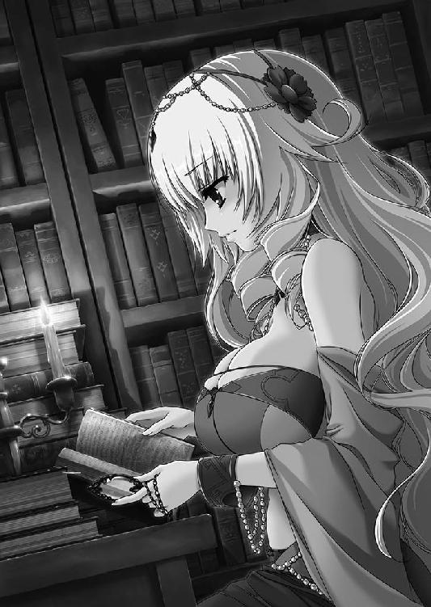
休憩を終えて、ソフィーは作業を再開する。ふと、ある記述に目を留めた。
「──魔弾の王？」
どこかで聞いた言葉だと思い、ソフィーは空中に視線をさまよわせて記憶をさぐる。それほど時間をかけずに、彼女は思い出すことができた。
はるかな昔。このジスタート王国さえまだ地上になかったころの、ある英雄の異名だ。
英雄の名は知られておらず、男であることと、その異名だけがわずかな記録に残されている。狙ったものに必ず命中するという弓を女神から授かった男は、あらゆる敵をその弓で射倒して、ついには王となった。人々は彼を『魔弾の王』と呼んだ。
「そう、たしかそんな話だったはず......」
つぶやいて、ソフィーは書物に視線を戻す。彼女がいま読んでいるのは、古から伝わる魔物や妖精の存在、古い時代の神々、彼らと関わった人間についてまとめたものだ。魔弾の王の名前が出てくるのは、わからないことではない。
魔弾の王について書かれているのはわずか数行のようだったが、とうの昔に滅びた国の文字が混じっていたり、文章にわかりにくいところがあったりして、ソフィーでも理解するのにけっこうな時間がかかってしまった。
──魔弾の王は、女神の意志を地上に顕現する代行者なり。ときにひとならざるものを滅し、ときにひとを滅する者なり。王道を行き、魔道を歩む者なり。英雄となり、魔王となる者なり......。
ソフィーは形のよい眉をひそめる。わかった部分を要約するとこんな感じの記述になったのだが、いまひとつ意味がつかめない。それにしても、不吉な印象を与えずにはおかない内容だった。
──はっきりしないところがあるものね。女神とか、その前後に書いてある三や七という数字とか......。気になるのは『ひとならざるもの』という単語かしら。
ひとならざるもの。トルバランはまさしくそうだった。
魔弾の王についてしばらく考えを巡らせたあと、ソフィーははっとした顔で首を横に振る。いま自分が調べているのは魔物のことだった。
──魔弾の王のことも気になるけど、これは次の機会にしましょう。
脱線してしまうと、時間がいくらあっても足りなくなる。ソフィーはため息をひとつつくと、再び書物に目を通していった。
３ 魔女
その朽ちた神殿は、公宮から馬を走らせて一日ほどの距離にあった。
壁といわず柱といわず亀裂が走り、一部は黒々とした苔に覆われている。装飾は風雨に削られて原形をとどめておらず、何を祀っている神殿なのかわからない。出入り口の扉は失われて、四角い穴がぽっかりと開いていた。
山賊などよりも、むしろ死霊の類が棲みついていそうな建物である。
街道からは大きく外れており、近くに村や町もない。あるいは、かつてはあったものの何らかの理由で滅んだのかもしれなかった。
近づく者さえいなかっただろうその廃神殿を、ひとりの娘が訪れていた。
娘は馬に乗っている。鮮やかな紅の髪と色の異なる双眸を帽子で隠し、紫色のドレスの上に外套を羽織っていた。ドレスの腰のあたりには、丸く束ねた黒い鞭がある。
『雷渦の閃姫』エリザヴェータだった。
「ここで間違いなさそうね」
廃神殿を見上げてつぶやくと、エリザヴェータは馬から下りる。左手で黒い鞭を握りしめて、恐れる様子もなく廃神殿の中に入っていった。建物の中によどんでいた冷気がエリザヴェータの頬を撫でる。
彼女の手に握られた黒鞭が白い光を帯びて、闇の一部を吹き払った。エリザヴェータはふと、自身の右腕に視線を向ける。いまのところ、とくに何も感じない。
エリザヴェータは光を放つ黒鞭をぐるりと回して、周囲の様子を確認する。朽ちた神殿の内部は、やはり外観と同様に崩れかけていた。亀裂だらけの狭い廊下にはいたるところに瓦礫が転がっていて、静かに滅びを待っているかのようだ。
エリザヴェータは無言で廊下を進んでいく。すぐに開けた場所に出た。二、三十人は集まれそうな空間の奥に、小柄な老婆を模したような石像がぽつんと置かれている。
「バーバ＝ヤガー！」
石像を鋭く睨みつけると、エリザヴェータは廃神殿が震えるほどの大声で叫んだ。
「出ていらっしゃい、バーバ＝ヤガー！」
だが、紅の髪の戦姫の叫びに答える者はいない。一喝の残響が大気に溶けて消えると、エリザヴェータは大股で石像に歩み寄った。黒鞭を一閃させる。空気が唸り、硬質の破壊音とともに石像は粉々に砕け散った。
エリザヴェータは黒鞭をかまえ直して、周囲に警戒の視線を走らせる。しかし、彼女の期待とはうらはらに、物音ひとつ起きないまま百を数えるほどの時間が流れた。
エリザヴェータは無言で身をひるがえす。石像の残骸に背を向け、廃神殿を出た。
「狂人の所業ね......」
おそらく何十年も無人だったろう神殿に入り、叫び、石像だけを破壊して出る。エリザヴェータ自身、他人から聞いたら首をかしげると思う。
しかし、他に方法が思い浮かばないのもたしかだ。
ウルスとともに訪れた廃神殿で、バーバ＝ヤガーは石像に化けていた。あるいは、石像を媒介にしてあの場所に現れた。
エリザヴェータとしては、ルヴーシュにあるバーバ＝ヤガーの石像に呼びかけ、破壊して挑発する以外に引きずり出す方法を考えつくことができなかった。誰かに相談するにせよ、ルヴーシュの学者らに詳しく調べさせるにせよ、時間がかかりすぎる。
黒鞭を丸めて腰に戻すと、エリザヴェータは自身の左手を見つめた。
彼女は本来右利きだ。いざというときに備えて左手でも竜具を振るえるよう訓練したことはあったが、やはり右手にくらべて心許なさが残る。魔物との戦いで、思い通りに雷渦を振るうことができるだろうか。
──やるしかないわ。
自分にそう言い聞かせると、エリザヴェータは神殿の前でおとなしく待っていた馬にまたがった。手綱を握り、馬の腹を蹴って走らせる。
バーバ＝ヤガーを祀っていた廃神殿の場所は、他に九ヶ所わかっている。このやり方が意味のないものかどうかは、それらをまわってから考えよう。まずは行動しなければ。
荒涼とした大地に、蹄の音だけが響いていた。
◎
ライトメリッツにいるエレンのもとに一通の手紙が届いたのは、リムたちがウルスと会ってから七日後のことだ。ルヴーシュの公都からライトメリッツの公宮までの距離を考えれば、驚異的な速さといえた。
エレンは執務室で政務を処理していたのだが、受け取った手紙を眺めて眉をひそめた。
「レグニーツァから......？」
手紙に押された刻印は、間違いなくレグニーツァのものだ。不審を覚えたものの、エレンは慎重な手つきで封を切った。すばやく手紙に目を通す。
手紙は、リムアリーシャの筆によるものだった。ルヴーシュの公都から商会を使ってレグニーツァへ送り、そこからライトメリッツに運んだものらしい。
読み進めていくうちに紅の瞳は輝き、読み終えるころにはエレンは感極まったかのように手紙を強く握りしめていた。
「よかった......」
心の底からの言葉をつぶやく。胸の中があたたかい感情で満たされていき、目に涙がにじんだ。もう一度「よかった」と白銀の髪の戦姫はつぶやく。
「やはりティグルだったのか」
リムたちを送り出してから、エレンはそのことを考えないようにしていた。
ティグルの顔を思い浮かべると、エリザヴェータのそばにいたウルスを思い出してしまって気持ちが沈むからだったが、リムとマスハスに任せておけばだいじょうぶだろうとも思っていた。
「しかし、まだ記憶が戻っていないのか......」
エレンは椅子の背もたれに寄りかかって、天井を見上げる。記憶を取り戻す方法など、彼女だって知らない。エレンは視線を巡らせて、壁に立てかけてある長剣を見た。
「アリファール。おまえは知ってるか？」
鞘に収められた銀閃は、静かに風を送ることで主に答えた。エレンは表情をやわらかなものにして苦笑を浮かべる。
「知らないか。いや、私がおかしなことを聞いたな」
そう言うと、エレンは椅子から勢いよく立ちあがった。銀閃をつかみながら、卓上の鈴を鳴らして文官を呼ぶ。
現れた文官に、エレンはいままでにないほどの笑顔で言った。
「私はしばらく出る。その間、ここを頼む」
「何事があったのでございますか」
最近見られなかったエレンの明るい笑顔に気圧されながらも、文官は尋ねた。
「ルヴーシュに向かったリムアリーシャが、ヴォルン伯爵を見つけた。彼はこのライトメリッツの客将だ。私が動いて連れ帰ってくる」
文官の口から感嘆の声が漏れる。彼はティグルにそれほど好意を抱いていたわけではないが、他国の客将を預かっていることの重大さは充分に承知していた。
「ヴォルン伯爵は、ルヴーシュに囚われているということでしょうか？」
「いや。事故で記憶を失い、気に入られてルヴーシュに居候しているというところだな」
実際には居候どころではなく戦姫の相談役なのだが、エレンはわかりやすく説明するためにあえてそう言った。
「兵は必要でしょうか」
確認のためにというような口調で、文官が尋ねる。エレンは首を横に振った。
「戦を仕掛けるわけじゃないからな。私ひとりで充分だ」
「せめて供の者を連れていかれては......」
「おまえの心配はもっともだが、私にはこいつがある」
そう言って、エレンは手に持った長剣の鞘を軽く叩く。
「面倒をかけるが、頼む」
文官は諦めたらしく、うやうやしく一礼した。もっとも、用件を告げられたときにはわかっていたに違いない。
その日のうちにエレンは公宮を発った。
◎
火にかけられた深鍋の中で、魚スープが白い湯気を立ちのぼらせている。鍋にたっぷり水を張り、ぶつ切りにした魚や野菜を入れて煮込んだ料理だ。
今日の具は塩漬けのサケとジャガイモ、蕪である。それから鍋ひとつごとに少量の胡椒と香草が支給されていた。魚スープ以外の食事はライ麦のパンと、陶杯一杯分の火酒だ。
皿に取り分けた魚スープを受け取ったリムは、珍しそうな口調で言った。
「ルヴーシュでは、ジャガイモや蕪を細長く棒状に切るのですね」
「そういえば、ライトメリッツではもっと大雑把に切っていたのう」
同じく皿に取り分けてもらった魚スープに口をつけながら、マスハスが応じる。ジスタートではどこでも食べられている料理だが、それゆえか地方によって作り方が微妙に違うらしかった。
──そういうことか。
深鍋の中の魚スープを見ながら、ウルスは声には出さず納得する。これとは違う魚スープを、自分はどこかで見たことがあると思っていたのだ。記憶を失う前、ルヴーシュではないジスタートのどこかで、自分は魚スープを食べたことがあったのだろう。
まわりをぐるりと見回せば、そこかしこで深鍋が火にかけられ、白い湯気を立ちのぼらせている。兵たちが談笑する声もあちらこちらから聞こえた。
太陽は西の果てに沈みつつあり、徐々に闇を濃くしていく空にはいくつかの星が早くも瞬きはじめている。大気は冷たさを増し、誰もが外套をしっかりと着こんでいた。
ウルスとリム、マスハス、そして百騎のルヴーシュ騎兵が廃神殿に着いたのは数日前のことだ。ウルスたちは廃神殿の近くに幕舎を設営して、いつか訪れるかもしれないエリザヴェータを待ちながら日を送っていた。
ウルスとリムとマスハスが三人で魚スープの鍋を囲むのは、ある意味では当然の成り行きだった。ウルスは一応指揮官であり、リムとマスハスは言ってしまえば客将である。ウルスが相手をしないわけにはいかない相手だ。
ライトメリッツの人間であるリムと、ブリューヌ人であるマスハスは初日こそ兵たちから不審と警戒の視線を向けられていたが、少なくともマスハスに関しては、ルヴーシュ兵たちとかなり打ち解けていた。
三人が食事をしていると、ルヴーシュ兵のひとりがウルスたちのところへ歩いてくる。二十歳前後の若い兵だ。顎のあたりに無精髭が目立ちはじめている。
「ローダント伯爵。今夜もお願いできますか」
「おお。これを食べたら行くから、聞きたい者を集めておいてくれ」
魚スープの中のサケを口に運びながら、老伯爵は悠然と答えた。若い兵士は嬉しそうな笑みを浮かべてマスハスと、それからウルスに会釈し、歩き去っていく。
──俺よりも兵からの人望があるんじゃないか。
老伯爵の横顔を見ながら、若者はそんなことを考えた。嫉妬やひがみではなく、ウルスは純粋に老伯爵に感心している。
マスハスがルヴーシュ兵と打ち解けたのは、夜ごとに兵たちを集めてはさまざまな話を聞かせているからだった。
ウルスも兵たちに混じって聞いたことがあるが、ブリューヌやザクスタンなどの他国の話、うまい食事や酒の話、旅の話、ある吟遊詩人から聞いた古の英雄の物語や、廃墟となっている館に巣くう死霊の話など、この老伯爵の提供する話題は尽きることがない。
仕方のないことだが今回のナウムの命令は、兵たちにとって納得しかねる部分が多い。街道から大きく外れた廃墟同然の神殿へ向かい、そこで戦姫を待てというのである。
なぜ戦姫が廃神殿を次々に巡っているのかについては、教えてもらえなくてもかまわない。指揮官の意図が一兵士に詳しく伝えられることなどはないと、彼らもわかっている。何より兵たちはエリザヴェータを敬い、忠誠を誓っていた。
だが、村や町から遠く離れた寒々しい場所で、日がな一日ぼろ屋のような古い神殿を眺めているだけというのは退屈きわまりない。
そのため、マスハスの語る話は兵たちにとって貴重な楽しみとなっていた。ある意味ではウルスよりも、この老伯爵はルヴーシュ兵たちに馴染んでいる。
「ローダント伯爵。ありがとうございます」
ウルスはマスハスに深く頭を下げた。ウルスには実績があるが、ルヴーシュでの生活が短いこともあって兵たちの信望を勝ち得ているとは言い難い。兵たちの士気を維持できているのは、間違いなくマスハスの話術によるものだった。
「なに、たいしたことではないさ。それに、わしも彼らからいろいろな話を聞かせてもらっておる」
ライ麦のパンを魚スープにつけて食べながら、マスハスは笑って答える。
「さて、今日はどんな話にするかな。猟師に助けられた恩を返すべく、娘に化けて嫁となった子熊の話でもしようか」
「マスハス卿。私もそのお話を聞かせてもらっていいでしょうか」
老伯爵のつぶやきにすばやい反応を見せたのは、リムだった。ウルスは意外だという顔で彼女を見つめる。
「熊に興味があるのか？」
そう尋ねるとリムはまず驚き、次いで寂しげな微笑を浮かべた。しかし、それらの変化はほんの一瞬で、彼女はすぐに愛想のない表情に戻る。
「ええ。少々」
何かまずいことを聞いたのだろうかとウルスは内心で反省した。あとで、ひとの見ていないときに謝っておくべきかもしれない。
公都を発ってからのリムは愛想のない表情をほとんど変えず、口数も少ない。ルヴーシュ兵とは関わろうとせず、ほとんどマスハスのそばにいる。彼女を老伯爵の従者と勘違いしている兵も多いぐらいだ。
しかし、リムはこの部隊をよく見ていた。行軍中、隊列が乱れていることに気づいた彼女は、そのことをすぐウルスに教えてくれたのだ。他にも、兵の配置の入れ替えや幕舎を設営する場所の選択など、リムは控えめな態度でさまざまな助言をしてくれている。
この中で唯一の女性であり、そのために苦労していることもあるはずだが、弱音や不満を一切口にしない。
リムは、ウルスに配慮しているのだった。ルヴーシュ兵と打ち解けるのはマスハスに任せ、彼女自身は若者を支える役目に徹している。目立たないように。
もともとウルスは彼女に好意的だったが、ここ数日で彼女の存在を本当にありがたいと思っていた。
──しかし、ご主人はいまどこにいるんだろうか......。
パンをかじりながら、ウルスはふと遠くを見つめる。いくつも並ぶ幕舎の向こうには、朽ちた神殿がそびえていた。
バーバ＝ヤガーは自分にも興味を持っていたようだが、現在の狙いはエリザヴェータだろうとウルスは考えている。もしもあの魔物が自分を狙っているならば、ダーマードと短い旅をしているときに、いくらでも機会はあったはずだからだ。
ナウムから兵を預からずに、馬だけを借りて自分も廃神殿をまわるべきだったかとも思うが、土地勘のない自分がそんなことをやってもいたずらに迷うだけだ。
焦るなと自分に言い聞かせる。いまは、ここにいるのが最善のはずだ。
──どうか、無事でいてください。
ウルスが内心でそう願う間にも、空は静かに暗さを増していく。
この時点で、ウルスをはじめ誰もが気づいていなかったことがある。
彼らがいる場所と、地図に示された廃神殿の場所がずれていることにだ。
もっとも、これはウルスたちの過失ではない。
ナウムとラザールが、あることを見落としていたのだ。指示した場所の近くに、同じくバーバ＝ヤガーを祀っていた廃神殿があるかどうか、二人とも考えなかった。
十ヶ所の廃神殿は、エリザヴェータに頼まれたラザールがおよそ一日かけて調べさせたものだ。そして、臣下を操られることを恐れ、一日でも早く行動したがっていた紅の髪の戦姫は、十ヶ所わかった時点でひとまずよしとした。
他の廃神殿の場所についても、ラザールはもちろん引き続き調べさせてはいた。
だが、エリザヴェータが姿を消したことと、それに続くウルスの帰還に気をとられてしまい、失念していたのである。
それでも廃神殿の場所がもう少しわかりやすければ、ウルスたちも間違えることはなかっただろう。しかし、廃神殿はそのことごとくが街道から大きく外れていて、地図を見てもわかりにくい。目印になるものがあまりにも少ないのだ。
加えて、ナウムの指示は次のようなものだった。
「各部隊はそれぞれ廃神殿に赴き、戦姫さまが姿を見せるまで待機せよ。そして戦姫さまを発見したら、ただちに公宮に連れ戻すべし」
ウルスたちがいるところは、目的の廃神殿から五ベルスタ（約五キロ）ほど離れたところだった。
◎
焚き火が燃えている。
そのそばには、ジャガイモを刺した枝が突き立っていた。ジャガイモの数は三つ。
「私は茹でたやつの方が好きなのだがな。鍋までは用意できなかったから仕方がない。それに、こうしてじかに焼いたのも、なかなかおもしろいんだ」
隣に座っている少女が、ジャガイモを見つめながら楽しそうに言った。エリザヴェータはわずかに首を動かして、隣にいる少女の横顔を見る。
年齢は自分と同じ十歳ぐらい。長い白銀の髪と、活力を帯びて輝く紅の瞳が印象的な少女だった。青を基調とした服から伸びた手足は自分と同じように細いのに、子供特有のたくましさとしなやかさがある。
ちなみに、ジャガイモを持ってきたのはこの少女だ。なんでも料理長からこっそりくすねてきたということだった。エリザヴェータは不思議そうに尋ねる。
「おもしろいの？ ジャガイモが？」
「よく焼けているところと、そうでないところができるらしい。いろいろな味を楽しめるということだな」
白銀の髪の少女はそう答えて笑い、エリザヴェータもつられて微笑んだ。
エリザヴェータがこの少女と出会ったのは、昨日のことだ。
いつものように村の子供たちにいじめられていたところを、助けられたのである。どこかの家の裏で、あまりひとの来ないところだった。真っ白な雪が地面を覆い、家々の屋根に積もり、村のまわりの木々にかぶさっていた。
「おまえたち！ たったひとりに寄ってたかって恥ずかしくないのか！」
そのとき自分をいじめていた者たちは四人。その少女より身体が大きい子供もいた。しかし、白銀の髪の少女は怯える様子もなく、腕組みをして傲然と子供たちを睨みつける。子供たちはまず顔をしかめ、次いで鼻で笑った。
「関係ないだろ。よそ者が首をつっこんでくるなよ」
すると、白銀の髪の少女はつかつかとこちらへ歩いてくる。もっとも身体の大きな子供を見上げて、その顔を殴りつけた。
その場にいた誰もが唖然とした。エリザヴェータもだ。白銀の髪の少女はといえば、意地の悪い笑みを浮かべて子供たちを睥睨する。
「これでもまだ無関係だというか？」
殴られた子供が顔を真っ赤にして、少女に襲いかかった。他の子供たちは、少女を逃がさないように取り囲む。
エリザヴェータは地面にうずくまるような姿勢のまま、その光景を見守ることしかできなかった。殴られ、蹴られて身体中が痛いということもあったが、割って入るのはとても怖くてできなかったのだ。
その喧嘩は一方的な展開を見せた。少女が、村の子供たちをさんざんに打ちのめすという形で。
村の子供たちが弱かったのではない。小さなころから畑仕事を手伝っている彼らは、腕力も体力も充分にあった。喧嘩だって子供同士でよくやっている。
だが、少女はそれ以上に戦い慣れていた。身体の動かしかたが違う。相手の動きだけでなく、まわりもよく見ている。
四人の子供たちの中でもっとも弱そうな者に狙いを定めると、すばやく襲いかかって急所を蹴り上げた。股間をおさえてうずくまったその子供の脇をすり抜けて包囲を抜け、ひとりずつ順番に仕留めていく。頭か足か急所しか攻撃しないという徹底ぶりだった。
「覚えてろよっ......！」
涙をこらえながら悪態をついて、子供たちがその場から立ち去ると、あとには少女とエリザヴェータだけが残った。
そのころには、エリザヴェータは目を丸くして少女に見入っていた。
信じられない光景だった。小さなころから彼らにいじめられていたエリザヴェータは、村の子供たちは強いのだと当然のように信じきっていた。同じ子供で、しかも女の子で、彼らに勝てる者がいるなどとは、考えたこともなかったのだ。
「立てるか？」
少女は笑顔でエリザヴェータに手を差しだす。エリザヴェータはびくりと肩を震わせたものの、おそるおそる少女の手をとった。その手は、温かかった。
「ひどい顔だな、おまえ。腫れているし、冷やした方がいい」
少女が呆れた顔で言い、エリザヴェータは足下の雪をすくって顔に押しあてた。熱を帯びていた顔に、雪の感触は気持ちよかった。
少女はエレオノーラと名のった。
「エレンでいいぞ」
笑顔でそう言う少女に、エリザヴェータももごもごと口を動かして名前を告げる。
ちなみに、このときエリザヴェータは右目に眼帯をしていた。異彩虹瞳を隠すためだ。左右で色の異なる目のせいでいじめられていると考えてそうしたのだったが、もともと彼女が異彩虹瞳であることを知っている村人たちの前では、意味がなかった。
「私は傭兵団の一員なんだ。とはいっても、下働きのようなものだけどな」
台詞の前半については、すでに予想していた。現在、この小さな寒村において見ない顔がいるとすれば、昨日村を訪れた『白銀の疾風』と名のる傭兵団の者しかありえない。もっとも、こんな子供がいるとは思いもしなかったが。
「あなたみたいな子供でも、傭兵になれるの？」
興味から、エリザヴェータはそう聞いた。傭兵団『白銀の疾風』は四十人ほどで構成されている。戦士としての男たちが三十人余、それ以外に料理人や鍛冶屋らしき者、若い女たちが数人といったところだ。エレンのような子供は他に見かけなかった。
「わからん」
エリザヴェータの疑問に、あっさりとエレンは答える。
「団長の話では、赤ん坊の私を戦場で拾ったそうだ。どうして育てようと思ったのかはわからないが、それからずうっと傭兵団にいる。団長たちが、私ぐらいの年齢の子供を雇ったのは見たことがないな」
エリザヴェータは目を丸くしてエレンの話に聞き入っていた。未知の世界の話だ。そして、なんとなくエレンが喧嘩に強いのも理解した。あんな荒くれ者たちに毎日囲まれていれば、否応なしにたくましくなるのだろう。
「ところで、おまえはどうしていじめられていたんだ？」
エレンに聞かれて、エリザヴェータは再び口ごもった。
異彩虹瞳のことは言いたくない。だから右目が不自由なのだと嘘をつき、それから親のわからない捨て子であることをあわせて告げた。
エレンはエリザヴェータの言葉を疑わず、大きくうなずいた。
「なるほど。だが、黙っていじめられる理由にはならんぞ。やり返したらどうだ」
エリザヴェータは顔を真っ青にして、激しく首を横に振った。やはりよそ者だと心の中で考える。そんなことをすれば、自分はこの村にいられなくなるかもしれないのに。
「叩きのめせとまでは言わん。だが、やられっぱなしでいては相手を増長させるだけだ。こちらにも拳があり、蹴りがあり、噛みつくための歯があることを教えてやれ」
エリザヴェータは持っていた雪を地面に落として、自分の頬に触れる。まだ痛みは消えていない。頬だけではない、腕や脇腹、背中や太腿も。
さきほど、エレンが村の子供たちを叩きのめしていた姿が脳裏をよぎった。
「私にできるの......？」
あの光景は、エリザヴェータが長らく抱いていた思いこみを粉々に打ち砕いている。
村の子供たちがかなわないのは、村の大人たちだけだと思っていた。
とくに、率先して自分をいじめていた身体の大きな子。彼が、よりにもよって女の子に負けるなんて想像もしなかった。
「できるとも」
エレンは笑顔でうなずいた。
「私たちは、あと三、四日この村にいる予定だ。時間ができたら来い。私の知るかぎりの戦いかたを教えてやる」
その日から四日間、傭兵団『白銀の疾風』は村に滞在した。エレンの話によれば、彼らはこの近くにいる野盗を討伐するために、領主に雇われたのだという。
「ここの領主は、近くの貴族と派手にやりあって負けたそうでな。一時的に兵が足りなくなったので、私たちのような傭兵団を雇ったらしい」
傭兵など野盗も同然というのが、多くの人々の認識だ。あながち偏見というわけでもない。食糧や燃料を得るために、本来守るべき村を襲ったり、小さな町を武力で脅したりする傭兵団はたしかに存在したのだから。
それを踏まえて考えれば『白銀の疾風』は比較的まっとうな傭兵団だった。エレンの一件を除けば、傭兵たちが村の者に手を出すことはなかったし、女を誘うにしてもちゃんと交渉し、代金も支払った。食糧や燃料についてもだ。
代金をもらえるとはいえ、四十人もの人間に寝床と食事を提供する村の苦労はそうとうなものだったが、近隣の村や町から食糧を買い求めてどうにか乗り切った。
ちなみにエレンの喧嘩だが、村の子供たちが訴えなかったのでうやむやとなった。もっともエレン自身は、傭兵団の団長から拳骨をくらったそうだが。
ともかく四日間、エリザヴェータはエレンに喧嘩の仕方を教わった。たった四日、それも仕事の合間のわずかな時間だ。捨て子として扱われ、養われている身のエリザヴェータには水汲みや洗濯、布の繕いなど多くの仕事が押しつけられていた。
そこでエレンは基本的な身体の動かしかたと、まわりを見ることを徹底して教えた。
「いいか。私がいなくなったあとでも、空いた時間をつくって毎日やれ。この四日間は、おまえがこれから毎日続けることを、覚えるためのものだ」
「毎日続ければ、強くなれる？」
「十日やそこらじゃ駄目だな。一ヶ月か二ヶ月か......やれるか？」
エリザヴェータはうなずいた。白銀の髪の少女の教えかたは厳しかったが、エリザヴェータは疲れた身体に鞭打って、必死についていった。現状を打開したいという気持ちはもちろんあったが、それ以上に、あの日のエレンの姿に少しでも近づきたかったのだ。
「おまえの場合、まず負けないことを考えた方がいいかもしれないな。勝つ気持ちは大切だし、捨ててはいけないものだと私も教わっているが......」
「うん。──私は負けない」
四日は、あっという間に過ぎた。
その日の朝、別れの挨拶をするためにエリザヴェータがエレンのもとへ行くと、そこには誰もいなかった。『白銀の疾風』はすでに村を去っていたのだ。
別れの挨拶が言えなかったことに、エリザヴェータは肩を落とした。それから、右目を覆う眼帯にそっと触れる。
──このことも言えなかった......。
自分が異彩虹瞳であることを、エリザヴェータはエレンに隠したままだった。何度か勇気を振り絞って言おうとしたものの、十歳の少女が決意を固めるには、四日は短すぎた。
その日のうちに、エリザヴェータに対するいじめは再開された。
以前と同じように彼女は一方的に殴られ、蹴られて雪の中に倒れたのだが、絶望はしなかった。エレンも言っていたではないか。十日やそこらでは駄目だと。
──一ヶ月よ。一ヶ月先を見ていなさい。
エレンと出会う前の、すべてを諦めている少女の姿はもうなかった。親のわからぬ捨て子であることで蔑まれ、異彩虹瞳を嫌悪されても、それほど気にはならなくなっていた。
子供たちは、決してかなわない相手ではないのだ。殴られれば痛いが、むやみに恐れる必要はない。
心に余裕が生まれたからか、視野も広がっていた。
村の大人たちはエリザヴェータへのいじめを黙認し、ときには加担することさえあったが、いじめがあまりにもひどくなると必ず止めに入っていた。そのことに何らかの理由があるのではと、エリザヴェータは考えるようになった。
理由がわかったのは三ヶ月後。ひとりの男が、エリザヴェータを訪ねてきたのだ。
そのころのエリザヴェータは、子供たちに容赦なく反撃するようになっていた。いじめられて、ただやり返すのではない。必要とあらば逃げ、ときに相手の仕事を台無しにし、平然と嘘をついて仲違いを誘うまでに成長しており、村の中でも問題視されていた。
エリザヴェータを訪ねてきた男は、彼女にこう告げた。
「あなたのお父さまが、お呼びです」
自分がとある貴族の落胤であることを、エリザヴェータはこのとき知った。村の大人たちが自分へのいじめを加減していたのは、そのことを知っていたからだった。
そして、貴族の落胤である自分が、なぜ親のいない捨て子として扱われ、いじめられていたのかも知った。エリザヴェータの父であるロジオン＝アブトという男は、娘が異彩虹瞳を持って生まれたがゆえに、領内の村をてきとうに選んで押しつけたのだ。
ところが、ロジオンは跡継ぎの子を病で失った。彼は仕方なく、自分の娘であるエリザヴェータを引き取ることにしたのである。
貴族の娘としての、エリザヴェータの新たな人生がはじまった。
寒村で別れたあと、エリザヴェータがエレンと再会したのは五年後のこととなる。エリザヴェータが十五歳。エレンが十四歳のときだ。二人は、ともに戦姫として出会った。
エリザヴェータはエレンのことをすぐに思い出した。だが白銀の髪の戦姫は、エリザヴェータがあのときの子供だと気づいていないようだった。
異彩虹瞳を隠していたのだから無理もないと、エリザヴェータは思った。それに、エレオノーラもエリザヴェータも女の名前として珍しいものではない。
ライトメリッツとルヴーシュは離れており、交流の機会は少ない。戦姫としての務めを果たしながら、いつかエレンに話そうと思っているうちに、二人の間には修復し得ない亀裂が発生したのだった。
◎
目の前で、火がぼんやりとゆらめいている。エリザヴェータははっとして顔を上げた。
いつのまにか眠ってしまっていたらしい。目の前には焚き火があり、そのそばにはジャガイモを刺した枝が突き立っている。数はひとつ。
このジャガイモは、一刻ばかり前に立ち寄った村で買ったものだった。
「ずいぶん懐かしい夢を見たわね......」
疲労が眠りを誘い、焚き火とジャガイモが過去の記憶を呼び起こしたのだろうか。
ふと、焦げたような匂いがエリザヴェータの鼻をつく。それに気づいた紅の髪の戦姫は慌ててジャガイモを枝ごとつかんだ。火傷しそうな熱さにおもわず取り落としてしまい、ジャガイモが地面に転がる。
黒く焦げた部分が、まるでエリザヴェータを責めるかのように上を向いていた。
エリザヴェータはため息をつくと、外套越しにジャガイモを拾いあげる。土を払い、焦げた部分を外套の裾でそぎ落として、ためらいもせずかじりついた。
街道から大きく外れた、人気のない野道である。乾いた枯れ草が地面をほとんど覆っているが、ところどころに土が露出していた。遠くには森が見えるが、このあたりには一本の木も生えていない。空は灰色に染まり、太陽は雲の向こうに隠れている。
公宮を発ってから十二日が過ぎていた。エリザヴェータは廃神殿を九ヶ所まで訪れ、バーバ＝ヤガーの石像をすべて破壊している。
しかし、魔物は一向に姿を見せなかった。
道中、ナウムらの派遣したルヴーシュ兵の部隊に何度か遭遇したものの、説得したり、高圧的に命令して下がらせたり、ときには従うふりをして逃げだすなどして彼女は旅を続けている。彼らを同行させることだけは、絶対にしなかった。
十五人の騎士たちを失った一件が、彼女に与えた衝撃は大きい。バーバ＝ヤガーを打ち倒すまで、エリザヴェータはひとりで行動するつもりだった。
さきほど村に立ち寄ったときも、必要な食糧や燃料を買ってすぐに村を離れた。今日まで、彼女は町や村で空き家を借りることもせず、野外で夜を明かしている。彼らがバーバ＝ヤガーに操られるかもしれないと思えば、エリザヴェータは耐えることができた。
──これから向かう廃神殿で最後......。
そこにもバーバ＝ヤガーが現れなかったら、公宮に戻るしかない。新たな廃神殿へ向かうにも場所がわからないからだ。
なぜ、あの魔物は姿を見せないのか。このやり方は意味のないものだったのだろうか。
「考えるのは、最後の廃神殿へ行ってからよ」
ジャガイモを食べ終えると、エリザヴェータは土をかけて焚き火を消した。色の異なる双眸には、旅の疲れと焦りがにじんでいる。絶え間なく続く緊張と、野外で寝起きする日々が彼女を心身ともに消耗させていた。
休ませていた馬に鞍を乗せ、エリザヴェータは馬上のひととなる。
十ヶ所めの廃神殿へ向かって、雷渦の閃姫は馬を走らせた。
その廃神殿のまわりには、荒涼とした大地が広がっていた。朽ちた建物の他に視界に映るのは、灰色の砂礫とわずかな雪泥ばかり。鉛色の空に太陽の姿はないが、夕暮れが迫っているはずだった。
馬から下りたエリザヴェータは、忌々しげな表情で廃神殿を見上げる。その外観はこれまで見てきたものとほとんど変わらない。壁も柱も細かく欠けて、いたるところに亀裂が走っている。漆喰は剥がれ落ち、わずかな残骸が壁面にへばりついていた。
エリザヴェータは左手にヴァリツァイフを握りしめると、廃神殿の前まで歩いていく。やはり扉はなく、正面にぽっかりと開いた出入り口の端には、蝶番だったのだろうものが引っかかって風に揺れていた。
光の届かない深淵に向かって、紅の髪の戦姫は叫ぶ。
「バーバ＝ヤガー！ もし聞こえたなら出てきなさい！」
怒声の残響も消えないうちに、暗闇の奥からなまあたたかい風が流れてきた。次いで、しわがれた老婆の声がエリザヴェータの耳に届く。
「──あまり大声を出さんでおくれ。崩れたらどうするのじゃ」
エリザヴェータは目を瞠り、その場からすばやく飛び退った。金色と碧色の目が怒気と戦意に満ち、竜具を握りしめる手に力がこもる。黒い鞭の柄から先が白い光を帯びた。
箒を引きずって、暗がりの中から小柄な老婆が現れる。身体よりも大きな黒いローブをまとい、同じ色のフードを目深にかぶっていた。長い鷲鼻だけがフードから覗いており、その全身からは息を呑むほどの禍々しい瘴気が放たれている。
「わしを崇め奉る像を、よくまあ九つも壊してくれたの。『鞭』よ、そなたには少々仕置きが必要なよう──」
魔物の台詞は、横薙ぎの暴風に吹き飛ばされて最後まで発せられなかった。エリザヴェータが踏みこみと同時に竜具を振るったのだ。雷光をまとった黒鞭が、虚空に鋭い弧を描いてバーバ＝ヤガーに襲いかかる。
老婆の魔物はそれを避けようともしない。ヴァリツァイフは黒いローブを引き裂きながら左から右へと通過する。その瞬間、ローブは一枚の布となって大きく広がり、エリザヴェータの視界を遮った。
危険を感じた紅の髪の戦姫は、鞭を引き戻しながら後退する。すると、背中に何かがぶつかった。衝撃と戦慄に包まれながらも、エリザヴェータは黒鞭を背後に叩きつけて地面を転がる。すばやく身体を起こし、自分がぶつかったものを見た。
粗末な服に身を包んだ、四人の子供が立っている。エリザヴェータは彼らの顔に見覚えがあった。小さかったころ、自分をいじめていた子供たちだ。
──どういうこと......？
驚愕の表情で彼らを見つめるエリザヴェータに、子供たちはにやにやと薄気味悪い笑みを浮かべて口を開いた。
「どうしておまえみたいな気持ち悪いやつが、この村にいるんだ」
「目の色が左右で違うなんて、怪物の子供じゃないのか」
「怪物め。こらしめてやる！」
紅の髪の戦姫の顔が怒りに歪む。昔、毎日のように聞かされていた台詞だ。
──いやらしい真似を......。
子供たちが地面を蹴って、エリザヴェータに襲いかかってきた。
彼らは魔物のつくりだした幻に違いない。だが、そうとわかっていても、黒鞭を振るうには相応の気構えが必要だった。
「消え去りなさい！」
気合いの叫びとともに、竜具を一閃させる。子供たちは嗜虐的な笑みを浮かべたまま、腰のあたりから真っ二つに両断された。しかし、切断された胴からは一滴の血も流れ出ない。雷渦を握りしめるエリザヴェータの左手にも、何の衝撃も伝わってこなかった。
彼らの身体は急速に薄れていき、大気に溶けるように消え去る。
「──おい」
後ろから、声。振り返ったエリザヴェータの目に映ったのは、白銀の髪と紅玉の瞳を持つ十歳前後の少女だった。
──エレン......!?
それはまぎれもなく、小さいころに出会ったエレンだ。左手を後ろに隠し、あのときの明るい笑みを浮かべてエレンはエリザヴェータを見つめている。
「どうしておまえみたいな気持ち悪いやつが、この村にいるんだ」
エレンの口から、さきほど村の子供が言ったものとまったく同じ台詞が飛びだした。言葉を失って立ち尽くすエリザヴェータに、エレンは子供たちが口にした罵倒を一言一句そのままに繰り返す。笑顔を微塵も変えることなく。
「おまえも......幻でしょう！」
怒りも露わにエリザヴェータは吐き捨てた。雷渦を振りあげて少女に叩きつける。しかし、その動きは鈍く、どこかぎくしゃくとしていた。
少女はかろやかに後ろへ跳んで、力任せの乱暴な一撃をかわす。雷光をまとった黒い旋風は地面をえぐり、砂礫混じりの土砂が吹き飛んだ。
「すさまじい威力だな。よし、褒美にこれをやろう」
肩で息をしているエリザヴェータに笑いかけて、エレンは後ろ手に隠し持っていたものを無造作に前へと放り投げる。
地面に転がったそれは、血と泥にまみれた生首だった。紅の髪の戦姫の顔が青ざめる。
その生首は、彼女の父親だったからだ。ロジオン＝アブト。二年前にいくつもの罪を犯して、エレンに討たれた男である。
エリザヴェータが目を離せずにいると、生首の口が動いて呻くような声を発した。
「なぜ、おまえは私を助けなかった」
当時のエリザヴェータは、父を助けようとした。しかし、ロジオンは娘の言葉に耳を貸さずに逃亡したのだった。生首はさらに言葉を紡ぐ。
「なぜ、おまえは私を殺した戦姫に復讐しない」
ロジオンが討たれたあと、エリザヴェータはエレンに決闘を挑んだ。だが、エリザヴェータは彼女にまったくかなわず、敗れ去った。
生首は淡々と恨み言を繰り返す。その言葉は無形の毒となってエリザヴェータの耳から入りこみ、彼女の心に何度も斬りつけた。
「──黙りなさい！」
叫びながら、エリザヴェータは目を固く閉じて顔をそむける。黒鞭が大気に小さな弧を描いて生首を粉砕した。竜具を振るうために、彼女は懸命に気力を振り絞らなければならなかった。
乱れた呼吸を整えようともせず、エリザヴェータは顔を上げる。いつのまにか、まわりに無数の死体が転がっていた。どの死体も身体中に無数の腫れものがあり、皮膚が異様に黒ずんでいる。爪のまわりには血の跡があり、苦悶の表情をしていないものはなかった。
「なぜ、助けてくれなかった」
死体のひとつがエリザヴェータを責めた。すると、他の死体も次々に言葉を発して紅の髪の戦姫を非難する。彼らは、疫病に罹って死んだ者たちだ。エリザヴェータが助けられなかった者たちだった。
──耳を貸しては駄目。
エリザヴェータは死体から視線を引きはがすと、前を見る。
彼女は大きく目を見開いた。そこには、エレンが立っていた。小さかったころの彼女ではなく、現在のエレンが。青を基調とした服をまとい、腰に長剣を吊して白銀の髪の戦姫はエリザヴェータを見つめている。
「楽しんでもらえたかな。『鞭』よ」
しわがれた老婆の声が響いて、エレンの顔が歪んだ。左目が顔の半分を占めるほどに肥大化したかと思うと、眼球がこぼれ落ちる。おぞましい光景にエリザヴェータは悲鳴を漏らしかけた。
虚ろな眼窩から、粘りのある黒い液体のようなものが流れだす。黒い液体はエレンの顔を覆うと、陰湿な笑みを浮かべる老婆の顔を形作っていった。
エリザヴェータはおもわず雷渦を振りあげたものの、寸前で思いとどまる。その姿勢で動きを止めた。
──落ち着きなさい。これも幻よ。
老婆の顔とエレンの胴体を持つ醜悪な何かを見据えながら、エリザヴェータは自分に言い聞かせる。これを打ち砕いても、いままでの幻のように溶けて消えるか、別の何かに変わるだけだろう。
「ヴァリツァイフ......」
呼吸を整えて、エリザヴェータは竜具に呼びかける。主の呼びかけに応え、黒鞭の柄の先で、白い雷光が何度も点滅を繰り返した。
雷渦が点滅するたびに、砂ほどに小さな光の粒子が何十、何百も大気に放たれる。それらは、雷撃だった。触れても痒みを覚える程度の微弱な雷撃だが、エリザヴェータの目的は攻撃ではない。
雷撃の群れは静かに虚空を進んでいき、そのひとつが魔物の気配を捉える。正面に立っている偽物のエレンではなく、エリザヴェータの右側。十歩ほど先だ。そこには何も見あたらなかったが、エリザヴェータは迷わずその方向に雷渦を振りおろした。
「──闇夜斬り払う刹那の牙！」
雷鳴を思わせる轟音とともに、黒鞭の先端から強烈な光がほとばしる。まさしく稲妻の速さで光は虚空を走り、潜んでいたものを貫いた。たしかな手応えが竜具を通してエリザヴェータの左手に伝わる。
次の瞬間、偽物のエレンも、地面に転がっていた死体も大気に溶けて消え去った。
そして、エリザヴェータが竜技を繰りだした場所に、黒いローブをまとった老婆が現れる。鷲鼻を覗かせ、粗末な箒を引きずって。バーバ＝ヤガーだ。
「どこまで踊ってくれるかと思うたが、まあこんなところか」
フードの奥で、老婆の魔物はくぐもった笑いをもらした。エリザヴェータは冷笑を浮かべてバーバ＝ヤガーを睨みつける。
「ずいぶんと余裕ですわね。まだ何か手があるのかしら」
「そうさな。たとえば、こんな手がある」
余裕に満ちた口調で魔物は応じると、箒を両手でかまえて呪文らしきものを唱えた。
直後、老婆の持つ箒の先端に拳大の炎が出現する。エリザヴェータは目を瞠った。
炎はゆらめきながら瞬く間にふくれあがり、大人の頭ほどの大きさを持つ火球となる。バーバ＝ヤガーが箒を一振りすると、火球は炎の尾を引いて猛然と空中を駆け、エリザヴェータに襲いかかった。
──これも幻覚なの!?
紅の髪の戦姫は歯を食いしばり、雷渦で火球を薙ぎ払う。
しかし、慣れない左手で振るったためか雷渦の動きがわずかにずれた。エリザヴェータが考えていたよりも近い距離で、黒鞭と火球が激突する。
轟音と爆風、熱波を大気にまき散らして、火球は粉々に吹き飛んだ。重い衝撃が竜具を通して手に残り、飛び散った火の粉がエリザヴェータの肌に小さな火傷をつくる。
──違う。幻覚じゃない......。
「よう防いだ。では、これはどうかな？」
バーバ＝ヤガーは楽しげに笑うと箒を手の中で回転させ、その先端をエリザヴェータに向けた。箒が白い光を帯びる。
「──ヴァリツァイフ！」
危険を察知してエリザヴェータが叫ぶのと、箒の先端から白く輝く雷光がほとばしったのはほとんど同時だった。戦姫の持つ黒い鞭からも金色の雷光が放たれ、二つの稲妻は空間を眩く切り裂きながら空中で激突する。
二色の光が絡みあって乱舞し、エリザヴェータの目を灼いた。轟く雷鳴が、異彩虹瞳の戦姫の肌を震えさせる。飛散する雷撃の粒子に肌を焼かれながらも、エリザヴェータは両足に力をこめて懸命にその場に踏みとどまった。
大気が勢いよく弾け、衝撃波がエリザヴェータを襲う。二つの雷撃がおたがいを粉砕できないまま力を失い、消滅したのだ。視界は一瞬白い光に包まれたものの、徐々にもとの景色を取り戻す。
──どう戦えばいいの？
エリザヴェータは戦慄を禁じ得なかった。
人間と戦ったことはある。獣とも。竜とも。トルバランのような魔物とさえも。
だが、トルバランはエリザヴェータが倒したわけではない。倒したのはサーシャだ。もしもひとりで戦っていたら、エリザヴェータは間違いなく敗れていただろう。
そして、バーバ＝ヤガーはトルバランとはまるで違う。人間を惑わし、幻を見せ、炎や雷撃を自在に操る。古い物語に出てくるような恐るべき魔女だ。
何をしかけてくるのか、まるで予測がつかない。
加えて、やはり左手では狙いが正確に定まらない。ほんのわずかだが鞭は遅れ、その軌道もずれている。相手が並みの人間であれば、考慮せずともすむ程度のずれだ。だが、バーバ＝ヤガーのような怪物が相手では、確実に命取りとなる。
立ち尽くすエリザヴェータを見て、バーバ＝ヤガーは目深にかぶったフードの奥でにたりと笑った。
「どうしたのかえ？ 来なければ、またわしからやらせてもらうぞ」
老婆の魔物が箒を右から左へと振るうと、突風が吹き荒れた。小石や砂塵を巻きこみながら、風はエリザヴェータを襲う。紅の髪の戦姫はおもわず左手で顔をかばった。
──こんな小細工で！
風に煽られてよろめきながらも、エリザヴェータは竜具を振りあげる。
だが、彼女の視界に魔物の姿はない。ほんの一瞬目を離した隙に、消えていた。
「上じゃ」
しわがれた笑い声が、エリザヴェータの耳をくすぐる。雷渦の閃姫は反射的に竜具を振るった。彼女の頭上に浮かんでいた黒い影を、ヴァリツァイフが貫く。
しかし手応えはなく、紅の髪の戦姫の目の前で、黒い影は霧が溶けるように消えた。同時に、エリザヴェータは何かに足を払われる。体勢を崩した。
おもわず膝をついたところへ、箒の柄が横殴りに襲いかかってくる。避ける余裕などなく、頬に熱を感じたときにはエリザヴェータは吹き飛ばされ、地面に倒れた。
再びバーバ＝ヤガーの箒の先端に火球が出現し、エリザヴェータに向かって放たれる。紅の髪の戦姫は地面を転がって避けようとしたが、突然右腕が鉛のように重くなり、激痛が走った。やむを得ず、その場に倒れたまま雷渦を振るう。
直撃はまぬがれたものの、火球は至近距離で破裂する。爆風がエリザヴェータを吹き飛ばした。熱波が彼女の身体を焼き、衝撃がドレスを引き裂く。
エリザヴェータは、仰向けに倒れていた。
視界が揺れる。身体中に激痛が走っている。起き上がろうとしたが、力が入らない。声も出ない。右腕にいたっては、指一本動かせないほどに重い。
負けたくないと思った。だが、どうすればいいのか何も思い浮かばなかった。
「そろそろとどめを刺すとするかの」
バーバ＝ヤガーが、ローブの裾を引きずってこちらへ歩いてくる。エリザヴェータは竜具を握りしめたが、それ以外は悔しげに魔物を睨みつけることしかできなかった。
老婆の魔物が箒を振りあげる。ところが、バーバ＝ヤガーはすぐにはそれを振りおろさなかった。
「そういえば、聞きたいことがあったんじゃった。──『弓』はどこにいる？」
フードの奥で、魔物の目が怪しげな白い光を帯びる。エリザヴェータは知らないことだったが、今日までバーバ＝ヤガーが彼女の前に姿を見せなかった理由はこれだった。
この魔物はエリザヴェータの動きを見ながら、ウルスをさがしていたのだ。しかし、ついにウルスを見つけることはできず、エリザヴェータと戦うことにしたのだった。
「......たとえ知っていても、言うものですか」
エリザヴェータは吐き捨てる。死の予感を前にしても、矜持だけは揺らがなかった。
「ならば──」
バーバ＝ヤガーが答えかけたとき、何かが風を切る音がエリザヴェータの耳に届いた。魔物の箒に一本の矢が当たり、弾かれて地面に落ちる。
紅の髪の戦姫は驚いた顔で、目の前に落ちたその矢を見つめた。彼女の耳に、今度は馬蹄の轟きが聞こえる。それはまっすぐこちらへ近づいてきた。
エリザヴェータの異彩虹瞳に、涙がにじむ。
その矢は、三百アルシンも離れたところから放たれたものだった。
その矢を射たのは、くすんだ赤い髪の若者だった。
若者の名は、ウルスといった。
４ 冬の終わり
ウルスが間違いに気づいたのは、半刻ほど前のことだった。偵察のために放った騎兵たちが、別の廃神殿を発見したと報告してきたのだ。さらに、近くの村へ情報収集に行っていた部隊も、若い娘の旅人を見たという話を聞いてきた。
それを聞いたウルスはただちに幕舎を撤収させ、兵を率いてこの場へ駆けつけたのだった。そして、エリザヴェータと魔物の姿を見つけるやいなや、とっさに矢を射放って魔物の注意を自分へと引きつけた。
まさしく間一髪だった。
「おまえたちはそこで待機していろ！」
後ろの兵たちに叫びながら、ウルスは馬を駆けさせる。鞍に提げている矢筒から新たな矢を取りだして、つがえた。弓弦を引き絞るまでに、彼我の距離は二百アルシン近くにまで縮まっている。
一方、バーバ＝ヤガーは不思議そうな顔をウルスに向けていた。
「あれはたしかに『弓』。だが、やはり気配を感じぬ。隠しているふうでもない......」
ウルスが第二矢を放つ。正確に頭部を狙ってきたその矢を、バーバ＝ヤガーは箒の一振りで叩き落とした。
「ただの矢じゃな......。何の力も感じぬ」
目深にかぶったフードの奥で、魔物の両眼が疑惑の色を帯びる。
「ひとつ、さぐってみるか」
つぶやくと、バーバ＝ヤガーは体勢をまったく変えず、まるで地面を滑るかのように後ろへと下がった。ローブの裾に半ばまで隠れた左手を持ちあげ、倒れたままのエリザヴェータを指さす。
突然、エリザヴェータの右腕がまっすぐ上へと突きあげられた。自分の意志によらず右腕が動いたことに、他ならぬ紅の髪の戦姫が目を瞠る。
そのまま右腕に引きずられるようにして、エリザヴェータは立ちあがった。
「ご主人！」
ウルスが歓喜の声をあげてエリザヴェータのそばへと急ぐ。若者の目には、雷渦の閃姫は自力で立ちあがったように見えたのだ。
それが思い違いであったことを、ウルスはすぐに理解させられた。エリザヴェータは魔物に背を向けると、左手に持っていたヴァリツァイフを右手に持ち替える。
「ウルス、よけなさい！」
叫ぶと同時に、彼女は体勢を大きく崩しながら黒鞭を振るった。鞭は雷光こそまとっていなかったが、大気をえぐり抜いて強烈な一撃をウルスに叩きこもうとする。
ウルスは驚きながらも、とっさに馬上で身体を傾けた。熱いものが頬から耳をかすめたと思ったのも束の間、鈍い音が響いて馬の首が吹き飛ぶ。大気に振りまかれた肉片混じりの鮮血を、ウルスは頭から浴びた。
馬体が大きく傾き、若者は地面に投げだされた。したたかに背中を打ったものの、ウルスは一転してすぐに飛び起きる。顔を赤く染める馬の血を拭おうともせず、驚愕の目をエリザヴェータに向けた。
黒鞭を握りしめる右手を、左手で懸命におさえつけながらエリザヴェータは身体を起こす。紅の髪は乱れ、呼吸は荒く、表情には苦渋があふれていた。若者を見る金色の右目には安堵が、碧色の左目には悲嘆がそれぞれ揺れている。
「ご主人？」
「逃げなさい、ウルス......」
エリザヴェータは必死に声を絞りだした。彼女の右手が、左手をはらいのけて再び雷渦を振るう。ウルスは驚きつつも地面を転がり、辛うじて黒鞭を避けた。
黒鞭が打ち据えた地面には、馬車の轍にも似たいびつな跡が生まれていた。人間の胴ほどもある馬首を一撃で吹き飛ばすほどの破壊力だ。まともにくらえば、ウルスなど一瞬でもの言わぬ肉塊に変えられてしまうだろう。
ウルスはエリザヴェータと距離をとりながら、視線を巡らせる。彼女の十歩ほど後ろにいる黒いローブの老婆を睨みつけた。
──やつの仕業か。
あの魔物が、エリザヴェータに何かをしたのだ。ウルスは呼吸を整えながら、離れたところで倒れている馬に視線を走らせた。首のない馬は、断面からあふれる血で地面を赤黒く染めている。その周囲には、矢筒からばらまかれた十数本の矢が転がっていた。
バーバ＝ヤガーから視線を離さず、ウルスは慎重に馬の亡骸へと近づいていく。大声で老婆の魔物に問いかけた。
「おまえ、ご主人に何をした！」
「おやおや。わしがこの娘に、何か悪いことをしたかのようなもの言いをするのう」
ウルスとバーバ＝ヤガーは十アルシン（約十メートル）ほど離れている。ごくふつうの声量では聞きとりにくい距離だ。それにもかかわらず、たいして大きくない老婆のしわがれ声がウルスの耳に届いた。
「わしは、この娘に力を与えてやっただけじゃ」
「力......？」
「そうとも。その気になれば娘は素手で鉄の甲冑を砕き、人間を細切れにすることもできようさ。感謝こそされ、恨まれる筋合いはない」
そこまで言って、バーバ＝ヤガーは一旦言葉を切った。老婆の魔物の視線がウルスから外れて、遠くにいるリムとマスハス、ルヴーシュ兵たちへと向けられる。
彼らはウルスに待機を命じられてひとまず前進を止めたものの、異常な事態を目の当たりにして再び馬を走らせたのだ。
「心をいじるには、少々難しいか」
十五人の騎士たちを操ったバーバ＝ヤガーの魔術。それを行うには、対象となる者が強烈な感情を露出させている必要がある。あのときの騎士たちは酒精に酔い、ウルスに対する負の感情をむき出しにしていたため、造作もなく操ることができた。
しかし、こちらへ向かってくるルヴーシュ兵たちは戦姫を助けなければと思いながら、不可思議な状況に戸惑ってもいる。魔術はおそらく不完全なものとなるだろう。それに、バーバ＝ヤガーとしては、ウルスとエリザヴェータに専念したい。
「──軍勢には軍勢か」
妖婆が、箒ですばやく地面を撫でた。ウルスとリムたちの間の地面に変化が起きる。
砂礫混じりの土が無数に隆起したかと思うと、それは人間の大人ほどの高さまで伸び、ひとの形をとりはじめたのだ。
兵たちの先頭に立っていたリムとマスハスは驚いて手綱を引き、馬を止めた。ルヴーシュ兵たちも慌てて馬を止めたが、突然のことで仲間に衝突し、落馬する者が多数出る。
土塊の人形たちに顔はなく、頭部は丸い。長身で体格はよく、身体は滑らかで、それだけを見るならば製作途中の石像のようだった。だが、肩や肘、膝などの関節にあたる部分は人間のように動いている。
彼らの目の前で、土塊の人形はゆっくりと動きはじめた。その数はおよそ百。
ルヴーシュ兵たちは何が起こったのかをすぐには理解できず、呆然とした顔で土塊の人形たちを見つめていた。あまりにも常軌を逸した事態に、理性が追いつかない。
ある兵は言葉にならない呻き声を漏らし、また別の兵は何が起こったんだと誰に問うでもなく繰り返す。神々の名を唱えて必死に動揺を鎮めようとする兵もいた。
兵たちの混乱と狼狽ぶりは、彼らの先頭に立つリムとマスハスにも伝わってくる。この二人でさえも、目の前のことを現実のものとして受けいれるには時間が必要だった。
土塊の人形たちとの距離が縮む。兵のひとりが緊張と恐怖に耐えかねて、ついに悲鳴をあげた。その感情は水面に波紋が広がるように、他の兵たちにも伝染していく。
ルヴーシュ兵たちは戦う前から瓦解し、潰走するかと思われた。
「うろたえるな！」
鋭い叱咤が兵たちの耳朶を打つ。叫んだのはリムだった。普段は愛想の欠片もないその表情が、険しさをはらんでいる。
「よく見ろ！ ただの土塊ではないか！ ルヴーシュ軍はこの程度のことで怯える弱兵の集まりか！ 主の近くにいながら、戦士としての誇りはどこへやった！」
リムとて、この土塊の人形たちが恐ろしくないわけではない。この場にいるのが自分ひとりだけだったなら、早々に馬首を巡らせて逃げていただろう。
しかし、彼女は踏み止まった。エレンへの想いとティグルへの想い、さらに彼女自身の培ってきた責任感が、恐怖をねじ伏せた。
彼女の叱咤は効果を発揮した。それまで万事控えめに対応していたリムが、声を張りあげたということもあったのだろう。しかも、彼女はライトメリッツの人間であり、女性でありながら、この得体のしれない怪物たちの前にいるのだ。
エリザヴェータに従って戦場を巡ってきたルヴーシュ兵の自負と意地が、彼らを踏みとどまらせた。
さらに、マスハスが大声で彼らに呼びかける。
「そういえば、わしははるか遠くのザクスタンでこいつを見たことがあるぞ！ たしかに奇妙で派手ではあるが、大道芸に過ぎん！ 触れるのは危険じゃが、距離をとれば何ら恐れることはない！」
灰色の髭を震わせながら、マスハスは常の余裕を見せて言った。その声は風に乗って後方にいる兵たちの耳にも届く。
異国の老貴族までが平然としているのだ。ルヴーシュ兵たちも気を取り直した。
「左右に散開せよ！」
士気が回復したのを見て、リムが叫ぶ。それを聞いた部隊長が兵たちに命令を下した。ルヴーシュ騎兵たちは隊列を立て直し、土塊の人形たちを遠巻きに取り囲みながら槍をかまえる。
「すぐには攻めかかるな！ いまは、敵の注意をこちらに引きつけておくだけでいい！」
用心のためにリムはそう叫ぶ。騎兵の本領は、機動力だ。いざとなればこの奇怪な人形たちから大きく離れて迂回し、ティグルたちを助けに行くこともできるだろう。
安堵の息をつくと、彼女は隣にいるマスハスを見た。
「驚きました。マスハス卿はあのようなものもご覧になったことがあるのですね」
「いや、ない」
人形たちの群れから視線を離さず、落ち着いた声でマスハスは答えた。思いもよらぬ返答に絶句するリムに、マスハスは続けた。
「正直なところ、百騎しかいないことに救われた思いじゃ。これが五百騎や一千騎だったら混乱の果てに逃げ散っていただろうて」
灰色の髭を撫でながらマスハスがため息をもらす。ようやくリムは口を開いた。
「嘘なのですか......？」
「とっさのはったりにしては、まあまあじゃろう。一時しのぎでしかないがな」
マスハスは平然としている。リムはおろか、ウルスやエリザヴェータにすらできないだろうことを、ブリューヌ人の老伯爵はやってのけたのだった。
バーバ＝ヤガーは目を丸くして、彼女のつくりあげた土塊の軍勢とルヴーシュ兵たちを見つめていた。リムとマスハスの会話は、この魔物にも聞こえている。
リムの叱責に似た激励はともかく、マスハスの口上にはさすがの妖婆も唖然とした。だが、老婆の魔物は腹を立てるどころか笑いを噛み殺しながら箒で地面を叩く。
「おもしろい人間じゃ。ここで殺してしまうのがちともったいないのう」
そう言いながらも、バーバ＝ヤガーの目は冷静に状況を観察していた。ルヴーシュ兵たちには、あの土塊の人形たちで充分だろう。もし百騎の兵がいっせいに彼女に襲いかかってきたとしても、バーバ＝ヤガーは笑って退けられる自信がある。
いまは、目の前にいるこの男女の相手が先だ。
くすんだ赤い髪の若者は、激しい敵意と疑惑、いくばくかの不安を黒い瞳ににじませてバーバ＝ヤガーを睨みつけている。エリザヴェータはもはや身体を起こす気力もないようで、地面に座りこんでいた。
「力を与えたとは、どういう意味だ？」
ウルスは質問をぶつけてくる。若者の考えていることが、老婆の魔物には手に取るようにわかった。
バーバ＝ヤガーの言葉の真意について知りたいのは、たしかだろう。だが、ウルスの狙いはそれだけではない。地面にばらまかれた矢を拾うための隙をうかがいながら、エリザヴェータが回復する時間までも稼ごうとしている。
「健気なものだて」
フードの奥で、老婆の魔物は冷笑を浮かべた。バーバ＝ヤガーとしても、ウルスを揺さぶりたい。この人間の若者は間違いなく『弓』であるはずだが、なぜかその気配が感知できないからだ。それが、この妖婆には気になっていた。
──ヴォジャノーイ......。
言葉には出さず、バーバ＝ヤガーは呼びかける。一呼吸分の間を置いて、退屈そうな声音での返事がきた。
『何さ』
──この人間の小僧から『弓』の匂いを感じるかえ。
『婆さんが気づかないのに、僕が何か気づくわけないじゃないか』
まるでやる気の感じられない口調で、ヴォジャノーイは応じる。彼はいま、地中に潜んでいた。エリザヴェータの前に姿を見せる際、バーバ＝ヤガーは念のために彼にも来てもらったのだ。ヴォジャノーイも『弓』と遭遇できるならと承諾した。
その結果がこれでは、彼が憮然とするのも仕方がない。
箒の柄で己の肩を叩きながら、バーバ＝ヤガーはウルスを見た。
「その娘はな、わしに願ったのじゃ。負けたくない。何者にも負けたくないと」
ウルスが顔をしかめる。若者の反応をうかがいながら、バーバ＝ヤガーは続けた。
一年前。エレンとの決闘に敗北したエリザヴェータは、ルヴーシュで散策をしているときに廃神殿を見つけた。そのとき、エリザヴェータが内心に抱えている、煮えたぎるような感情を読みとったバーバ＝ヤガーは、彼女に呼びかけた。
『力がほしくないか』
エリザヴェータは戸惑ったようだったが、ほしいと答えた。バーバ＝ヤガーは娘が望んだ通り、力を与えた。
一通り語り終えたバーバ＝ヤガーは、嘲笑を浮かべてウルスと、それからエリザヴェータを見た。
「わしの言葉が信じられぬかな？ いや、信じられなくとも仕方ない。のう、小僧。そこの娘に聞いてみてはどうじゃ。それが何より確実じゃろうて」
ウルスは愕然として、その場に立ち尽くしていた。信じなければと思いながらも、エリザヴェータに向ける瞳は冷静さをたもつことができなかった。
右腕をおさえて地面にうずくまっていたエリザヴェータが、顔を上げる。
視線が合った。彼女はいまにも泣きそうなほどに表情を歪めて、視線をそらす。知られたくないことを知られたという羞恥と屈辱が、彼女の顔からあふれんばかりだった。
──ご主人......。
ウルスは声を出すことができなかった。バーバ＝ヤガーの説明は、彼女の耳にも届いているはずだ。どうして、悪意に満ちた妖婆の言葉を否定してくれないのか。毅然とした顔で、首を左右に振ってくれないのか。
「話を続けようか」
ウルスとエリザヴェータの反応を楽しむように、老婆の魔物が言った。ただそれだけでエリザヴェータは動揺し、肩を震わせる。魔物の思うつぼだった。
だが、不意にエリザヴェータが顔を上げる。
「私は......私はこの力をありがたいと思ったことなんかないわ！ 決して乱用はしなかった！ どうしてもやむを得ないときにだけ......！」
必死に叫んだが、それはどこか空虚な響きをともなってウルスの耳に聞こえた。バーバ＝ヤガーはさもおかしそうに背中を丸めて笑う。
「口では何とでも言えようて。だが、どれほど隠してもわかるぞ。わしが与えた力を、おぬしは手放したいと思うておらぬ」
「そんなことは......」
「わかるとも。わしが与えた力じゃて。だいたい、本当にいらないと思うなら、右腕を斬り落とせばよいではないか」
エリザヴェータの弱々しい反論を遮って、老婆の魔物は笑いながら続けた。
「おぬしは、結局力がほしくてたまらぬのさ。やむを得ないときにしか使わなかったと言うたが、裏を返せば、いざというときの心強い武器になると思ったのじゃろう」
エリザヴェータの顔が青ざめる。彼女はバーバ＝ヤガーの言葉を否定することができなかった。ウルスも同様だ。これ以上、この魔物を喋らせてはいけない。自分の仕える主を助けなければとわかっているのに、足が動かない。
「他人にない力を振るったとき、快感を覚えなかったか？ 努力や修練を積み重ねる者ほど、そうしたものでは決して手に入らぬ得難い力があることを知っておる。望み、欲し、執着する。娘よ。おぬしはまさにそういう人間じゃ」
バーバ＝ヤガーが左手を軽く振った。それに釣られるかのように、エリザヴェータが立ちあがる。否、右腕に引きずられて、無理矢理立たされる。
「さあ振るうがよい。おぬしが望んだ力を。この力があるかぎり、おぬしは負けぬ。おぬし自身が負けたと思ったとしても、確実な敗北は訪れぬ。手放したければ、否定してみせよ。このような力はいらないと。どうあがいても無理じゃろうがな」
エリザヴェータは必死に右腕をおさえこもうとした。だが、彼女は短い悲鳴をもらしてその場にうずくまる。右腕に激痛が走ったのだ。
──俺に、できることはないのか。ご主人を助けるために。
ウルスは拳を握りしめて、小柄な妖婆を睨みつける。
バーバ＝ヤガーが、なぜこれほど丁寧に説明したのか。ウルスとエリザヴェータに衝撃と絶望を与えるには、詳細な事実を告げることこそがもっとも効果的だとわかっていたのだ。この妖婆は。
何より忌々しいことに、そのやり方は成功している。エリザヴェータはうなだれ、肩を震わせている。魔物の嘲笑に一言も返せずに。
──負けたくない、力がほしい、か......。
エリザヴェータのその想いを、若者は否定できない。ウルスも双頭竜と対峙したときに力を欲したからだ。
──だが、こいつの与える力はだめだ。それだけは認められない。
ウルスはそう叫びたかった。エリザヴェータもそのことをわかっているはずだ。
「負けたく、ない......」
声に出してつぶやき、ウルスは必死に考えを巡らせる。
負けたくない。何者にも負けたくない。エリザヴェータはそう願ったと言った。
そして、バーバ＝ヤガーはその願いを聞いて、力を与えた。
どうすれば、彼女にその力を否定させることができるのか。いい加減な言葉や方法ではだめだ。それに、バーバ＝ヤガーがもっともらしい言葉で妨害してくるだろう。
この老婆の魔物の恐ろしいところは、ひとの感情をもてあそぶことだ。それにくらべれば、竜を使役することも、不可思議な魔術もたいしたものではない。
エリザヴェータを説得するための言葉を、ウルスは必死に思い浮かべる。
負けたことのない人間はいない。あるいは、敗北から得られることは多い。
そんなものではだめだ。エリザヴェータとて、その程度のことはわかっているはずだ。
ナウムやラザールをはじめ、彼女を支える者たちが数多くいると説く。
それもだめだ。バーバ＝ヤガーの言葉によれば、エリザヴェータがその力を欲したのは一年前。すでに彼女は戦姫だった。ナウムやラザールも彼女に従っている。その状態でなお、エリザヴェータは力を求めたのだ。
負けたくないという彼女の強い想いを、否定できるものではない。
ウルスは左手に持つ弓を見た。
──黒い弓の力があれば......。
負けないための力。ならば、それを上回る力で否定すればいい。双頭竜の頭を吹き飛ばしたあの黒い弓ならば、それだけのことができるはずだ。
──違う！ 何を考えているんだ、俺は。
ウルスは激しく頭を振って、その考えを追い払う。あの黒弓を引きだせれば、たしかにバーバ＝ヤガーの力を上回るかもしれない。しかし、あれはエリザヴェータを傷つける凶悪な力だ。ひとつ間違えれば、彼女の命を奪ってしまうかもしれない。
余裕のない状況が、ウルスを焦らせていた。
何が正しいのかを考えるための時間さえない。少ない情報をつなぎあわせ、たとえ確信を持てなくとも行動しなければならなかった。
「ウルス。逃げなさい......」
エリザヴェータが言った。右腕に引きずられながら、力のない声で途切れ途切れに彼女は続ける。
「あなたが逃げるまでの時間は、せめて......」
その言葉に、ウルスの胸が痛んだ。エリザヴェータはウルスを逃がそうとしながら、それでもバーバ＝ヤガーの力を否定しようとはしない。
ナウムに聞いたエリザヴェータの半生を、若者は思いだす。彼女が力を渇望し、それにしがみつくのも無理はない。それでも、彼女をその力から引き剥がさなければならない。
不意に、ウルスの脳裏にひらめくものがあった。
危険な賭けだ。だが、上手くいけば、生半可な説得や黒弓の力よりもエリザヴェータを力強く説得できるとウルスには思えた。
ウルスはエリザヴェータをまっすぐ見据えて口を開く。
「──ご主人。ひとつ、賭をしましょう」
「賭......？」
エリザヴェータは呆然とした顔でウルスを見つめた。若者の言葉は、それほどに紅の髪の戦姫の意表を突いた。この状況で、彼はいったい何を考えているのか。現実に耐えかねて、思ってもいないことを口走ったのではないか。
むろんウルスは冷静だった。静かにうなずいて説明する。
「簡単なものです。俺が、いまからあなたに矢を射放ちます。それを防ぐことができたらご主人の勝ち。防げなかったらご主人の負け。いかがですか」
「おもしろいことを言うの、小僧」
バーバ＝ヤガーが笑った。
「娘を負かすことで、わしが与えた力を否定するつもりか。とっさの思いつきにしては悪くない。だが、ただの人間であるおぬしにできるのかな？」
ウルスは緊張や焦りを悟られぬよう、余裕のある態度でバーバ＝ヤガーを見た。
「ただの人間とは、言ったものだな。俺がどんな人間かは、おまえの方がわかっているんじゃないのか」
ふてぶてしい笑みを浮かべて弓を握るウルスの手には、必要以上の力がこもってしまっている。本当にこの方法で正しいのかと、胸中で葛藤を繰り返す。
だが、これ以上考えている余裕はない。
そして、いまここにはウルスとエリザヴェータしかいない。リムもマスハスもルヴーシュ兵たちも、妖婆のつくりだした人形によって行動を阻まれている。
ウルスがやらなければならなかった。この機会は、いましかないのだから。
バーバ＝ヤガーは答えなかったが、動く気配を見せない。どうやら、この賭けを見守るつもりのようだった。
──よし。
最大の難関を突破したことに、ウルスは内心で歓喜の声をあげる。バーバ＝ヤガーの介入こそ、もっとも恐れていたことだった。この魔物がウルスの提案を笑い飛ばし、エリザヴェータの右腕に指示を与えていたら、破局をまぬがれることはできなかっただろう。
ウルスは地面に落ちている矢の一本を拾うと、鏃と矢羽根を服の裾で丁寧に拭った。決して外すことのできない一矢だ。慎重に慎重を重ねるべきだった。
弓をかまえ、矢をつがえる。弓弦は、半ばまでしか引かない。
──おまえは、俺を警戒しすぎた。
若者に人智を超えた力があることを、老婆の魔物は知っている。そして、それを使わないことを不思議に思っている。だからこそリムとマスハス、ルヴーシュ兵たちには土塊の人形を向かわせながら、自分にだけは接近を許したのだろう。
突拍子もないことを言いだせば、一度ぐらいは手出しをせずに様子を見ると思ったのだが、狙い通りだった。
──もうひとつの懸念は......。
そのことを考えようとして、ウルスは首を横に振る。考えても意味のないことだ。自分は、ただ信じて矢を射るだけだった。
ウルスとエリザヴェータは向かい合う。紅の髪の戦姫は、両腕をだらりと下げ、目を閉じてその場に立ち尽くした。その姿はウルスを信じているようにも、すべてを諦めているようにも見えた。
わかってもらわなくてはならない。その力は、彼女にはいらないものなのだと。
風が吹く。ウルスは呼吸を止め、指先に意識を集中する。
緊迫した空気が場を包む。風が止んだ。若者の指が、弓弦と矢から離れる。
風を裂くというよりも、風に乗って矢は飛んだ。狙いはエリザヴェータの右腕だ。
「なんじゃ......」
老婆の魔物の口から、失望のため息が漏れた。
「何の力もない、ただの矢ではないか」
エリザヴェータの右腕が雷渦を振りあげ、彼女に迫る矢を打ち砕こうとする。いかに狙いが正確であろうと、ただの矢だ。黒鞭の一閃によって粉々に粉砕されるかと思われた。
だが、そうはならなかった。
ヴァリツァイフが空中で不自然に軌道を変え、弧を描いてエリザヴェータの右腕に巻きついたのだ。これには紅の髪の戦姫も目を瞠った。
雷渦の柄から先が白い光を帯びて、微弱な雷撃を主の右腕に解き放つ。エリザヴェータの口から短い苦痛の呻きが漏れた。
そして、ウルスの放った矢がエリザヴェータの上腕に突き刺さる。鮮血が飛び散り、紅の髪の戦姫はよろめいた。
それを確認したウルスの顔から、どっと汗が噴きだす。一呼吸分の間を置いて若者は弓を下ろし、大きく息を吐いた。指先が、かすかに震えている。
喜びよりも安堵感の方がはるかに大きかった。
「おまえは言ったな。負けたくないという願いに対して、力を与えたと」
呼吸を整えながら、ウルスはバーバ＝ヤガーを見据える。
「だが、おまえの与えた力では、ご主人の願いはかなわない。いや──その力を抱えこんでいるかぎり、ご主人は負ける」
与えられた力を振るおうとしても、竜具がエリザヴェータに敗北を強いるだろう。
それでもエリザヴェータがバーバ＝ヤガーの力に固執するならば、彼女は選ばなくてはならない。戦姫であり続けようとするか、戦姫であることを捨てるか。
ウルスには確信があった。彼女が、戦姫であることを放棄するはずがないと。
そして、エリザヴェータが戦姫であるかぎり、竜具は彼女のそばを離れない。
ヴァリツァイフにしても、エリザヴェータの手に握られ、彼女の意志によって振るわれていたのならば、おとなしくしていたかもしれない。右腕に、エリザヴェータ以外の者の意志を感じたからこそ、竜具は独自に動いたのだ。
エリザヴェータも、そのことを理解した。黒鞭の巻きついた右腕に左手を添えて、エリザヴェータはその場に座りこむ。色の異なる双眸から、大粒の涙がこぼれた。
「......ごめんなさい。ごめんなさい、ヴァリツァイフ」
竜具は言葉を発さない。だが、雷渦は彼女をなぐさめるように、白い光を帯びた。
ヴァリツァイフは、おそらくこの瞬間を待っていたのだろう。
バーバ＝ヤガーに与えられた力を、エリザヴェータはどうしても必要なときに限定して使ってきた。つまり、その力を使わなければ危険な状況に陥るときだ。
それゆえに、雷渦はエリザヴェータを止めることができなかった。彼女が命を落とすかもしれなかったから。
右腕に突き刺さった矢を、エリザヴェータは引き抜く。鮮血が飛び散って地面を濡らした。彼女の足下では、涙が地面を濡らしている。
「ずうっと怖かった。誰にも、何にも負けたくなかった」
まがいものの力にすがってしまうほどに。
左手に雷渦を握りしめて、エリザヴェータは立ちあがる。迷いのない瞳がバーバ＝ヤガーを見据えた。
「こんな私をまだ戦姫だと認めてくれるなら、力を貸して。ヴァリツァイフ」
その声に応えるように、黒鞭の柄の先から白い雷光がほとばしる。
一方、バーバ＝ヤガーは不機嫌そうに鼻を鳴らした。
エリザヴェータが願いを拒絶したことで彼女への干渉が弱くなったのも、むろんおもしろくない。だが、それ以上にウルスが黒弓の力を発現させないのが気に入らなかった。妖婆の目的はウルスであって、エリザヴェータは遊び相手でしかない。
「いいじゃろう。もう『鞭』に用はない。おまえを殺して『弓』をいただくとしようか。ドレカヴァクに見せてみれば、何かわかるやもしれぬ」
魔物の全身から、まがまがしい殺気が放たれる。ウルスとエリザヴェータは、おもわず身を引いた。フードの奥に覗く妖婆の両眼が、白い光を放つ。箒を握りしめる手が黒く染まり、小柄な身体が急速にふくれあがって黒いローブを圧迫した。
「前のような油断はなしじゃ」
額のあたりから鋭い角が突き出て、フードを内側から引き裂く。鷲鼻が鋭さを増し、口が耳元まで裂けて白い牙が覗いた。皮膚が黒いだけに、牙の白さが異様に目立つ。目は恐ろしいほどに吊り上がり、耳も細長くとがっていた。もはや、人間の顔ではない。
ローブが引きちぎられる。エリザヴェータよりもはるかに小さかったはずの小柄な老婆は、いまや人間の大人ほどの体躯を有していた。乾いた音をたてて、魔物の手に握られていた箒が消滅する。
皮膚は漆黒で、その身体は骨と皮だけでできているのかと思うほどに細い。そして、背中には蝙蝠のそれに酷似した巨大な翼があった。
バーバ＝ヤガーは胸をそらして天を仰ぐと、口を大きく開けて黒い霧のような瘴気を吐きだした。窮屈な衣を脱ぎ捨てた喜びを表すかのように。
──こいつが、これがあの老婆の正体なのか......？
ウルスは目を見開いて呆然と立ちすくむ。魔物の変身による衝撃は大きく、どうしたらよいのかわからなかった。
「腕の一本ぐらいは覚悟してもらうぞ。『弓』よ」
バーバ＝ヤガーの頭上に火球が生まれ、ウルスに向かって放たれる。しかし、ゆらめく炎をまとって襲いかかった業火の塊は、若者に命中する直前で何かに吹き飛ばされた。轟音が大気を震わせ、熱を帯びた爆風と火の粉がウルスの肌を焼き、覚醒させる。
「ウルス！ しっかりなさい！」
叱咤したのはエリザヴェータだった。雷渦の閃姫は左手で黒鞭を握りしめ、色の異なる双眸に激しい戦意を燃やして魔物を睨みつけている。
「おやおや。ついさきほどまで泣きべそをかいてうずくまっていた小娘が、いっぱしの戦士面をするか」
バーバ＝ヤガーの挑発を、エリザヴェータは笑い飛ばした。
「おまえの言う通りよ。ずいぶんと無様な姿を見せてしまったわ」
エリザヴェータの怒りを反映し、黒鞭の先端が激しい雷光を帯びて輝く。
「だから、おまえを滅ぼして何もかも取り戻すことに決めたの」
土塊の人形の集団と対峙していたルヴーシュ兵たちは、彼らの主ほど冷静になれなかった。小さな老婆が、突然昔話に出てきそうな凶悪な姿の怪物に変身したのだ。
視線を転じれば、顔のない人形たちが無言で迫ってくる。醜悪なおとぎ話の世界に迷いこんでしまったかのようだった。
自分の目を疑って立ちすくむ者もいれば、驚きのあまり馬から転げ落ちる者も現れる。化け物と叫んだきり馬上で気を失う兵まで出た。本能的な恐怖に突き動かされた者は武器を捨て、馬首を巡らし、我先にと馬を走らせて魔物から少しでも逃れようとする。
そこへ、土塊の人形たちが群がるように襲いかかった。リムとマスハスは混乱の中で人形たちの接近を許してしまい、やむなく剣を振るう。
リムの振るった剣は、もっとも近くにいた人形の首を跳ね飛ばした。マスハスの剣も、別の人形の腕を斬り落とす。剣を通して伝わってきた感触から考えると、人形たちは粘土よりも少し固いという程度だった。
──これなら......。
呼吸を整えて、リムは胸中にかすかな希望を抱く。しかし、その希望はすぐに新たな衝撃に呑みこまれた。首や腕を失っても、人形たちの動きはまったく衰えないのだ。残った腕を伸ばし、あるいは身体ごとぶつかってこちらを引きずり下ろそうとしてくる。
ひとりのルヴーシュ兵が人形たちに捕まって、地上に引きずり下ろされた。仰向けに倒れるその兵士に人形たちが群がる。
あがった悲鳴は、半ばで途絶えた。人形たちは甲冑の隙間から手や指をねじこみ、兵士の身体を引きちぎったのだ。
石のような手で顔面を砕かれ、目と鼻を潰され、口を裂かれてその兵士は息絶える。死体は他に腕や脚もえぐられて、赤黒く染まる肉の中に白い骨が覗いていた。
凄惨な光景が、いたるところで展開されつつあった。
ルヴーシュ兵たちの中にも、踏み止まって剣を振るう者はいる。だが、あまりにも勝手の違う相手に、彼らは普段の力を発揮できず、徐々に圧されていった。リムとマスハスは何度か後退しようとしたが、人形たちの数が多くて思うように動けない。
もっとも接近してきた人形に、リムとマスハスは左右から剣を振るった。
腰を両断されたその人形は、上半身と下半身にわかれて倒れる。だが、下半身はすぐに立ちあがると身体ごとぶつかってきた。上半身もまた、地面を這うように進んで馬の脚をつかもうとする。
「こいつは、剣よりも鎚矛を用意した方がよかったかもしれんの」
息を切らして、マスハスがぼやいた。こちらの剣を恐れず接近し、頭や腕を失っても動きを止めない敵と、どう戦えばいいのか。
「ティグルヴルムド卿......」
リムが歯を食いしばり、人形たちの群れの向こうにいるウルスとエリザヴェータ、そして異様な怪物を見る。あの怪物にくらべれば、この土塊の人形たちなどたいしたものではないはずだ。自分たちよりも、よほど助けが必要であるはずだ。
しかし、現実としてリムにはこの人形たちを薙ぎ払う力すらない。
「リムアリーシャ殿。ここはわしが時間を稼ごう。残っている兵をまとめて下がられよ」
マスハスが言った。老伯爵の灰色の髪と髭は汗で重く湿っており、剣には刃こぼれが生じている。土塊を切り続けているのだ。無理もなかった。
マスハスの発言に、リムはいつになく気色ばむ。彼女の金色の髪も乱れ、前髪は額に張りついていた。
「何を仰るのですか。あなたは我がライトメリッツにとって大切な客人です」
言葉をかわす間も、土塊の人形たちは群がってくる。リムは懸命に剣を振るったが、ついに刀身が折れ飛んだ。
──ここまでか......。
逃げるにはもう手遅れだ。
「──下がれ、リム」
そのとき、リムは幻聴を聞いたのではとすら思った。それほどに突然だった。
驚愕の表情で彼女が振り返ると、風になびく白銀の髪が視界に飛びこんできた。戦意を宿した紅玉の瞳は、土塊の人形たちに向けられている。その手には、白銀の刃を持つ長剣があった。刀身は不可視の風をまとっている。
リムとマスハスの間をすり抜けて、彼女は前に出た。長剣をまっすぐ振りおろす。
「──大気ごと薙ぎ払え！」
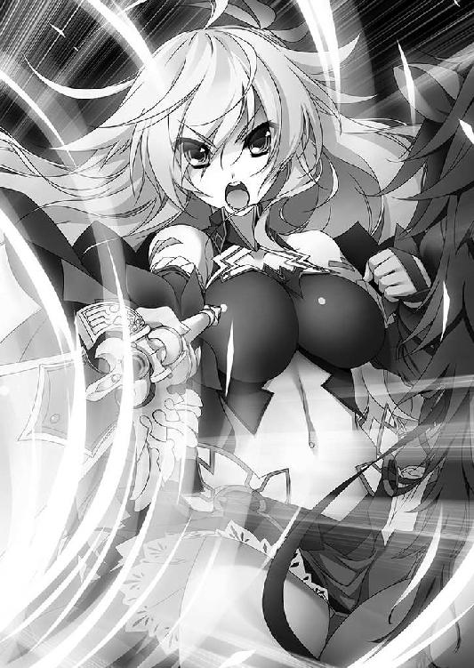
長剣から放たれた風は、獣のように猛り狂いながら人形たちの中に飛びこんだ。旋風が十数体の人形を瞬く間に粉砕する。
長剣をかまえ直して、その娘は目をすがめた。
「案外、数が多いな」
ようやくリムは言葉を吐きだした。
「エレオノーラ様......！」
ライトメリッツの戦姫。『銀閃の風姫』エレオノーラ＝ヴィルターリアだった。
◎
ウルスたちのいるこの場所が、ルヴーシュの南東であったことはエレンにとって幸運だった。ルヴーシュ公都よりも、距離にして二日分近かったからだ。
さらにエリザヴェータがいたことも助けとなった。アリファールが、ヴァリツァイフの存在を感知してエレンに教えたのである。
群がる土塊の人形たちを、白銀の髪の戦姫は長剣を振るって次々に斬り捨てていく。リムとマスハスは目を瞠ってその光景を眺めていた。土塊の人形たちは、アリファールの刃で斬られると地面に崩れ落ちて、二度と動かなくなる。
長剣を振るう手は休めずに、エレンは遠くのバーバ＝ヤガーを睨みつけた。
あきらかに獣ではない。竜とも違う。邪気を練りあげたような怪物だった。
「あれが魔物か......」
エレンの声は、自分でもわかるほど戦慄に乾いている。手綱を握りしめている手が、汗でじっとりと濡れていた。意識していなければ、緊張で呼吸が乱れそうになる。
魔物の存在は、サーシャやソフィーから聞いたことがある。
だが、聞くと見るとではやはり違う。エレンははじめて魔物を目の当たりにしたのだ。
「リム。マスハス卿。状況はあとで聞く。あの兵士たちを任せていいか」
サーシャたちの話を信じるなら、あのような魔物に立ち向かえるのは戦姫しかいない。
「かしこまりました」
「微力を尽くしましょう」
ようやく呼吸を整えたリムとマスハスはそれぞれ答える。エレンは微笑を浮かべてうなずくと、馬を走らせる。人形たちのただ中へ馬を躍りこませた。
右に払い、左に薙ぐ。アリファールが白銀の軌跡を虚空に描くたびに、旋風が巻き起こる。迫りくる人形の群れを斬り散らして、エレンは果敢に敵中を突き進んだ。バーバ＝ヤガーはウルスとエリザヴェータに意識を傾けているらしく、こちらへは何もしてこない。
白銀の髪の戦姫は、人形たちの群れを抜けた。
「──待った」
刹那、横合いから黒い影が飛びだして、エレンに襲いかかる。白銀の髪の戦姫は反射的に長剣を振るった。
金属と岩石をぶつけ合わせるのにも似た、硬質の音が響く。黒い影は大きく飛び退ってエレンと距離をとった。エレンも手綱を引いて馬を止め、その影を睨みつける。
若い男だった。短い黒髪に緑色の布を巻きつけ、襟や袖に毛皮をあしらった厚手の服をまとっている。
エレンは眉をひそめた。彼女の手にある銀閃は、ただの剣ではない。分厚い甲冑はおろか、竜の鱗さえ斬り裂く竜具だ。受け止めることすら困難なはずである。
──手で弾いたように見えたが......。
人間がそんなことをすれば、手が吹き飛ぶに決まっている。だが、相手が人間でないとすれば話は別だ。エレンの握りしめるアリファールは、盛んに警告を発している。何よりもこの男には、バーバ＝ヤガーによく似た、まとわりつくような不気味さがあった。
「おまえ、人間じゃないな」
「わかるかい。銀閃の主」
男は、エレンをそう呼んだ。白銀の髪の戦姫の表情はますます厳しいものになる。
エレンは知らないが、この男はヴォジャノーイだった。
「戦姫二人だとさすがにね。『弓』もどうするのか、まだわからないし。加勢はさせたくないんだ」
「おまえが何を言っているのか私にはさっぱりだが──」
エレンは長剣をかまえ、ヴォジャノーイに向き直る。ヴォジャノーイの放つ、ひとならざるものの異様な雰囲気がエレンを警戒させたのだ。
「敵だということはわかった」
エレンは馬から下りる。ただの人間ならばともかく、そうでない存在が相手では、馬上にあることはかえって不利だと悟ったのだ。それを見たヴォジャノーイは目を細める。
「いい判断だ」
言い終えたときには、ヴォジャノーイは地面を蹴っていた。エレンとの間には十歩分近い距離が開いていたはずなのに、一瞬で詰める。エレンはその動きに驚いたものの、うろたえはしなかった。後ろへ下がりつつ銀閃を振るう。
刃鳴りにも似た音が響いて、ヴォジャノーイの右手が勢いよく跳ね上がる。同時に、エレンの長剣も弾き返されていた。
「やはり手か......！」
「手だけじゃあないとも」
ヴォジャノーイが口を大きく開けて舌を突きだす。その舌が、伸びた。赤黒い舌は槍のようにまっすぐエレンに迫る。白銀の髪の戦姫は目を見開き、とっさに身をよじってそれをかわした。だが、ヴォジャノーイの舌は不意に弧を描いてエレンの右手に巻きつく。
すさまじい力が、エレンをヴォジャノーイのもとへ引き寄せようとする。その力に、エレンは逆らわなかった。軽く地面を蹴ってヴォジャノーイとの間合いを一気に詰め、その間に左手を伸ばしてアリファールを持ち替える。身体をひねった。
一閃。エレンの動きに気づいたヴォジャノーイが舌を引っこめるよりも早く、長剣が煌めいて赤黒い舌を切断する。さすがに魔物も口をおさえてのけぞった。
「──風影」
エレンは間を置かず、地面を蹴る。ヴォジャノーイとの距離を詰める間に銀閃を両手で握りしめた。さらに、彼女の動きをアリファールが風の力で加速させる。
気合いの叫びとともに、エレンは長剣を叩きつける。それに対してヴォジャノーイは、右足を勢いよく振りあげた。
強烈な衝撃が、エレンとヴォジャノーイをそれぞれ吹き飛ばす。エレンは銀閃の力で風を身にまとい、体勢を崩さずに敵から離れた。一方ヴォジャノーイは大きく体勢を崩したものの、左足だけで地面を跳ねながらやはりエレンと距離をとる。
ヴォジャノーイは自分の右足を持ちあげて、しげしげと見つめた。
「これ、お気に入りだったんだけどねえ」
ヴォジャノーイが履いていた靴は、いまの激突によって引き裂かれ、靴底が完全になくなっていた。一方、エレンはそれどころではない。これ以上、この男と向かいあっていると頭がおかしくなりそうだった。
「いったい、どういう身体をしているんだ？」
戦いはじめてから、まだたいして時間が過ぎていないというのに、エレンの顔を幾筋もの汗がつたっている。呼吸も乱れはじめていた。
傭兵団にいたころも、戦姫となってからも、エレンはいくつもの戦場を巡ってきた。しかし、このような化け物とは遭遇したことがない。
ヴォジャノーイはエレンの疑問に答えず、口の中をもごもごと動かしていたが、ほどなく口を大きく開けて舌を突きだした。
エレンが切断したはずの舌が、完全に再生している。
舌を指先で撫でながら、ヴォジャノーイは満足げにうなずいた。
「再生したばかりで、まだちょっと感覚が鈍いな」
エレンはあらためて戦慄を覚えた。
◎
翼を広げて、バーバ＝ヤガーが空中に舞う。
魔物が両手を掲げた。その間に紅蓮の炎が生まれ、瞬く間にふくれあがって火球となった。大気を喰らいながら迫りくるそれに、エリザヴェータは雷渦を振るう。
火球は粉々に吹き飛んで、火の粉がエリザヴェータに降り注いだ。ウルスが矢を拾って射放つが、それをバーバ＝ヤガーは避けようともしない。そして、それらは魔物の皮膚に弾かれて地面に落ちた。
バーバ＝ヤガーの両手に、今度は白く輝く雷光が生まれる。
「──雷刃！」
エリザヴェータの叫びに応じて、黒鞭が剣の形に形状を変える。放たれた雷光を、紅の髪の戦姫はヴァリツァイフで弾き返した。大気の中に白い光の粒子が飛散する。
間髪入れず、バーバ＝ヤガーは急降下してエリザヴェータに襲いかかった。魔物の爪と稲妻の剣が激突し、漆黒の妖婆はその衝撃を利用して空へと舞う。
エリザヴェータはすばやく身をひるがえして魔物に向き直った。互角の激突は、おたがい相手の手に衝撃だけを残したようだった。
「いいように遊ばれているわね......」
バーバ＝ヤガーは空に飛んだかと思うと火球や雷撃を放ち、炎や光にまぎれて襲いかかってくる。そして、一撃を与えたのちにまた空へ逃げるのだ。その繰り返しだった。
ウルスは、絶望的な表情でエリザヴェータとバーバ＝ヤガーの戦いを見守ることしかできずにいた。
まわりを見回せば、離れたところではエレンがヴォジャノーイと戦い、またリムやマスハスはわずかなルヴーシュ兵らとともに、土塊の人形たちと斬り結んでいる。誰もが苦戦し、劣勢に陥っていたが、それでも懸命に戦っていた。
ウルスだけが、無力だった。
──どうすればいい。
ウルスは必死に弓を握りしめて、願った。
廃神殿の地下で双頭竜と戦ったときのように。力がほしいと。
いまの若者は、エリザヴェータの足手まといにしかなっていない。矢の数は少なく、射放ってもかすり傷を負わせることすらできないだろう。
「──ウルス」
雷渦を振るいながら、エリザヴェータが言った。その身体は煤にまみれて黒く、紅の髪は乱れ、ドレスは薄汚れて見る影もない。その中で、金色の瞳と青色の瞳だけが生気を帯びて輝いている。青白い雷光の残滓をまとって立つ戦姫の姿は、美しかった。
「あなたは逃げなさい」
「しかし、ご主人......」
反駁しかけたウルスに、紅の髪の戦姫はそっけなく言い放つ。
「これは命令よ。私の言うことが聞けないの」
異彩虹瞳が、その瞳の奥に浮かぶ彼女の想いがウルスの迷いを払った。自分がここにいても、エリザヴェータの足を引っ張るだけだ。リムとマスハスらのもとへ急がねば。
「わかりました」
「──ウルス」
背中を向けて、エリザヴェータが若者に呼びかける。
「あなたは、充分すぎるほどがんばってくれたわ。そのことを誇りなさい」
ウルスが走りだした。それを見たバーバ＝ヤガーはエリザヴェータへ火球を放ちつつ、空中で弧を描きながら急降下する。
エリザヴェータが身体を勢いよくひねりながら地面に身体を投げだしたのは、そのときだった。倒れこみながら、彼女は雷渦を振るう。
「──闇夜斬り払う刹那の牙！」
轟音が空を震わせた。黒鞭の先端からまばゆいばかりの閃光が放たれて、周囲を白い光で埋め尽くす。不意を突かれて、バーバ＝ヤガーは目を灼かれた。
エリザヴェータはこの一瞬のために、翻弄されている振りを続けてきたのだ。魔物がウルスに執着していると知っていなければ、できないことだったが。
エリザヴェータはすぐに起き上がる。地面に身体を投げだしたことで、火球の直撃は避けることができた。ウルスは背を向けていたので、竜技の影響は受けていない。
紅の髪の戦姫はバーバ＝ヤガーとの間合いを詰め、黒鞭を振りあげた。ヴァリツァイフのまとう雷撃がふくれあがり、無数の放電が生じる。白い輝きを帯びて虚空にうねる鞭は柄の先から九本にわかたれ、それぞれが稲妻をまとって猛り狂う竜を思わせた。
「──天地撃ち崩す灼砕の爪！」
放たれた雷鎚はバーバ＝ヤガーの左腕を焼き、そのまま通過して土塊の人形たちに背後から襲いかかった。雷撃の内包する衝撃波は、人形たちをことごとく粉砕する。
それによって、リムたちへの細い道ができた。エリザヴェータが、ウルスのためにつくりだした道だ。その近くでは、エレンがヴォジャノーイと斬り結んでいる。
竜技の余波を肌に浴びながら、ウルスは懸命に駆けた。
「──逃がさぬよ」
忌々しげに吐き捨てて、バーバ＝ヤガーは焼かれた左腕で薙ぎ払う。竜技を立て続けに使って消耗していたエリザヴェータは、避けることもできずに突き飛ばされた。それ以上紅の髪の戦姫にかまわず、地面に膝をついて、漆黒の妖婆は呪文を唱える。
刹那、バーバ＝ヤガーの頭上──何もない空間に闇が生まれた。それは一瞬よりも短い時間で肥大化し、巨大な城の柱ほどもある漆黒の蛇となる。
「喰らえ」
その闇は、バーバ＝ヤガーの生みだした瘴気であった。
蛇の形をした巨大な黒い闇が、身体をくねらせてウルスに背後から迫る。音を発さず、声もたてず、不気味な静けさで襲いかかった。大きく開けた口には、太く鋭い闇の牙が並んでいる。
──追いつかれる......！
そのとき、白銀の髪がウルスの視界に飛びこんだ。
「──ティグル！」
エレンだった。白銀の髪の戦姫はヴォジャノーイを弾き飛ばすと、その勢いを利用して空中で身をひるがえし、跳躍する。ウルスへと駆け、若者の背後に降り立った。
小さく息を吸う。紅の瞳が、ウルスに迫る蛇の顎を睨みつける。銀閃の刀身が大気を吸いこみ、巻き取って獰猛な暴風の大鉈をつくりあげた。
「──大気ごと薙ぎ払え！」
白銀の刀身から放たれた嵐の渦は、見えざる巨大な刃となって闇の大蛇を襲う。衝撃波が大地をえぐり、風が悲鳴をあげて荒れ狂った。
エレンは目を瞠る。瘴気で形成された大蛇は竜技の一撃でたしかに吹き飛んだが、音もなくゆらめいたかと思うと、瞬く間に元の形を取り戻したのだ。
驚愕の思いにとらわれたのはエレンだけではない。彼女の行動をすぐ後ろから見守っていたウルスもだ。そして、若者はエレンが棒立ちになっていることに気づいた。
「何をやってるんだ！」
竜技を放った直後の、一瞬に満たないわずかな硬直。
ティグルヴルムド＝ヴォルンならば知っていたことを、ウルスは知らなかった。
完全に頭部を再生した闇の大蛇が喰らいつこうとする。ウルスはエレンを後ろから抱きしめると、その勢いのまま地面に倒れこんだ。
二人の身体の上を、闇の蛇が通過する。
しかしウルスの行為は、もたらされる結果をほんの少し先延ばしにしただけだった。闇の大蛇は再び空中で長躯をくねらせると、ようやく身体を起こしたウルスとエレンに真上から襲いかかったのだ。
空中で、バーバ＝ヤガーは歪んだ笑みを浮かべる。
「かまわん。戦姫ごと呑みこんでしまえ」
ウルスもエレンも地面に膝をついており、どう動こうとも大蛇から逃れることはできないだろう。若者は自分の迂闊さを呪った。
不意に、横からエレンが手を伸ばしてウルスを抱き寄せる。彼女は若者の頭を左腕で抱えこみ、銀閃を振りあげて竜技を試みようとした。
それより早く、闇の蛇は地面ごと喰らわんという勢いで二人を丸呑みにする。
「ウルス！ エレオノーラ！」
くすんだ藍色の空に、エリザヴェータの悲痛な叫びが響き渡った。
◎
意識を取り戻したとき、ウルスは奇妙な感触と同時にかすかな息苦しさを覚えた。
視界は闇に包まれている。顔に何かやわらかいものが押しつけられていたが、不思議と不快さは感じなかった。
──何だ、これは。
ウルスは右手を動かして、それに触れる。ぬくもりがあり、丸みを帯びていた。指が沈みこむほどやわらかく、それでいながら指を押し返すほどの弾力がある。
「──こら」
叱りつけるような娘の声がすぐそばで聞こえた。ウルスは驚きのあまり、身体を硬直させる。その手が何かにつかまれて、ゆっくりと引き剥がされた。
「場をわきまえろ。まったく......。これで何度目だろうな、おまえに触られるのは。おまえだけだぞ」
呆れた声の中に、微量の恥じらいが含まれている。ウルスはようやく自分の顔に押しつけられているものが何なのか、自分はいまどのような状態にあるのかを理解した。
「エレオノーラ......さま」
「......そうだ」
ウルスのつぶやきに対してエレンの返事はわずかに遅く、どこか寂しげなものだった。
闇の中で、ウルスはエレンに抱きしめられている。若者の顔に当たっているのは彼女の豊かな胸のふくらみだった。ウルスは慌てて彼女から離れようとしたが、エレンは左腕で若者の頭を抱えこんで離さない。
「暴れるな。離れたらどうなるか、私にもわからないんだ」
諭すような白銀の髪の戦姫の言葉に、ウルスも気を取り直す。
──そういえば、俺たちはあの大蛇に呑みこまれて......。
気を失う直前の出来事を、ようやく若者は思いだした。だとすれば、ここは大蛇の腹の中ということだろうか。
ウルスはそうっと彼女の腰につかまって、周囲に視線を巡らせる。
しかし、若者の視界には暗闇以外の何も映らなかった。一切の光が、ここにはない。もしかしたら、自分は目を開けていないのではないかという錯覚すらしてくるほどだ。闇の中に満ちている空気は生暖かく、不快だった。
エレン以外に触れられるものがないのも、ウルスに焦りを抱かせた。手や足を必死に伸ばし、動かしても、壁や地面に触れるどころか、何にも引っかからない。自分が浮かんでいるのか沈んでいるのかもわからなかった。
ウルスが身じろぎしていることに気づいたエレンが、なだめるように言う。
「少なくとも、私たちを中心にだいたい十アルシンの範囲には何もない。アリファールに調べさせた」
若者には見えないが、エレンの右手には銀閃が握られていた。彼女は風を起こして自分たちのまわりがどうなっているのか、さぐらせたのだ。
「あの大蛇は見るからに生き物ではなかったが、その体内も尋常なものではないようだ。さて、どうしたものか......」
「どうして、俺をかばったんだ」
思案しているらしいエレンを見上げ、ウルスはつい非難めいた言葉を口にしていた。
「その剣の力を使えば、あなただけは逃れることができたはずだ」
あのとき、エレンはウルスをかばった。若者を守った状態で、竜技を使おうとした。そのために動作が遅れ、二人とも大蛇に呑みこまれたのだ。ウルスを見捨てていれば、間に合ったに違いない。
エレンはすぐには答えなかった。ウルスの頭を抱える左腕に、力がこもる。
豊かなふくらみをより押しつけられる形になって若者は緊張を覚えたが、それでも必要以上にうろたえることはせず、真剣な顔で白銀の髪の戦姫を見上げた。
「そうだな。おまえの言う通りだ。私は、そうするべきだった」
エレンは静かにそう言ったが、それはウルスではなく、他の誰かに答えるような口調だった。生暖かい空気が揺れて、ウルスの頬をさっと通り過ぎる。アリファールが、主をなぐさめていた。
「誰よりも、何よりも、おまえ一人を優先した。私は戦姫失格だろうな」
沈黙が訪れる。
闇の中にいるはずのエレンを見つめて、ウルスは何も言葉が出せずにいた。いまの一言一言に、自分を抱きしめる左腕に、胸から伝わる鼓動に、彼女の強い想いを感じとることができたからだ。エレンは静かに言葉を続けた。
「だが、もしもあのときおまえを見捨てていれば、私はそれまでの私であることはできなかっただろう。その日は嘆き悲しんでも、いつかは笑えるようになるかもしれない。前を向いて歩けるようになるかもしれない。でも、それは私であって私ではないんだ」
ウルスは歯を食いしばり、拳を強く握りしめた。爪がてのひらに食いこみ、血がにじんだ。それでも急激に湧きあがった感情をおさえることはできなかった。
──俺は、何をやっているんだ......！
かつてないほどの怒りが、若者を包んでいる。
エレンがこうまで想ってくれているのに。
それなのに、いまだに自分は思いだすことができずにいる。ティグルヴルムド＝ヴォルンだった自分を。
エレンがその身を捨てて自分を守ってくれたというのに。
彼女が助けたのは、ウルスだ。
若者の怒りが、触れあっている身体を通して伝わったのだろう。エレンはウルスの肩を軽く叩き、明るい口調で言う。
「気にするな。私が勝手にやったことだ。それより、さっさとここから出なければ......」
白銀の髪の戦姫の台詞は、最後まで続かなかった。痛みを訴える小さな呻き声が、彼女の唇から漏れる。ウルスは驚きに目を丸くしたが、すぐに理解した。
闇が、細かな塵となってまとわりついてきている。それはウルスの肌を音もなく焼いていた。エレンが受けた痛みも同じものだろう。
恐ろしいのは、抵抗する手段がまったくないことだった。
闇の塵はあらゆる方向、あらゆる角度から二人に迫り、指先ほどの範囲を焼いていく。避けることも防ぐこともできず、この空間の中では逃げることも不可能だ。
頭に、顔に、首筋に、肩に、腕に、腹に、足に痛みを感じて、ウルスとエレンは身をよじる。エレンはアリファールで風を起こして塵を吹き散らしたが、塵はまたすぐに二人に向かってきた。一時しのぎにすらならない。
──あいつの執着ぶりからして、俺はまだ殺さないと思っていたが......。
考えが甘かったのか。それとも、死なない程度に痛めつけておこうということなのか。
「ここまでのようだな......」
エレンが忌々しげに吐き捨てる。そう言いながらも、まだ諦めてはいないことが彼女の声からうかがえたが、時間の問題に思われた。彼女にもウルスにも、対処する手段がないのだ。
二人の頭上にある闇が、うごめいた。ウルスとエレンははっとしてそこを見上げる。依然として明かりがないのにもかかわらず、二人にはその動きがはっきりとわかった。
闇の塵が集まって形成された巨大な大蛇が、自分たちにゆっくりと向かってくる。
「アリファー......」
エレンは諦めずに長剣を振りあげたが、その声が半ばで途切れる。男の腕の中で、彼女の身体が突然重みを増した。気を失ったらしい。
無理もないことといえた。激戦に加えて、いまだに闇の塵は二人を痛めつけている。ウルスとて、気を抜けば意識が遠ざかりそうなのだ。
離してしまわないよう、ウルスは白銀の髪の戦姫を強く抱きしめた。
若者もエレン同様すべてを投げだしてなどはいなかったが、この状況を切り抜ける方法を考える一方で、奇妙な感覚に囚われてもいた。
──何だろう......？ 何だ、この状況は。
かつて、これとよく似た状況に置かれたことがあった。そんな気がするのだ。
同じではないが、ひとつひとつを取りあげていけば酷似していると言えるような。
あらゆる感情が奔騰するほどの出来事だった。あらゆる感情を喪失するほどの出来事だった。二度とあんなことを起こさないと、若者に強い決意を抱かせた。
──そうだ。絶対に、そんなことはさせない......！
そうさせないためのものが、おまえにはあるはずだ。
男の意識の奥底で、何かがそう呼びかける。男はためらうことなくうなずき、それへと手を伸ばす。
この白銀の髪の娘を、守るのだ。自分を守ってくれたからではない。
自分が、彼女のことを強く想っているからだ。失いたくないと思っているからだ。
意識の奥に、沼がある。その深くよどんだ沼の中に、手を突っこんだ。
男は身体を後ろに傾けて、エレンを自分の身体で支えた。そのぐらいの体勢ならば、維持することができた。両腕を自由にするためには、どうしても必要だったのだ。
男の視線の先で、闇の大蛇が速度を上げる。
自由になった左腕を、男はまっすぐ突き上げた。
「──来い！」
あのときのような出来事を、繰り返させないために。
男の左手の中に、熱がわだかまる。
二人を取り巻く闇とはまったく異なる『闇』が、男の手の中から出現し、上下に細長く伸びた。大きく反り返ったそれを、弦が結ぶ。
男の左手には『闇』からつくられた弓があった。
同時に、無数の情景が男の意識によみがえる。これまでに巡り会ってきた人々の顔がひとつ浮かぶたびに、男の黒い瞳に戦意が灯った。
ある老人の顔が浮かんだとき、男の瞳に悲しげな色がよぎる。老人の名はバートランといい、長く男の側仕えを務めていた。
聖窟宮における戦いで、バートランは男をかばって命を落とした。暗闇の中で。
男の右手に『闇』が生まれた。それは瞬く間に一本の矢となる。
男が弓に矢をつがえると、エレンの持つアリファールを中心に風が巻き起こった。白銀の髪の戦姫は目を瞠る。彼女の命令なしに、この長剣の竜具が動いたからだ。
風はひとつの流れを形成して、漆黒の矢の鏃に集まっていく。風は渦となり、螺旋となって男の持つ矢を取り巻いた。
「俺たちは、ここから出る」
男は、弓を力強く引き絞る。眼前に迫る蛇に対して、吼えた。
「──邪魔だ！」
弓弦が震える。
放たれた矢は、大蛇を音もなく打ち砕いた。そのまま上方へと突き進む。
男の狙いは、大蛇などではない。この闇でもない。
その先にいる魔物──バーバ＝ヤガーだ。この『矢』ならば、すべてを貫き、ことごとくを飛び越えてあの魔物を穿つはずだった。
はたして数瞬の後、老婆のものとも獣のそれともつかぬ悲鳴が響き渡った。同時に、男とエレンを包んでいた暗闇が崩れ、溶け去っていく。
まず、靴底に固い地面の感触を覚えた。吹き抜ける風を肌に感じた。
頭上には、黄昏を控えた空が広がっている。
左手に漆黒の弓を握りしめ、右腕に気を失っているエレンを抱えて、くすんだ赤い髪の男は、荒涼たる大地に毅然とした姿で立っていた。
「ティ......グル？」
かすれた声が、男の鼓膜をくすぐる。視線だけを動かしてそちらを見ると、意識を取り戻したらしいエレンが、目を細めて男を見上げていた。
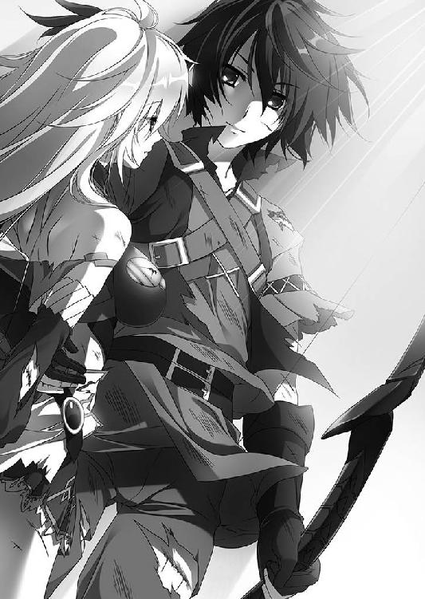
口元に微笑をにじませて、男は答える。
「エレン。遅くなった」
白銀の髪の戦姫の目が大きく見開かれ、彼女の顔に笑みが浮かぶ。
その呼称こそ、まさしく男がティグルヴルムド＝ヴォルンである証だった。
「──ティグル」
エレンはもう一度、若者の名を呼んだ。心の中ではもっといくつもの言葉があふれているのに、口から出てくるのはそれだけだった。
空を覆っていた灰色の雲が途切れて、落日の陽光が地上に幾筋も突き刺さる。
夕日を背に浴びながら、エリザヴェータは立て続けに起きた事態に呆然として、その場に立ち尽くしていた。
黒い大蛇がエレンたちを呑みこんだと思ったら、十を数えるほどの時間が過ぎるよりも早く、大蛇の頭部が吹き飛んだのだ。
まさしく一瞬だった。大蛇の内側からほとばしった一条の黒い光は、そのまま虚空を貫いて空中にいたバーバ＝ヤガーを撃ち抜いたのである。
間違いなく、あの光はバーバ＝ヤガーを狙って放たれたものだった。
漆黒の妖婆は空中でよろめいたかと思うと、廃神殿のときのようにまた音もなく姿を消した。それと同時に、リムたちが戦っていた土塊の人形たちは次々に崩れ去った。まさしく風に煽られた砂の人形のように。
エレンと戦っていたヴォジャノーイとかいう男も、いつのまにかいなくなっていた。
そして、闇の大蛇が消え去ると、そこには二人の男女が立っていたのである。二人の短い会話は風に乗って、離れたところに立っていたエリザヴェータの耳にも届いた。
終わりを、紅の髪の戦姫は悟っていた。
悪夢も、夢も、黄昏とともに去ったのだ。
◎
陽の光も射さない雪原を、黒い塊が這いずるように動いている。獣ではない。人間でもなかった。
苦しげな息を吐きだしながら歩いているその怪物は、バーバ＝ヤガーだった。残っていた力のすべてを使って、戦場から脱出したのだ。
左腕は焼け焦げて朽ちた枯れ木のようになっており、頭部の角は折れ砕け、顔の半分が引きちぎられている。背中の翼は幾筋にも引き裂かれて無残な姿をさらしていた。身体のいたるところに傷があり、黒い血がとめどなく流れている。
一面が白い世界の中で、怪物の歩いた跡だけが、黒い染みの混じった土色の地面をむきだしにしていた。
「恐ろしい威力じゃった。根こそぎ持っていかれるかと思ったわ......。いや、しかし、あれは理想の『弓』になるやもしれん」
バーバ＝ヤガーは動きを止め、気配をさぐる。『弓』と竜具の場所さえわかればいい。
その気配は、一ベルスタ以上離れていた。これならば、追ってくることはないだろう。
しかし、同時にバーバ＝ヤガーは顔をしかめる。自分たちと同じ魔物の気配がする。それも、すぐ近くに。
──ヴォジャノーイか？
しかし、ヴォジャノーイだとすればすぐに姿を見せないのが不可解だった。
足音が聞こえた。バーバ＝ヤガーは痛む身体を動かしてそちらを見る。
そこに立っていたのは、人間だった。少なくとも外見は。
厚手の外套に包まれた小柄な身体。小さな手。短い足。帽子をかぶった禿頭。まぶたがやけに大きく、目は開いているのかどうかわからないほど細い。
彼を知っている人間ならば、こう呼んだだろう。ガヌロン公爵と。
だが、バーバ＝ヤガーは異なる名前でその男を呼んだ。
「コシチェイ......！」
コシチェイ。それはトルバランやバーバ＝ヤガーと同様に、人々の間に古くから語り継がれてきたひとならざる者の名だ。
「──違うな」
ガヌロンはにこやかに笑って否定し、恐れる様子もなく魔物に近づいてくる。バーバ＝ヤガーは身をよじって逃れようとしたが、次の瞬間には、妖婆の目の前にガヌロンの姿があった。両者の間には十歩ほどの距離があったというのに。
ガヌロンの小さな手が、魔物の顔をつかむ。
「私はマクシミリアン。ガヌロン家のマクシミリアンだ。コシチェイなどという者は、もうこの地上のどこにもおらん」
その言葉には、どこか怒りが含まれていた。
老婆の魔物の顔がきしみ、その口から悲鳴が漏れる。バーバ＝ヤガーの顔から、黒い霧にも似た瘴気が立ちのぼった。魔物の生気を、ガヌロンが吸い取っているのだ。
「トルバランは海上で滅んだがゆえに喰い損ねたが、貴様は逃がさん。我が糧となれ」
「ふ、ざけ......」
魔物はもがいた。だが、ガヌロンの倍以上の体躯を持っていながら、バーバ＝ヤガーは身体を思うように動かすことができなかった。天敵に捕食された哀れな虫のように、老婆の魔物は喰われようとしていた。
それでも妖婆は懸命に右手を振りあげ、ガヌロンの身体を引き裂こうとする。ガヌロンは空いている左手を伸ばし、魔物の右腕をつかんだ。恐るべき速さだったが、それを感じさせない自然な動きだった。
乾いた音が響き、魔物が短い悲鳴をあげる。ガヌロンが、バーバ＝ヤガーの右腕を握り潰したのだ。
それが、バーバ＝ヤガーが最後に見せた反応だった。ガヌロンの右手から、黒い砂のようなものがさらさらとこぼれ落ちていく。
それはバーバ＝ヤガーだったものだ。生気を吸い取られ、身体を維持できなくなっていった魔物は、静かに崩れ落ちて滅んでいく。
顔だけではない。肩も、腕も、足も、翼も、バーバ＝ヤガーの崩壊は身体中に及びつつあった。あれほど人間たちを苦しめ、強大な一撃をくらってもなお生き延び、今後も彼らの脅威となったであろうはずの魔物が、死の淵にその身を浸しつつあった。
一方、小柄で非力に見える男の両眼には、あふれんばかりの邪気がみなぎっていた。
魔物の右腕が力を失って、地面につく。その瞬間、枯れ枝が木から離れるように、魔物の肩が身体からずり落ちた。灰となって雪の中に埋もれていく。
そうして三十を数えるほどの時間が過ぎ去ると、そこにはもはやバーバ＝ヤガーという魔物の痕跡はなくなっていた。ただ、黒い灰が雪の中に埋もれているばかりだ。
満足げにうなずいたガヌロンだが、ふと何者かの気配を感じて、離れたところにそびえる木々の中へ視線を向ける。
そこには、黒いローブに身を包んだ老人が黙然と立っていた。
ガヌロンは、その老人がドレカヴァクという名であることを知っている。彼がバーバ＝ヤガーと同じく魔物であり、以前はテナルディエ公爵に仕えていたことも。
ドレカヴァクが姿を見せたことにガヌロンは驚いたが、彼が何も言わず立っていることを訝しみ、眉をひそめた。もしも彼がバーバ＝ヤガーを助けるつもりだったのならば、怒りや悔いを見せてもよさそうなものだ。
「仲間を助けに来たのかな。遅かったようだが」
悠然と、ガヌロンは聞いた。ドレカヴァクは淡々と答えた。
「助けに来たわけではない。その必要も感じなかったことだしな」
ガヌロンは首をひねる。もともと仲間意識の薄い連中だとは思っていたが、それほどの余裕は彼らにはないはずだ。
「これで、おまえたちは三体の仲間を失ったことになる。コシチェイ、トルバラン、バーバ＝ヤガー。貴様も含めて、もう片手で数えられるほども残っていなかろう」
ガヌロンの言葉に、ドレカヴァクはフードの奥で冷笑を浮かべた。
「おまえは誤解しているようだが、私たちの目的を達成するためには、全員が残っている必要はない。然るべき時、然るべき地に、誰かひとりが立っていればよいのだ。──コシチェイよ。それがおまえでも」
ガヌロンの視線に殺気がこもる。かつての公爵は右手に力をこめ、わずかに前屈みになって地面を蹴る体勢をとった。
「私が貴様らの同類に見えるとは、ずいぶん耄碌したな」
そう言いながら、しかしガヌロンはすぐには動きださない。ドレカヴァクはただ立っているように見えて、まったく隙を見せなかった。ガヌロンの挑発にも乗ってこない。
「魔物を吸うような真似は、ただの人間にはできぬよ。マクシミリアンなどと人間ぶってみたところで、おまえは人間ではない」
ドレカヴァクは背を向ける。老人の魔物の声は大きくなかったが、ガヌロンの耳にはしっかり届いた。
「最後に立っているのがおまえでも、私はかまわぬ。ひとの世が覆るのであれば」
そのままドレカヴァクは歩いていき、木々の中に姿を消す。雪原には、ガヌロンだけが残された。かまえを解いて一息つくと、ガヌロンは不愉快そうに鼻を鳴らす。
「最後に立っているのが......か。いいだろう。元よりそのつもりだからな」
独語して、ガヌロンは悠然と雪原を歩きだした。ひとまず、バーバ＝ヤガーを喰らうという目的は達成したのだ。いまはそれでよしとしよう。
「そろそろブリューヌに戻らなければならんが、少し残念だな。この雪ばかりの国にも、ようやく春が来るというのに。まあ、辛い火酒と縁が切れて、ブリューヌの芳醇な葡萄酒を飲めると思えばいいか。いずれまた、戻ってくることになるだろうし......」
白い大地に黒い靴跡を残しながら、ガヌロンはゆっくりと歩いていった。
◎
戦いの終わった廃神殿のそばで、ルヴーシュ兵たちは戦死した仲間を埋葬していた。埋葬といっても、穴を掘って埋めるわけではない。死体を一ヶ所に集めるだけだ。その際、兜や篭手を回収して、持ち主の名前を刻んだ。
兵たちに混じってエリザヴェータとティグル、エレンにリム、マスハスも埋葬を手伝った。むごたらしい亡骸の数々が、彼らにさきほどの体験が現実だったことを教えている。その光景に嘔吐する兵も少なくない。
ルヴーシュ兵の数は、六十騎に満たなかった。死者の数は二十に届かないので、約二十騎が逃げ散った計算だ。相手を考えれば無理のないことだった。
「十ベルスタほど離れたところに、他の部隊が一隊いるはずです。逃げた者を捜索すると同時に、そちらに応援を頼みましょう」
古参の兵が進言し、エリザヴェータはそれを受けいれた。また、逃げた罪は問わないともつけ加える。本来、戦場での逃亡は罪に問われる。士気を保つためであり、踏み止まって戦った兵に不満を抱かせないためにも必要な処置だからだ。
だが、エリザヴェータは今回は例外とし、兵たちも賛意を示した。
埋葬がすむと、エリザヴェータは落日を背に、兵たちにねぎらいの言葉をかける。
「よく戦い抜いてくれましたわ」
紅の髪の戦姫の姿はひどいものだった。紅の髪は乱れ、ドレスの裾は幾重にも裂けている。白い肌は傷だらけで、土砂で薄汚れていた。
だが、エリザヴェータの顔には晴れやかな笑みが浮かんでいた。金色の瞳には兵たちを誇る気持ちが、碧色の瞳には兵たちをいたわる気持ちがにじんでいる。それが彼女の声からも伝わってきて、兵たちは尊敬する主に対して胸を張り、背筋を伸ばして敬礼した。
エリザヴェータは兵の半数に休息を、残りに逃げた兵や他の部隊の捜索を命じてひとまず解散させた。
彼女がティグルと向き合ったのは、それからだ。
兵たちの目を避けて、廃神殿の陰でエリザヴェータとティグルは向かいあった。二人とも相手をまっすぐ見つめているが、その表情は曇り、迷い、焦りに満ちている。
少し離れたところでエレンとリム、マスハスがその光景を見守っていた。
「何だ、ティグルのやつは。別れ話というものはさっさと切りださないと面倒になるだけだというのに」
「エレオノーラ様」
たしなめるようにリムが主の名を呼ぶ。彼女の青い瞳には、かすかな不安があった。リムの内心を察したのか、マスハスは彼女の肩を軽く叩く。
「心配せずとも、ティグルは戻ってくる」
リムはおもわず灰色の髭の老伯爵を振り返った。マスハスはうなずいて笑う。
「あやつがその気になれば、いまからでもウルスとしての人生を歩むことはできるじゃろう。思いだしたことをすべて忘れてな」
だが、ティグルがその道を選びとることはないだろうとマスハスはわかっている。
彼らの視線の先で、ティグルは戸惑いの渦中にあった。何度か口を開きかけ、そのたびに閉じて頭の中で言葉を考え直す。エリザヴェータも同様だった。
しかし、ついに意を決してティグルは言った。
「──短い間でしたが、お世話になりました」
エリザヴェータは目を丸くしてティグルを見つめる。落胆したように目を細めた。
「もっと他にましな言葉はなかったのかしら？」
「ないわけではないのですが......」
困ったように、ティグルはくすんだ赤い髪をかきまわす。エリザヴェータは言った。
「エレオノーラに話していたように、私にも話しなさい。私が許します」
「ありがとう」
敬語をやめて礼を述べ、それからティグルはさきほどの彼女の言葉に答える。
「世話になった。いろいろ考えたけど、これがいちばん俺らしいと思ったんだ」
その台詞に、今度は驚いたようにエリザヴェータは目を瞠る。それから、寂しげにつぶやいた。
「そう......。あなたらしい、ね」
エリザヴェータは視線を落とし、ティグルに戻すと、いくばくかの不安を異彩虹瞳ににじませて聞いた。
「でも、そうね。あなたとはじめて会ったときは、そんな感じだったわ。あなたは、どれくらい覚えているの？」
ウルスという人間だったときのことを。
「何もかも。あの砂浜で、あなたにはじめて会ったときのことも。瞳について問われたときのことも。あなたと町へ出たときのことも」
ティグルはそう答えて、続けた。
「その上で、俺はティグルヴルムド＝ヴォルンとして生きていくことを決めました。ウルスだったときのことを忘れはしません。ですが、ウルスとして生きることは......もうありません」
ウルスだったときのことが入り混じって、言葉遣いが乱れる。しかしティグルは気にせず、エリザヴェータもそのことを咎めなかった。
「エレオノーラのところへ、帰るのね」
エリザヴェータのその言葉は、責めるというよりもどこか拗ねたようだった。ティグルは一瞬言葉に詰まったあと、首を横に振る。
「俺はエレンのことを大切に思っています。でも、彼女のところに帰るわけじゃない」
いつかは、ブリューヌ王国のアルサスに帰る。契約ではあと二年ということになっていたが、これだけの事件のあとではどうなるだろうか。
そこまで考えて、ティグルの頭の中に白銀の髪の戦姫の笑顔が浮かんだ。ティグルはくすんだ赤い髪をかきまわす。たったいま、エリザヴェータに言ったばかりだというのに、自分は彼女のそばから去ることを惜しんでいる。
葛藤を横に追いやって、ティグルはエリザヴェータを見つめる。エレンとは、これから話せる。その前に、エリザヴェータに言っておかなければならないことがあった。
「エリザヴェータ。約束する。あなたに何かあれば、俺はすぐに駆けつける」
「どうして？」
意地の悪い声でエリザヴェータは聞いた。
「ウルスではないあなたは、私とは何の関係もないはずよ」
「昨年の、ブリューヌの内乱で援助をしてくれたことがあっただろう」
ティグルがテナルディエ公爵との決戦を間近に控えていたときのことだ。エリザヴェータはティグルの指揮する『銀の流星軍』に協力したことがあった。もっとも、エリザヴェータは敵であるテナルディエ公爵にも協力していたのだったが。
「あのときの礼を、やっと言える。ありがとう。本当に助かった」
「どうでもいいことだわ」
エリザヴェータは肩をすくめてため息をつく。本当にそう思っているようだった。
「それだけで、すぐに駆けつけるなんて言えるの？」
ティグルは首を横に振る。笑って言った。
「さっきも言ったけど、ウルスだったときのことは忘れるつもりはない。そして、ウルスだったときの俺が言うんだ。あなたの力になってやってほしいって」
エリザヴェータは、今度こそまじまじと若者を見つめた。それから小さく噴きだす。
「あなた、本気で言ってるの？」
「本気だけど」
「じゃあ、私とエレオノーラが戦うことになったら、どちらの味方をするの？」
挑発的な視線で、エリザヴェータは問いかけた。その可能性は、依然として存在する。
エレンとエリザヴェータの間にあるいくつものわだかまりが溶けたわけではない。エレンはエリザヴェータを許さず、エリザヴェータもまたエレンを許さないだろう。
ティグルは少し考えたあと、口を開いた。
「俺が二人の仲を取りもつ」
「簡単に言うけれど、そんなことができると思っていて？」
腕組みをして、エリザヴェータはティグルを見上げる。ティグルは首をひねった。
「わからない。でも、俺はあなたのことも、エレンのことも大切に思っている。どうしても無理だとわかるまでは、やってみるさ」
「そう......」
エリザヴェータは、その言葉まで否定しようとはしなかった。
「試しに、何か希望があれば言ってみてくれ。俺にできることなら......」
ティグルはそこで言葉を呑みこんだ。エリザヴェータがいつになく真剣な表情でティグルを見上げたからだ。
「できることなら、って言ったわね？」
ティグルはその迫力に気圧されて、黙ってうなずく。
すると、エリザヴェータは組んでいた腕を解いて、ティグルを抱きしめた。
おもわぬ行動にティグルはとっさに声が出ず、反応もできない。若者の胸に顔を埋めながら、エリザヴェータはつぶやくような声で言った。
「少しの間......ほんの少しの間でいいわ。ウルスになって」
ティグルは答えなかった。ただ、彼女の背中にそっと手を伸ばし、優しく抱きしめる。
どれぐらい二人はそうしていただろうか。三十を数える時間よりも、短かったのは間違いない。
エリザヴェータは抱擁を解いて、そっとティグルから離れた。ティグルもまた、彼女から離れる。
「ありがとう......」
エリザヴェータはティグルから視線を外すと、エレンに向き直る。そのとき、エレンは衝撃のあまり棒立ちになっていたのだが、紅の髪の戦姫の視線を受けて我に返った。
エリザヴェータは小さく笑うと、ティグルの手をとって歩きだす。ティグルは怪訝な顔を彼女に向けたが、エリザヴェータは何も言わずに歩いていく。
エリザヴェータは、エレンの前で足を止めた。ティグルから手を離し、腕組みをして傲然とエレンを睨みつける。
エレンはといえば、怒りを隠そうともせず、エリザヴェータを睨みつけていた。
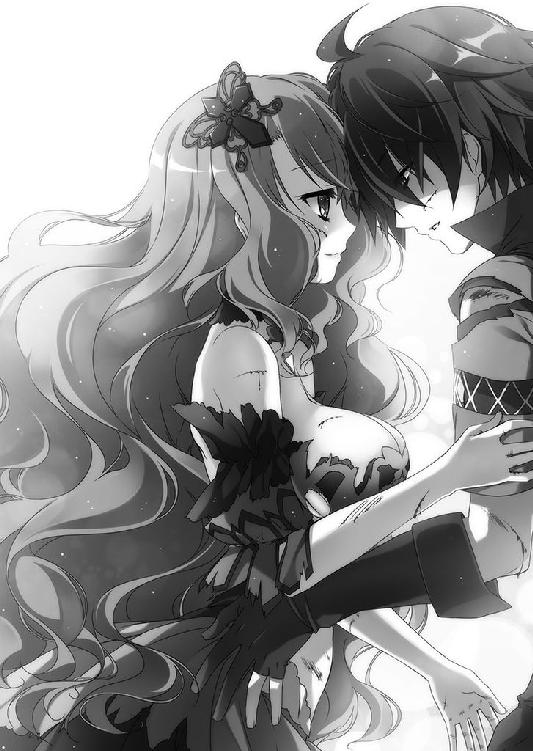
「預かっていたティグルヴルムド卿を、お返ししますわ」
居丈高な調子で、エリザヴェータが言った。
「ほう。ルヴーシュでは、ひどい待遇で迎えることを預かるというのか。こちらはちゃんと聞いているぞ。馬丁にしたり、側仕えにしたりといろいろやってくれたそうだな」
ここぞとばかりにエレンはエリザヴェータを責めたてる。だが、エリザヴェータは平然と答えた。
「ウルスという男にそうした待遇を与えた覚えはあるけれど、ティグルヴルムド卿を手荒に扱った覚えはありませんわ」
この答えにはエレンだけでなく、ティグルとリムまでもが呆気にとられた顔になる。感心したのはマスハスだけだった。
「なるほど。たしかに筋が通るか。して、戦姫殿。そのウルスとやらは？」
「旅に出たわ」
おそらく考えていたのだろう台詞を、エリザヴェータはよどみない口調で述べた。彼女の台詞は、そういうことにしてしまおうという提案でもあった。
ウルスを否定するのではない。ただ、エリザヴェータに拾われたウルスは、魔物との戦いのあと人知れず姿を消したのである。
そして、エリザヴェータは同じ時期に、行方不明とされていたティグルヴルムド＝ヴォルンを見つけ、保護した。エレオノーラ＝ヴィルターリアはその話を聞き、副官のリムアリーシャと、ブリューヌのマスハス、ティッタをともなってティグルを引き取った。
それだけが、おそらく誰も傷つかない方法だった。
そのとき、エレンの腰に吊された長剣と、エリザヴェータの腰に提げられた黒鞭がほとんど同時に光を発した。二人の戦姫は驚いて自分たちの竜具を見つめる。
「あの魔物が滅んだ......？」
竜具がおぼろげに伝えてきた意思を読みとって、エリザヴェータは目を瞠る。エレンもだ。そして、エリザヴェータの右腕が突然だらりと下がった。
「どうした？」
緊張と焦りを露わにするティグルに、エリザヴェータは首をかしげながらも自分の右腕を持ちあげようと試みる。
だが、持ちあがらなかった。さきほどまで腕組みなどもできていたのに、力が抜けたかのようにだらりと下がったままだ。
「......何があった？」
エレンがおそるおそる聞いた。エリザヴェータは答えず、左手で己の右腕をつねる。
「感覚はあるわね。痺れているわけでもない」
それから、紅の髪の戦姫はため息をついた。
呪いはとけたに違いない。魔物は滅んだのだから。
ただ、この右腕を元通りに使えるようになるまでには、そうとうな時間と努力が必要になるだろうことを彼女は漠然と悟っていた。
「力の代償かしらね。この程度ですんでくれた、という感じだけれど」
廃神殿の陰から出て、落日の陽光を浴びながら、エレンは大きく伸びをした。
「やれやれ。やっと一件落着というところか」
これまでの苦労を懐かしむように、小さく息を吐く。あとはルヴーシュの公都に戻ってティッタを迎え、形式上の儀礼をすませてライトメリッツに帰還するだけだ。
「解決したといっても謎は増えましたが」
リムの冷静な視線が、ティグルとその手にある弓へと向けられる。魔物がなぜティグルに固執していたのかは結局わからないままだ。魔物たちが何体いるのかも不明である。
魔物の件に決着がつかないかぎり、ティグルにとって安寧の日々は訪れないだろう。若者を客将として預かるライトメリッツにとっても、同じことがいえた。若者の故郷であるアルサスや、ブリューヌ王国それ自体にも。
思いつめた表情の副官の肩を、白銀の髪の戦姫は軽く叩く。
「気持ちはわかるが、いま悩んでも答えが出るものではあるまい。いずれ、ソフィーにも聞いてみよう。場合によっては、他の連中にもな」
他の連中とは自分たち以外の戦姫──リュドミラやエリザヴェータ、オルガ、ヴァレンティナのことだ。母も祖母も戦姫だったというリュドミラは、家族から何か教えてもらっているかもしれない。
トルバランと戦ったことのあるオルガも、領地たるブレストに戻って調べている可能性はある。エリザヴェータはこれから詳しく調べるだろう。ヴァレンティナとはほとんど話したことがないが、彼女が何も知らないとしても、話しておく必要はあるだろう。
「すまないな。俺は何も力になれなくて」
ティグルはすまなさそうな表情でエレンに謝る。家宝の黒弓について、若者は自分で体験したこと以外は何も知らない。アルサスの屋敷にも、家宝について記したものはないはずだった。
「気にするな。これから調べていけばいい」
ティグルの胸中に湧きあがる後悔や申し訳なさを、白銀の髪の戦姫は笑顔ひとつでかろやかに吹き払う。その笑顔にすくわれた気持ちを抱きつつ、若者はうなずいた。
「わしもブリューヌに戻ったら調べてみるとしよう。もっとも、戻るのはかなり先のことになるじゃろうがな」
マスハスも灰色の髭を撫でながら言った。彼はルヴーシュの公都で身体を休めたあと、王都シレジアへ向かう予定だ。ブリューヌ王国の使者としてヴィクトール王に謁見し、ティグルのことを話すつもりだった。
「......やはり、ティグルを連れて帰るのか？」
エレンが寂しそうな顔で老伯爵に尋ねる。そうなっても仕方のないことだとわかっているし、覚悟もしていたが、やはり感情をおさえることはできなかった。マスハスも、さすがにこの件については笑顔で応じることができない。
「わしとしてはそのつもりですが、ヴィクトール王次第ですな。もっとも、交渉がすぐに終わるとも思えませんので、少なくとも春の間は、まだティグルは客将扱いでしょう」
「わかった。ライトメリッツにいる間は、私がティグルに対してすべての責任を負う」
真剣な表情でエレンがそう答えたときだった。ふと遠くに動くものを認めて、ティグルはそちらに視線を向けた。
荒野の向こうから、ひとつの騎影が駆けてくる。ルヴーシュ兵のようだ。その兵士はエリザヴェータの姿を認めると、彼女から三十アルシンほど離れたところで馬を止めた。慌ただしく地上に降りて、よろめくような足取りでエリザヴェータの前へと進み出る。
「どうしたんだ？」
エレンが訝しげな顔で首をかしげた。リムがそれに答える。
「公都で何かあったのではないでしょうか」
リムの言葉に、ティグルはおもわず拳を握りしめた。公都にはティッタがいるのだ。公宮の一室を借りているのでまず安全だろうが、心穏やかではいられなかった。
その兵士はエリザヴェータの前に膝をつくと、息を切らしながら報告する。
「も、申しあげます！ ポルス伯爵が二千の軍勢を率いて攻めこんでまいりました！ 戦姫さまにおかれましては、御身の安全のためにも急ぎ公宮にお戻りいただきたく......！」
そこまで叫ぶと、兵士は腰に提げていた袋から一通の書簡を取りだした。両手に持ってエリザヴェータへと捧げる。
「──ご苦労。あなたは休みなさい」
紅の髪の戦姫は左手でその書簡を受け取ると、兵士にねぎらいの言葉をかけた。他の兵士を呼んで彼に食事と寝床を与え、馬の世話もしておくよう指示を出す。
それを見届けてから、ティグルはエリザヴェータに向かって歩いていった。エレンとリム、マスハスも黙って続く。
雷渦の閃姫は歩いてくるティグルに気づくと、左手の書簡を一瞥して、若者に視線を戻した。ティグルに書簡を差しだす。
「中身を開けて、そのまま読んでもらえるかしら。──ティグルヴルムド卿」
他人行儀な呼び方を意識したせいか、ティグルの名を呼ぶのに若干の間があった。ティグルはうなずいて書簡を受け取ると、慎重に封を切って中身を開く。
「ナウムさんから、俺宛ての手紙だ」
正確には、ウルス宛ての書簡だ。エリザヴェータは苦笑を浮かべた。
「そうだと思いましたわ。私がここにいることを、ナウムやラザールが知っているはずはありませんもの」
さきほどの兵士は、エリザヴェータの姿を発見したので、何よりも彼女に報告をしなければならないと思ったのだろう。
ティグルは書簡に目を走らせていったが、何とも言い難い表情になる。エリザヴェータは不思議そうに首をかしげた。若者に追いついたエレンたちも怪訝な顔をする。
「どうした、ティグル」
「この手紙によると、ポルス伯爵という方は......エリザヴェータから俺を助けだすつもりらしい」
ナウムの手紙には、ポルス伯爵オルゲルト＝カザコフが二千の兵を率いて南東から侵入したこと、彼はティグルヴルムド＝ヴォルンを引き渡すよう要求しており、そのためには一戦も辞さないかまえであることが簡潔な文体で綴られていた。
『どこで調べたのかはわからないが、ポルス伯爵はおまえさんがヴォルン伯爵だという確信を持っている。こちらは、ウルスについては側仕えとして存在を認めたが、ヴォルン伯爵については否定した』
ウルスはエリザヴェータの捜索から外れて、すぐに公宮へ引きあげるようにという指示で手紙は締められていた。若者の身を案じるナウムの心情が文章から伝わってきて、ティグルは心の中で壮年の騎士に礼を述べた。
ティグルは四人を見回して、手紙の内容を説明する。聞き終えたとき、エレンとマスハスは目を丸くして呆れた顔になっていた。
「何とも間の悪いというか、運のない男だな。そのカザコフとやらは」
「まったくじゃ。その手紙が昨日か一昨日にでも届いていれば、話は違ったのだろうが」
その二人と違い、リムとエリザヴェータは真剣な表情で何やら考えこんでいる。
「エリザヴェータさま。恐れ入りますが、このカザコフという方についてご存じのことがあれば、教えていただけませんでしょうか」
リムも、紅の髪の戦姫に対しては思うところが多い。しかし、彼女はそうした感情のことごとくを心の奥底に押しこめて、目の前の事態の処理を優先した。
「人柄を簡単に説明するなら、うぬぼれ屋の見栄っ張りといったところかしらね」
雷渦の閃姫の口調には、冷たい蔑みが含まれている。
エリザヴェータがカザコフに会ったのは一度か二度ぐらいだが、その気性についてはよく知っていた。おたがいの領地が隣接していることに加えて、何かあった場合は高い確率で敵になるだろうと考え、調べさせていたからだ。
カザコフが異彩虹瞳を理由に自分を嫌っていることも、もちろんエリザヴェータは知っていた。そして、エリザヴェータがカザコフに好意を持つ理由はひとつもなかった。
「一領主としても、ひとりの戦士としても、指揮官としても能力のある男ですわ。兵や領民の信望もあり、彼に好意的な貴族も少なくない。反面、名誉欲がとても強い方よ。そのためには危険な橋を渡ることも厭わないぐらいに」
「ティグルヴルムド卿を引き渡すように要求してきたのも、その名誉欲からだと？」
「いまの段階では推測に過ぎませんわ。あまりにも奇妙な点が多すぎるんですもの」
色の異なる双眸に不審と疑惑を湛えて、エリザヴェータは頭を振る。
ウルスとティグルが同一人物であるとカザコフは主張しているわけだが、それなら彼はウルスについてもティグルについても詳しく知っていなければならない。
だが、カザコフはティグルに会ったこともなければ、ブリューヌとの交流もたいしてないはずだ。
「カザコフに、いらぬ知恵をつけた者がいるというわけか」
エレンが不機嫌そうに眉をひそめた。エリザヴェータはうなずく。
「そういうことね。カザコフも馬鹿ではないから、よほどの人物から話を聞いたか、それだけの証拠を提示されたのでしょうけど」
手紙をたたみ、ティグルは慎重な口調で聞いた。
「これからどうする？ 俺がこの方に会って、事情はこうと説明しようか」
「それは危険すぎるな。さっさと公都に戻って、ルヴーシュが行方不明中だったティグルを保護したと発表する方がいい。そうすれば、カザコフも引きあげるだろう」
エレンの言葉に、リムとマスハスはうなずくことで賛同の意を示す。
しかし、エリザヴェータはうなずかなかった。彼女は地面に視線を落とし、無言で何かを考えこんでいる。不意に、その顔が緊張に満ちたものとなった。
「カザコフは、この近くにいる可能性があるわ」
落日に照らされたエリザヴェータの横顔には、かすかな動揺がある。
彼女の頭の中には、この周辺の地形や地名が浮かびあがっている。自分たちの位置と、予想されるカザコフの軍の動きを考えると、その可能性はかなり高かった。
「南東から入って、街道を外れて進軍しているのでしょう。このあたりは街道から大きく外れているもの。遭遇したら、戦いになるかもしれない」
ティグルは目を瞠った。
「そんなに好戦的な男なのか、カザコフは」
「軽々しく兵を起こすような真似はしないけれど、それだけに、一度兵を起こしたら簡単に引くこともないわ。自分の判断に自信があるから、たとえ敵兵を蹴散らそうと、威圧になって交渉が有利になると考えるような男よ」
いま、ここにいる兵の数はおよそ六十。ナウムの手紙によれば、カザコフは二千の兵を率いているという。もし先に見つかって攻撃されたら、エリザヴェータやエレンが奮戦しようとも敗北はまぬがれないだろう。
エリザヴェータがティグルを振り返る。一瞬、彼女は瞳を曇らせて何かを言いたそうな顔をしたが、すぐに戦姫としての表情に立ち戻った。
「ティグルヴルムド卿。あなたはエレオノーラたちとともに、公都へ帰りなさい」
「あなたはどうする？」
紅の髪の戦姫の視線を正面から受け止めて、ティグルは穏やかな口調で尋ねる。エリザヴェータは若者の反応を予想して顔をしかめたものの、正直に答えた。
「私は兵たちとここに留まりますわ。カザコフが何をしでかすか、わかりませんもの」
「それなら、俺にも手伝わせてくれ」
「戦いになったら、死ぬかもしれないんですのよ？ あなたにこのルヴーシュで死なれては迷惑きわまりないわ」
エリザヴェータは故意に皮肉めいた言い方をしたが、若者には通じなかった。
「さっき言ったはずだ。あなたに何かあったら、俺はすぐに駆けつけると」
ティグルはエリザヴェータを静かに見つめている。黒い瞳はまっすぐで揺るぎない。紅の髪の戦姫は視線をそらして、エレンたちに助けを求めた。
「──仕方がない。成り行きがてら、手伝ってやる」
ため息混じりにそう言ったのはエレンだ。エリザヴェータは呆気にとられ、ぽかんと口を開けてリムとマスハスを見た。
「このお二人を説得するぐらいなら、手伝った方がましです」
「人間なら、何者だろうと、さっきのようなのよりはましじゃろう」
リムは諦めたような声で答え、マスハスは自分に言い聞かせるようにうなずく。これにはティグルもしまったと言いたげな顔をしたものの、自分の考えを曲げるつもりはない。
うろたえるエリザヴェータへ、とどめとばかりにエレンが言った。
「おそらく戦いになるのだろう？ ひとりでも数が必要なのだろう？ 話は簡単じゃないか。儲けものだと思っておけ」
◎
オルゲルト＝カザコフの率いるポルス軍二千がルヴーシュへの侵入を果たしたのは、三日前のことである。
ポルス軍は五百の騎兵に一千五百の歩兵という構成で、いずれも甲冑に身を固め、その上に毛皮の服を着こんでいた。騎兵は槍と盾を持ち、歩兵は剣と盾、弓を携えている。
彼らは街道を通って堂々と進んできたのではなく、荒野を抜けてルヴーシュの南東から入りこんだ。
街道を通っては、目立ちすぎるからだ。旅人や行商人はもちろん、街道沿いの城砦を守るルヴーシュ兵にもすぐ気づかれてしまうだろう。そうしたら、エリザヴェータは街道を兵たちで固めてしまうかもしれぬ。
ティグルヴルムド＝ヴォルンを取り返すための交渉において、ポルス軍がどこまで公都に迫っているかは重要になってくるはずだ。ポルス軍が公都の近くにいるほど、エリザヴェータにかかる心理的な圧力は大きなものとなるだろう。
そのために、いずれは気づかれるとしても、少しでも公都に近づいておく。それがカザコフの狙いだった。
そして今日、ルヴーシュの公都に使者として派遣していた兵士が戻ってきた。カザコフは総指揮官用の幕舎にその兵を招き入れる。二人だけになってから、三十五歳のポルス伯爵は尋ねた。
「戦姫殿は何と言ってきた」
「申し訳ございません。戦姫さまは視察に出られていて、謁見はかないませんでした。戦姫さまに仕えている文官のラザールという方に、閣下のお言葉を伝えたのですが......」
カザコフは視線で先を促した。ラザールの名は彼も知っている。先代の戦姫のころからルヴーシュに仕えている男だ。
「ラザール殿は、たしかにウルスなる男の存在は認めたのですが、ヴォルン伯爵についてはまったく知らない、そちらの思い違いではないかとの一点張りで。それどころか、こちらが軍を進めてきたことを非難するありさまです」
やや戸惑い気味に、兵士は報告を終える。カザコフは気むずかしげな顔をつくってうなずくと、休むように言ってその兵士を下がらせた。
「まだ距離が足らないと見えるな」
ひとりになった幕舎の中で、カザコフは嗜虐的な笑みを浮かべる。彼はひとを使って調べさせ、ウルスがティグルであることを確信していた。
「我々はこのまま、整然と公都へ進む。いずれ、あの薄気味悪い目を持つ戦姫が泣きついてこよう。いや、あるいは体面を考えて一戦挑んでくるかもしれん」
休息を終えて進軍を再開するとき、カザコフは部隊長らを集めてそう告げた。私戦であると叫び、街道ではなく歩きにくい荒野を進んでいるというのに兵たちの士気は高い。
ジスタート北部において、イルダーに次ぐ勢力を有しているだけのことはあり、カザコフは決して凡庸な領主でも指揮官でもなかった。このような戦でも兵たちがついてくるだけの信望を集めてもいたのだ。
そうして二千のポルス軍は、再びルヴーシュの荒野を進む。
エリザヴェータの使者を名のる男がカザコフに謁見を求めてきたのは、翌日の朝のことだった。カザコフは休息も兼ねて軍を止め、馬上でその男に会う。
使者がうやうやしく差しだした書簡を受け取ると、カザコフはその場で封を切った。中の手紙に、すばやく目を通す。
「戦姫殿はずいぶん下手な字だな」
それが最初の感想だった。エリザヴェータが力の入らない右手に筆を縛りつけて書き綴ったその手紙は、カザコフの無法な侵入に憤り、即刻撤退を要求するものだった。
『ティグルヴルムド＝ヴォルンは、たしかに我が公国で預かっております。そのことを部下に否定させたのは我が国にとって必要な措置だったからです。閣下がどこでヴォルン伯爵のことをお知りになったのかは存じませんが、彼を閣下にお渡しする理由はありません。彼は我々が無事にライトメリッツへ送り届けますので、ご安心ください』
エリザヴェータにしてみれば、嫌っている相手にティグルがいるのかどうかなどと尋ねられても、正直に答える理由はないというところだろう。それに賓客の存在を他者に隠すことは、ないことではなかった。
カザコフ自身、領主としてそうした対応をとったことは何度もある。だが、このときの彼はそのことを失念していた。エリザヴェータへの嫌悪感が、忘れさせた。
──必要な措置か。笑わせおる。
読み終えたカザコフは、手紙をいい加減にたたむと使者に突き返した。
「私はヴォルン伯爵を引き渡すよう要求しているのだ。それがかなわぬかぎり、我が前に立ちはだかる軍はことごとく撃砕する。戦姫殿にそう伝えよ」
ティグルをライトメリッツへ送り届けるというエリザヴェータの言葉を、カザコフは信じなかった。また、ティグルの身柄を確保し、彼自身の手で王都へ送り届けてこそ、国王やビドゴーシュ公爵の信頼に応えることができるとカザコフは信じていた。
使者が去るのを待って、カザコフは進軍を再開した。
◎
ティグルたちがバーバ＝ヤガーと戦った廃神殿から南東へ六ベルスタほど進むと、ひとつの湖がある。
ビルチェ湖と呼ばれるその湖はいびつな楕円形をしており、半ば凍結していた。凍りついている部分とそうでない部分とがあって危険なため、冬の間は近くに住む漁師たちも舟を引きあげている。
そのビルチェ湖畔にティグルたちはいた。ティグルとエレン、リム、マスハス、エリザヴェータ、そしてルヴーシュ兵が百七十騎というところだ。湖を右手に臨み、雪の積もっている森林を背にして、彼らは陣を敷いていた。
これから十倍の敵と戦うというのに、ルヴーシュ兵の士気は高い。正確には、相手がポルス伯爵の軍だと知って一気に戦意を昂揚させたのだ。
「カザコフはずいぶん嫌われているらしいな」
ルヴーシュ兵たちの様子を見たエレンは、そう言って笑ったものだ。
ティグルとエレンは、兵たちの後方にいる。戦いがはじまる前のわずかな一時を、二人は過ごしていた。
太陽は中天を通り過ぎて、西へと傾いている。
偵察部隊の報告では、カザコフの軍はすぐ近くまで来ているとのことだった。相手もこちらの存在に気づき、ビルチェ湖畔に踏みこむ前に兵を休ませ、隊列を整えているのだ。
武器をかまえて並んでいる兵たちを見ながら、エレンが懐かしそうに言う。
「そういえば、ひさしぶりだな」
「何がだ？」
「おまえとこうして肩を並べて、戦場に立つことがだ。一年ぶりかな」
「──そうだな」
ティグルがエレンとともに戦場にあったのは、およそ一年前。ブリューヌ王国の内乱においてだった。一ヶ月近く前にイルダー＝クルーティスと戦ったときは、ティグルではなくウルスだったし、若者はエリザヴェータとともにいた。
「ジスタートで戦うのは、はじめてだったな」
いまごろになってティグルはそのことに気づき、エレンは肩をすくめて笑う。
「その相手がカザコフというのが少々不満だがな。おまえと別行動になるのもおもしろくないが......。まあ、贅沢は言わずにおこう」
エレンがいま言ったように、二人はこれから別行動をとる。こちらの数が圧倒的に少ない以上、やむを得ないことだった。
角笛の音がビルチェ湖畔に響き渡る。カザコフ軍が姿を見せたのだ。白銀の髪の戦姫はティグルの肩を軽く叩く。
「またあとでな」
「無理はするなよ」
ティグルの言葉に、エレンはぱたぱたと手を振って応じる。
いまは、たったこれだけの言葉で充分だった。
ティグルと別れて、エレンは馬を悠然と進ませる。エリザヴェータの姿を見つけて、そちらへ馬を寄せた。紅の髪の戦姫もエレンに気づいてこちらを見る。
「どうしたんですの？」
「聞き忘れていたことがあった。──カザコフは妻子持ちか？」
何気ない口調でのエレンの質問に、エリザヴェータは首をかしげつつも答えた。
「ええ。妻と、それから子供が二人いるはずですわ。それがどうかしたのかしら」
「カザコフは私に譲れ」
いつになく強い口調でエレンは言った。紅玉の瞳と異彩虹瞳が、空中で衝突する。
「私の領地に土足で踏みこんできた輩の首級を、あなたに譲れと？」
エリザヴェータは挑みかかるような口調でそう返したものの、エレンの真意を理解していた。ライトメリッツは、カザコフの治めるポルスからは遠い。カザコフの遺族が復讐を考えたとしても、実行は難しいだろう。
「どうして......？」
エリザヴェータはおもわず問いかけていた。エレンが彼女にそのようなことをする理由は、ないはずだ。むしろ、エリザヴェータに敵が増えた方が、エレンにとっては都合がいいはずである。
「ティグルが世話になったからな。その礼だ」
エリザヴェータに背を向けながら、エレンは答えた。いくばくかの間を置いて、白銀の髪の戦姫は面倒くさそうにつけ加える。
「──おまえに何かあればすぐに駆けつける。そんなことを言っただろう。思いつきの口説き文句ならともかく、本当に実行するからな、ティグルのやつは。おまえの敵が増えるのはどうでもいいが、そのためにあいつが奔走するのは気の毒だ」
その言葉が、どこまで本気なのかはエリザヴェータにはわからなかった。あるいはただの思いつきで、最初の短い台詞こそが彼女の本音かもしれない。その逆ということも考えられた。どう言葉を返すべきか迷い、黙っていると、エレンはさらに言葉を重ねた。
「だいたい、右腕が使えない状態で前に出る気か。おまえは後ろでじっとしていろ」
そして、エレンの姿は兵たちにまぎれてたちまちのうちに見えなくなる。
エリザヴェータは、彼女がいなくなったあたりをじっと見つめていた。
◎
対峙している敵の数が、本当に二百足らずしかいないと知ったとき、カザコフは呆れ混じりのため息をついたものだった。そして、その中に戦姫エリザヴェータ＝フォミナがいると聞いて、さらに唖然とした。
「あの娘、とうとうおかしくなったか」
本気でそうつぶやいたほどである。もっとも、驚きから立ち直るとカザコフは気を引き締めた。相手は一騎当千を謳われる戦姫だ。用心するに越したことはない。
カザコフは、二千の兵を三つの部隊にわけた。第一部隊は百の騎兵と四百の歩兵で編成し、第二部隊は四百の騎兵だけで構成した。第三部隊は歩兵のみでまとめた一千百。この第三部隊は第一部隊の後方を守る役目を持ち、貴重な予備兵力でもある。
第一部隊を本隊とし、カザコフはその先頭に立った。甲冑をまとい、手には鎚矛を握りしめていた。
ビルチェ湖畔を左手に臨んで、第一部隊と第二部隊が並ぶ。その後ろに第三部隊が待機した。縦に厚みを持った陣容だ。正面からぶつかりあえば、まず負けることはない。
「敵の様子はどうだ？」
副官を呼んで、カザコフは尋ねた。
「ルヴーシュ兵たちは変わらず、森を背にして固まっています。数も、減った様子はあっても増えた気配はありません。百前後でしょうか」
逃亡兵が出たかとカザコフは考える。敵の数が多ければ別働隊の可能性を考えるところだが、六、七十ほどの兵が何かを仕掛けてきたとしても、どうなるものかと思っている。
「暗くなってきましたな」
副官が空を見上げて物憂げにつぶやいた。日は、かなり傾いている。あと半刻も過ぎれば太陽は金色に変わり、空を朱色に染めていくだろう。つまり、夕暮れの暗がりにまぎれて逃げおおせる敵兵が出るかもしれないということだ。
「日が暮れる前に、叩き潰すとするか」
ここが敵地であり、暗くなれば自分たちが不利になることをカザコフはわかっている。
ビルチェ湖畔を左手に見ながら、ポルス軍は前進を開始した。ルヴーシュ軍は森を背にした状態から動こうとしないので、こちらから距離を縮めていかなければならない。
両者の距離が二ベルスタほどに縮まったところで、カザコフは第二部隊に指示を出す。
第二部隊は、敵を目前にしてあらぬ方向へと移動をはじめた。騎兵のみで構成されているだけのことはあり、その動きは速い。大地を伝わって響く馬蹄の轟きが、カザコフには頼もしく思われた。
第二部隊を、カザコフはルヴーシュ軍の後背に広がる森へと向かわせたのだ。
第一部隊が正面から敵に決戦を挑み、それに合わせて森を抜けた第二部隊が敵を背後から襲い、前後から挟撃して叩き潰すというのが彼の考えだった。もしルヴーシュ軍が何かよからぬ手を考えていたとしても、こちらには第三部隊が控えている。
カザコフは勝ち誇った笑みを浮かべて、鎚矛を握りしめた。
ルヴーシュ軍が背にしている森は、大雑把にいって百アルシン四方ほどの大きさだ。馬を走らせてその森の近くにたどりついたカザコフ軍第二部隊は、すぐに馬から下りた。木々の密生している森の中は、馬で駆けるには向いていない。
第二部隊の隊長は、まず五十の兵を森の中に進ませた。兵たちは槍と盾をかまえて踏みこんでいった。
森の中を進む場合に警戒するのは、足下に仕掛けられている罠だ。木と木の間に縄を張るだけの単純なものもあれば、落とし穴や狩猟用の虎鋏が潜んでいる場合もある。とくにこの森の中は雪が積もっており、そうしたものに気づきにくい。
「多少時間はかかってもかまわぬ。慎重に進め」
隊長はそう言って兵たちを鼓舞した。もともと本隊である第一部隊の兵力だけで、ルヴーシュ軍を圧倒できるのだ。自分たちが焦る必要はない。
そうして、三十アルシンほど進んだときだ。風の唸る音を、森の中にいる兵たちは耳にした。不思議そうに仲間へと視線を向けたとき、ひとりの兵士が短い悲鳴を発して地面に倒れる。その頭部には、一本の矢が突き刺さっていた。即死だった。
兵たちの間に緊張が走る。どこからか狙撃されたのだ。彼らは盾をかざし、身を低くして周囲に視線を走らせる。だが、ルヴーシュ兵の姿などまるで見当たらない。
再び、風の音が聞こえた。兵のひとりが、やはり頭部を矢で貫かれて倒れる。彼は二度と起き上がってこなかった。
兵たちの間に焦りと動揺が生まれ、彼らは盾をかざしたまま動けなくなる。少しずつ集まり、身を寄せ合って周囲に視線を凝らした。
五人ほどが集まっているところに、三本目の矢が放たれる。それは狙いすましたかのように盾の脇を通って、ある兵士の顔に突き刺さった。全身の力を失って仲間にもたれかかったその男を見て、兵たちは悲鳴をあげた。
どの方向から矢が飛んできたのかは、仲間に突き刺さった矢の角度から推測できるはずだ。だが、彼らがどれだけ目を凝らしても、敵兵の姿を捉えることはできなかった。敵はよほど巧妙に隠れているか、そうとう離れたところから矢を放っている。
兵たちはたまらず森を出て、隊長に子細を報告する。まだ半分も進んでいないのに、もう三人もの仲間を失ったのだ。それでも敵の姿を発見できていれば、まだ前進する気にもなれるが、まったく見当たらない。迷信的な恐怖が、彼らを引き返させた。
兵たちの報告を聞いた隊長はさすがに呆れ、怒り、彼らを叱りつけた。
「五十人もいて、敵の弓兵をひとりも見つけられなかったというのか？ このような森の中で矢を射放ってくるのであれば、どれだけ遠くからでも三十アルシン以内だろう。まして間を置かずに矢を射掛けてきたというなら、複数潜んでいるはずだ」
二百アルシン以上矢を飛ばせる者でも、森の中では三十アルシンも飛ばせないとはよくいわれることだった。途中で必ず木に当たってしまうからだ。木々に当たらないようなわずかな隙間を見つけたとしても、今度はその隙間に矢を通すだけの技量が必要になる。
隊長はその兵たちをひとまず下がらせ、森を睨みつけて唸った。胸中に焦りが生じている。こんな森はさっさと突破して、敵の背後に出なければならないというのに。
隊長は考えた末に、百五十人の兵を用意した。森の中を兵で埋め尽くすようにして進ませればよい。たとえ死者が出ようと、そのまま前進するよう命じて彼らを送りこむ。
やはり矢は飛んできたが、ポルス兵はやられた仲間を見ないようにして黙々と森の中を進む。そうしてついに、ひとりの兵士が森を抜けた。遠くから剣戟の響きが、戦場特有の怒声と悲鳴が聞こえてくる。
だが、その兵士は戦場の光景まで目にすることはできなかった。森を抜けた瞬間、大気を裂いて襲いかかった黒鞭に兜ごと頭部を打ち砕かれたのだ。
森のすぐそばに立っていたのは、雷渦の閃姫エリザヴェータ＝フォミナだった。彼女は相変わらず右腕を肩から布で吊っていたが、左手に黒鞭を握りしめて傲然と森の奥を睨みつけている。
いまにも森を抜け出ようとしていたポルス兵たちは、彼女の姿を見て愕然としていた。敵の総指揮官が、彼らの目の前にいるのだ。護衛の兵のひとりもつけずに。
喊声をあげて、ポルス兵たちがエリザヴェータに向かっていく。だが、その行動は非常に無秩序なものとなった。森の中という地形が、まとまった行動を許さなかったのだ。
そして、エリザヴェータはたとえ左手で竜具を振るおうと、兵士の二人や三人ならばまとめてあしらうことができた。
雷光を帯びた黒鞭が大気を裂くたびに、ポルス兵は身体のどこかを砕かれて吹き飛び、雪の上には鮮血が振りまかれる。
たったひとりの戦姫によって、彼らは森を出ることができなくなっていた。エリザヴェータを避けて森の中を大きく迂回すれば、仲間たちとはさらにはぐれてしまう。しかも、時折矢が飛んできて確実に彼らの命を奪っていくのだ。
ポルス兵たちは動きを止め、それから徐々に後退しはじめた。
──何度も見て知ってはいたけど、たいしたものだわ。
エリザヴェータは木々を見上げて、声には出さずつぶやく。この森のどこかに、ティグルがいるはずだった。彼は樹皮を張りつけた外套を羽織って姿を偽装し、弓矢だけを持って潜んでいる。
ルヴーシュ軍が森を背にしたのも、ポルス軍に兵を割かせて森を突かせるためだった。ティグルならば、彼らを足止めし、必要な時間を稼ぐことができると信じて。そして、ばらばらになって出てきた敵は、エリザヴェータが各個に撃破する。
エリザヴェータは森から視線を外して、後ろを振り返る。異彩虹瞳の戦姫の視線の先では、ポルス軍の第一部隊とエレン率いるルヴーシュ兵百数十騎が激突していた。
カザコフは、ポルス兵たちの先頭に立って鎚矛を振るっている。彼はすでに十近い数のルヴーシュ兵を打ち倒しており、その手にある鎚矛はカザコフの異名を示すかのように鮮血で赤く染まっていた。
──なぜだ。
怒号と叫喚の渦の中で、カザコフは意外な思いを隠せずにいる。相手の十倍以上の兵力を持ちながら、どうして敵を圧倒できずにいるのか信じられなかった。自分はそれほど無能なのかとさえ思い、そんなはずはないと言い聞かせていた。
──一気に押し切るべく、第三部隊を投入するべきか。
そんなことを考えたとき、ひとりの兵士が報告に現れる。
「後方の第三部隊が、敵の奇襲を受けました！」
カザコフは目を剥いた。第三部隊は、奇襲を受けにくい位置にいる。彼らの前には自分たち第一部隊がおり、左手にはビルチェ湖があるのだから。
──どこかに兵を伏せていたのか？ 回りこまれたとしたら、敵の動きは速すぎる。
第三部隊は、背後から敵の攻撃を受けた。奇襲をかけたのは、リムとマスハスに率いられた三十ほどのルヴーシュ兵である。
彼らは凍結した湖の氷を割り砕いて、ビルチェ湖を渡り、ポルス軍の背後にまわりこんだのだ。それゆえに、カザコフの予想を超えた速さで攻めかかることができた。
たった三十の兵の襲撃であり、たいした被害はない。ルヴーシュの別働隊も、すぐに筏に乗って逃れてしまった。だが、彼らの存在がカザコフとポルス兵に与えた心理的な影響は大きい。いつまた、湖や背後から襲撃されるかわかったものではない。
カザコフは、第三部隊を予備兵力として使いづらくなったのだ。こうなると、敵の総数が二百以下というのも怪しく思えてくる。本来、二百の兵で二千の敵の前に立つこと自体がありえない。隠し持った兵力の可能性を、カザコフは疑いはじめていた。
「かくなる上は、戦姫を討ちとってすべてを終わらせてくれよう」
そう決意すると、カザコフは果敢に敵中へ躍りこむ。間合いに入ったルヴーシュ兵に鎚矛を猛然と叩きつける。兜ごと頭部を砕き、受け止めようとした剣ごと腕を折った。返り血が落日に反射して、ポルス伯爵は壮絶な姿で馬上にある。
新たな敵を狙って振るった鎚矛が、横合いから振るわれた長剣の一閃によって弾き返された。カザコフは視線を走らせ、その長剣の使い手を見て意外そうに顔をしかめる。
白銀の髪と紅玉の瞳を持つ、若い娘だったのだ。
「戦場に娘とは。何者だ、おぬし」
「エレオノーラ＝ヴィルターリア。ライトメリッツの戦姫だ」
「おう。あなたが噂に聞く『銀閃の風姫』か。なぜこの場に？」
異彩虹瞳が絡まなければ、カザコフは相手が戦姫であっても相応の敬意をもって接することのできる男だった。エレンもそれを感じとり、戦士として言葉を返す。
「あいにく、戦場で語るような話ではない。ポルス伯爵、兵をまとめて退がられよ。あえて進むというのならば、この銀閃の風姫が相手となろう」
「ならば、お願いするとしよう！」
言葉と同時に、鎚矛がおそろしい速度で襲いかかってくる。かすっただけでも風圧でエレンの身体は持っていかれ、そこに第二撃を叩きこまれるだろう。
エレンは真っ向からぶつかろうとはせず、長剣を使って鎚矛の軌道をずらしながら傷をつけ、機をうかがっていた。エレンの剣の技量もさることながら、竜具である銀閃でなければできない芸当だ。
鎚矛が大気を裂き、長剣が風を唸らせる。刃鳴りが響き、火花が散り、一合、二合と両者の武器は激突を繰り返した。
不意に、金属的な破壊音が周囲の声や音を圧して響き渡る。カザコフの鎚矛の先端が、半ばから吹き飛んでいた。カザコフは呻き、それでもなお柄だけになった鎚矛を振るう。エレンは静かに長剣を薙ぎ払った。
男の首が、血の尾を引いて飛ぶ。カザコフの周囲にいたポルス兵たちが呆けたように口を開けて動きを止めた。ポルス伯爵の首は地面に落ちると、一度跳ねて転がった。
エレンはその首を守るかのように馬を寄せて、ポルス兵に言った。
「持ち帰れ。そして遺族に告げよ。オルゲルト＝カザコフを討ちとったのは、エレオノーラ＝ヴィルターリアだとな」
カザコフの死が告げられると、ポルス兵はたちまちのうちに戦意を喪失して後退した。もともと彼らは今度の出兵を、カザコフの私戦と聞かされていた。兵たちは主のために、武具をまとって従ったのだ。
その主が死んだ以上、彼らに戦う理由はなかった。復讐を唱える者もいたが、彼らをまとめられる者はいなかったのだ。
ポルス軍は可能なかぎり仲間の死体を回収したあと、撤退していった。
このあと、オルゲルト＝カザコフを失ったポルス伯爵家は、急速に近隣諸侯の支持を失うこととなる。私戦を行ったために国王から咎められ、さらに実力を備えていたカザコフを失ったとあっては仕方のないことかもしれなかった。
そして、ポルス伯爵家から距離を置いた貴族諸侯に接触し、彼らの好意と支持をとりつけ、ジスタート北部での影響力を一気に拡大した者がいた。
その人物の名は、ヴァレンティナ＝グリンカ＝エステスといった。
エピローグ
ビルチェ湖での戦いから四日後に、ティグルたちはエリザヴェータとともに公都へ帰還した。ナウムたちにあらためて事情を話したエリザヴェータは、正式にティグルを預かっている旨を発表する。
そして、ティグルの姿を見て戸惑う栗色の髪の少女を、若者は優しく抱きしめた。少女は若者の胸の中で、大声をあげて泣いたのだった。
また、その日の夜、ひとりのムオジネル人が公都から静かに去った。
「ティグルヴルムド＝ヴォルンか......。おまえは、ウルスじゃなくなっちまったんだな」
そのムオジネル人の旅人は、ため息混じりにつぶやいた。わずかな時間ではあったが、彼にとっても楽しい旅だったのだ。もしもあの若者がウルスのままだったら、きっと故国へ誘っていただろう。
こんな寒い国なんて捨てて、俺と来ないか。おまえの弓の腕なら、あらゆる弓使いが望んでやまない『流星落者』の称号だってすぐに手に入るさ......。
しかし、公都を出て四半刻も歩いたときには、彼は感傷を捨て去っていた。彼がなすべきは急ぎ故国に戻り、主に報告することだった。ティグルヴルムド＝ヴォルンは生きていた。その弓の技量は噂以上のものである、と。
半円形のバルコニーに立って、ティグルは星を見ていた。
ルヴーシュの公都にある一軒の宿だ。
エリザヴェータは公宮に泊まるよう言ってくれたのだが、ティグルは丁寧に断った。
あの公宮には、ウルスとしての思い出でがいくつもある。何より、多くのひとを混乱させてしまうだろう。そう言うと、エリザヴェータは仕方ないと言いたげに笑った。
代わりに用意してくれたのが、この宿だ。公都でもかなり質の高い宿であり、蒸気を使った浴場も設置されていた。エレンとリム、マスハス、ティッタもエリザヴェータのはからいによってこの宿に泊まったのだが、満足したようだった。
夕食も、贅をこらしたものだった。
「本当はおぬしの帰還を祝って夜通し騒ぎたいところなのだがな」
マスハスはそう言って苦笑を浮かべた。それをするには、さすがに全員疲れていた。魔物との戦いが終わってすぐに、カザコフの軍を撃退しなくてはならなかったのだ。癒えていない傷も、いくつもあった。
「まあ、よい。春になれば、ブリューヌに来い。王女殿下も、おまえの無事を知りたがっておるじゃろうからな」
「そうですね。でも、本当にブリューヌへ戻れるんでしょうか」
ティグルはいま、客将として三年間ジスタートに滞在することになっている。それは、れっきとした契約にもとづくものだ。だが、マスハスは気にするなというふうに首を横に振った。
「今回のことは、さすがに問題がある。わしはこのあと王都シレジアへ行き、ジスタート国王陛下といろいろ話さねばならん。おぬしの無事を確認して帰るだけでは、それこそ子供の使いと変わらんのでな」
マスハスの言うことはもっともで、エレンもリムも何も言わなかった。ブリューヌとジスタートの間に決定的な亀裂が生じるところだったのだ。マスハスとしては文句のひとつも言ってやらなければ気がすまないということだろう。
夕食がすんだあと、ナウムとラザールが宿を訪れた。エリザヴェータから事情を聞いていたのだろう。彼らはティグルを見ると、それぞれ困ったような笑みを浮かべた。
「いつも通りに話してください」
気を利かせてティグルがそう言うと、二人はそれぞれ別れの言葉を述べ、ティグルと握手をかわした。それ以上のことは、どちらにとっても不要だった。
二人を見送ったあと、ティグルは自分の部屋には戻らず、宿の二階にあるこのバルコニーに来たのだった。
夜は更けて、公都は黒い影の連なりとしてしか映らない。
月と星々の輝き以外に、明かりはない。今夜は雲もなく、若者にとってはそれで充分だった。
「──長い旅だったな」
感慨深げにつぶやいて、この数ヶ月の出来事を振り返る。アスヴァール王国へ使者として赴くことになり、サーシャと会い、港町ではオルガやマトヴェイと会った。
──そういえば、サーシャは亡くなったんだったな......。
彼女の死をエレンから聞かされたときは、ティグルはとっさに言葉が出なかった。もっと多くのことを話せばよかったと後悔し、風と嵐の女神エリスの名を唱えて彼女の魂の安らぎを祈った。
アスヴァールでは、さまざまなひとに出会った。自分たちを捕らえようとしたジャーメイン王子。敵対したエリオット王子。ギネヴィア王女を味方につけて内乱の勝利者となったタラード＝グラム。ルドラーをはじめとする彼の部下たち。傭兵のサイモン。
そして、白鬼の魔物トルバラン。サーシャが倒したらしいが、恐ろしい存在だった。
──あの黒弓について、俺はもっと知らなくてはならない。
トルバランやバーバ＝ヤガーらの言葉を考えると、彼らにはまだ仲間がいるようだ。彼らの目的はわからないが、自分と家宝の黒弓が関わっていることは間違いない。エレンをはじめとする戦姫たちにも相談に乗ってもらう必要がある。
ウルスとなってからの数十日間も、多くのことがあった。馬丁になったり、側仕えになったり、相談役に抜擢されたりした。
ライトメリッツを発ったときは、夏の終わりだった。秋には帰れるはずだった。
ところが、秋どころか冬が終わろうとしている。アスヴァール王国での数々の激戦すら懐かしさを覚えるほどの、めまぐるしい日々だった。
エリザヴェータやナウム、ラザールと知りあうことができて、よかったと思った。
「ウルスか......」
もしもウルスとして生きていたら、どうなったのだろう。
自身で閉ざした道について、若者は漠然と考える。
エリザヴェータは尊敬できる主だった。ナウムやラザールも頼もしい上司だった。挨拶をかわすぐらいの仲になった者は何人かいた。いずれは親しい友人や恋人もできて、家庭を持ったようになったかもしれない。
ティグルは首を左右に振る。いまの自分とはまったく異なる人生を歩む自分。
それは楽しい空想だった。
そして、空想以上のものではなかった。
「──どうした？」
後ろから声がした。同時に、首筋をそよ風が撫でる。
白銀の髪の娘が立っていた。
「そんな姿でいたら、風邪をひくぞ」
「ちょっと涼みたかったんだ。エレンこそ、だいじょうぶなのか」
半ば本気で心配して、ティグルは尋ねる。彼女もティグルに劣らず激戦をくぐり抜けてきたのだ。寝ていた方がいいのではないか。そう思って言ったのだが、エレンは首を横に振った。ティグルの隣に立つ。
二人はしばらくの間、無言で空を眺めていた。おたがいに、話したいことはたくさんある。たった一晩ではとうてい足りないほどに。
だが、二人ともなかなか言いだせなかった。最初の言葉が、うまく出てこなかった。
そのまま星空を眺めて、どれくらいの時間が過ぎただろうか。
ふと思いだしたようにエレンが聞いた。
「そういえば、私がやった銀貨はどうした？」
「幸運を」と書かれた一枚の銀貨。夏の終わりにライトメリッツを発ったとき、エレンはそれをティグルに渡してくれたのだった。若者は苦笑を浮かべて首を横に振る。
「たぶん、海に沈んだ」
わずかな間を置いて、つけ加えた。
「もしかしたら、身代わりになってくれたのかもしれないな」
ティグルの言葉に、エレンは不思議そうな顔をして若者を見る。微笑を浮かべた。
「おまえがそう思うなら、それでいいか。こうして無事に戻ってきたことだしな」
星空を眺めていた視線を、おたがいの顔に移す。
ようやく、ぽつぽつと二人は話しだした。これまでのことと、これからのことを。
それは、幸せな時間だった。
第二部 完
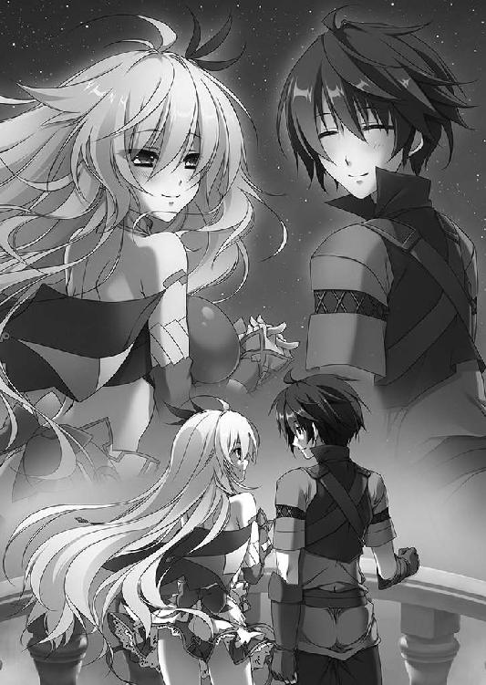
あとがき
はじめまして。前巻からは五ヶ月ぶり、他社で出している作品も読んでくださっている方とは一か月ぶりになりますね。
川口士です。『魔弾の王と戦姫』十巻をお届けします。いや、もう今回は本当にやばかった。ぎりぎりのぎりぎりまで編集さんに時間をもらい、駆け足になりつつもようやく書き上げることができました。ともあれ、楽しんでいただければ幸いです。
今巻で、六巻からはじまった第二部は幕を閉じました。第一部でほとんど語られることのなかった戦姫たちに焦点を当てた物語になったかなと思います。
黒弓やら魔弾の王やらについては、まあ、その、次でということで......。
第三部は、作中における春からはじまる予定です。ティグルと戦姫たちの活躍をお待ちください。いまのところは、来年の冬か春に出せたらなあという感じでしょうか。
さて、宣伝をいくつか。
柳井伸彦先生の手による『魔弾の王と戦姫』コミカライズ六巻が、十月二十三日に発売しました。小説における三巻から四巻あたりの話になりますが、力強く、それでいて緻密に描いていただいています。興味を持たれた方は、ぜひ。
それから『魔弾の王と戦姫 アンソロジーコミック』なるものも同じ日に出ました。こちらはさまざまな漫画家さんや作家さんによるものでして「アンソロジーですから本編を気にせず好きにやってください」という感じで進めてもらったところ、本当にいろいろな形で描いていただいて、恐縮するやら笑ったやら。手にとっていただけたら幸いです。
そして、やはりこの本が書店に並んでいるころには『魔弾の王と戦姫』アニメが各放送局で絶賛放映中です。ティグルやエレンが画面の中で動いて喋って食べて暴れています。こちらも興味を持っていただけたら、ぜひご鑑賞ください。
最後に謝辞を。編集のＮさん。時間をめいっぱい稼ぎつつ、アニメ関係の作業も細かくチェックいただいてありがとうございました。次こそは無理のない進行でなんとか。
そして、ティグルやエレンをはじめ数々の登場人物を魅力的に描きあげてくださった片桐雛太さん。ありがとうございました。おかげさまで、第二部をきれいに締めくくることができました。
本作が書店に置かれるまでの諸々に関わった方々と、この本を手にとってくださった皆様。ありがとうございます。
それではまたどこかでお会いしましょう。
川口 士
著者
川口士（かわぐち・つかさ）
１９７９年生まれ。２００６年、第18回富士見ファンタジア長編小説大賞にて『戦鬼』で大賞を受賞。
その後、いろいろなところでいろいろ書く。
ついに大台です。ついに二つ目のゴールにたどり着いたと思ったら、新たなスタート地点でもありました。ここまで来ることができたのは、本当に皆様のおかげです。まずは第二部の結末を楽しんでいただけたらと思います。
イラスト
片桐雛太（かたぎり・ひなた）
２００２年「ＯＮＥ２～永遠の約束～」でデビュー。
その後「恋姫†無双」などを手がけ、
色々描いているうちに今に至る。
無事10巻をお届けです。
イラストもお気に入りのものがあれば嬉しいです。
お楽しみいただければ何より幸せ。
個人ブログ「ひなだまり」
魔弾の王と戦姫10
2014年10月31日発行 ver.1.0
著者 川口士
発行者 三坂泰二
編集長 万木壮
発行所 株式会社ＫＡＤＯＫＡＷＡ
〒102-8177
東京都千代田区富士見2-13-3
03-3238-8745（営業）
編集 メディアファクトリー
0570-002-001（カスタマーサポートセンター）
年末年始を除く平日10:00～18:00まで
©Tsukasa Kawaguchi 2014
※無断で複製・複写・データ配信などをすることは、かたくお断りいたします。
本電子書籍は下記にもとづいて制作しました
ＭＦ文庫Ｊ
魔弾の王と戦姫10
発行日 2014年10月31日 初版第一刷発行

本作品の全部または一部を無断で複製、転載、配信、送信したり、ホームページ上に転載することを禁止します。また、本作品の内容を無断で改変、改ざん等を行うことも禁止します。
本作品購入時にご承諾いただいた規約により、有償・無償にかかわらず本作品を第三者に譲渡することはできません。
本作品を示すサムネイルなどのイメージ画像は、再ダウンロード時に予告なく変更される場合があります。
本作品は縦書きでレイアウトされています。
また、ご覧になるリーディングシステムにより、表示の差が認められることがあります。